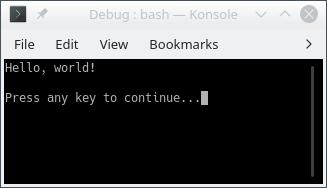

CSCI 1301 Book
May 22, 2024 (01:30:37 PM)
Introduction to Computers and Programming
Principles of Computer Programming
- Computer hardware changes frequently - from room-filling machines with punch cards and tapes to modern laptops and tablets - and will continue doing so.
- With these changes, the capabilities of computers increase rapidly (storage, speed, graphics, etc.)
- Computer programming languages also change
- Better programming language theory leads to new programming techniques
- Improved programming language implementations
- New languages are created, old ones updated
- There are hundreds
of programming languages, why?
- Different tools for different jobs
- Some languages are better suited for certain jobs
- For example, Python is best for scripting, Javascript is best for web pages, MySQL is best for databases, etc.
- Personal preference and popularity
- Different tools for different jobs
- This class is about “principles” of computer programming
- Common principles behind all languages will not change, even though hardware and languages do
- How to organize and structure data
- How to express logical conditions and relations
- How to solve problems with programs
Programming Language Concepts
We begin by discussing three categories of languages manipulated by computers. We will be studying and writing programs in high-level languages, but understanding their differences and relationships to other languages1 is of importance to become familiar with them.
- Machine language
- Computers are made of electronic circuits
- Circuits are components connected by wires
- Some wires carry data - e.g. numbers
- Some carry control signals - e.g. do an add or a subtract operation
- Instructions are settings on these control signals
- A setting is represented as a 0 or 1
- A machine language instruction is a group of settings - For example:
1000100111011000
- Most CPUs use one of two languages: x86 or ARM
- Computers are made of electronic circuits
- Assembly language
- Easier way for humans to write machine-language instructions
- Instead of 1s and 0s, it uses letters and “words” to represent an
instruction.
- Example x86 instruction:
which makes a copy of data stored in a component called AX and places it in one called BXMOV BX, AX - Assembler: Translates assembly language
instructions to machine language instructions
- For example:
MOV BX, AXtranslates into1000100111011000 - One assembly instruction = one machine-language instruction
- x86 assembly produces x86 machine code
- For example:
- Computers can only execute the machine code
- High-level language
- Hundreds including C#, C++, Java, Python, etc.
- Most programs are written in a high-level language since:
- More human-readable than assembly language
- High-level concepts such as processing a collection of items are easier to write and understand
- Takes less code since each statement might be translated into several assembly instructions
- Compiler: Translates high-level language to machine
code
- Finds “spelling” errors but not problem-solving errors
- Incorporates code libraries – commonly used pieces of code previously written such as Math.Sqrt(9)
- Optimizes high-level instructions – your code may look very different after it has been optimized
- Compiler is specific to both the source language and the target computer
- Compile high-level instructions into machine code then execute since computers can only execute machine code

A more subtle difference exists between high-level languages. Some (like C) are compiled (as we discussed above), some (like Python) are interpreted, and some (like C#) are in an in-between called managed.
- Compiled vs. Interpreted languages
- Not all high-level languages use a compiler - some use an interpreter
- Interpreter: Lets a computer “execute” high-level code by translating one statement at a time to machine code
- Advantage: Less waiting time before you can execute the program (no separate “compile” step)
- Disadvantage: Program executes slower since you wait for the high-level statements to be translated then the program is executed
- Managed high-level languages (like C#)
- Combine features of compiled and interpreted languages
- Compiler translates high-level statements to intermediate
language instructions, not machine code
- Intermediate language: Looks like assembly language, but not specific to any CPU
- run-time executes by interpreting the
intermediate language instructions - translates one at a time to machine
code
- Faster since translation is partially done already (by compiler), only a simple “last step” is done when executing the program
- Advantages of managed languages:
- In a “non-managed” language, a compiled program only works on one OS + CPU combination (platform) because it is machine code
- Managed-language programs can be reused on a different platform without recompiling - intermediate language is not machine code and not CPU-specific
- Still need to write an intermediate language interpreter for each platform (so it produces the right machine code), but, for a non-managed language, you must write a compiler for each platform
- Writing a compiler is more complicated and more work than writing an interpreter thus an interpreter is a quicker (and cheaper) way to put your language on different platforms
- Intermediate-language interpreter is much faster than a high-level language interpreter, so programs execute faster than an “interpreted language” like Python
- This still executes slower than a non-managed language (due to the interpreter), so performance-minded programmers use non-managed compiled languages (e.g. for video games)
Software Concepts
- Flow of execution in a program
- Program receives input from some source, e.g. keyboard, mouse, data in files
- Program uses input to make decisions
- Program produces output for the outside world to see, e.g. by displaying images on screen, writing text to console, or saving data in files
- Program interfaces
- GUI or Graphical User Interface: Input is from clicking mouse in visual elements on screen (buttons, menus, etc.), output is by drawing onto the screen
- CLI or Command Line Interface: Input is from text typed into “command prompt” or “terminal window,” output is text printed at same terminal window
- This class will use CLI because it is simple, portable, easy to work with – no need to learn how to draw images, just read and write text
Programming Concepts
Programming workflow
The workflow of the programmer will differ a bit depending on if the program is written in a compiled or an intprepreted programming language. From the distance, both looks like what is pictured in the the flowchart demonstrating roles and tasks of a programmer, beta tester and user in the creation of programs, but some differences remain:
- Compiled language workflow
- Writing down specifications
- Creating the source code
- Running the compiler
- Reading the compiler’s output, warning and error messages
- Fixing compile errors, if necessary
- Executing and testing the program
- Debugging the program, if necessary
- Interpreted language workflow
- Writing down specifications
- Creating the source code
- Executing the program in the interpreter
- Reading the interpreter’s output, determining if there is a syntax (language) error or the program finished executing
- Editing the program to fix syntax errors
- Testing the program (once it can execute with no errors)
- Debugging the program, if necessary
Interperted languages have
- Advantages: Fewer steps between writing and executing, can be a faster cycle
- Disadvantages: All errors happen when you execute the program, no distinction between syntax errors (compile errors) and logic errors (bugs in executing program)
(Integrated) Development Environment
Programers can either use a collection of tools to write, compile, debug and execute a program, or use an “all-in-one” solution called an Integrated Development Environment (IDE).
- The “Unix
philosophy” states that a program should do only one task, and do it
properly. For programmers, this means that
- One program will be needed to edit the source code, a text editor (it can be Geany, notepad, kwrite, emacs, sublime text, vi, etc.),
- One program will be needed to compile the source code, a compiler (for C#, it will be either mono or Roslyn,
- Other programs may be needed to debug, execute, or organize larger projects, such as makefile or MKBundle.
IDE “bundle” all of those functionality into a single interface, to ease the workflow of the programmer. This means sometimes that programmers have fewer control over their tools, but that it is easier to get started.
- Integrated Development Environment (IDE)
- Combines a text editor, compiler, file browser, debugger, and other tools
- Helps you organize a programming project
- Helps you write, compile, and test code in one place
In particular, Visual Studio is an IDE, and it uses its own vocabulary:
- Solution: An entire software project, including source code, metadata, input data files, etc.
- “Build solution”: Compile all of your code
- “Start without debugging”: Execute the compiled code
- Solution location: The folder (on your computer’s file system) that contains the solution, meaning all your code and the information needed to compile and execute it
C# Fundamentals
Introduction to the C# Language
- C# is a managed language (as discussed previously)
- Write in a high-level language, compile to intermediate language, run intermediate language in interpreter
- Intermediate language is called CIL (Common Intermediate Language)
- Interpreter is called .NET run-time
- Standard library is called .NET Framework, comes with the compiler and run-time
- It is widespread and popular
- It is “programming language of the year 2023” in the very well-respected TIOBE Index.
- It was the first in the list of “3 Future Programming Languages You Should Learn Between 2022 and 2030”, because of the growing popularity of Unity.
- 7th most “desired / admired” language on StackOverflow
- .NET is the first most used “other” library/framework
- More insights on its evolution can be found in this blog post.
The Object-Oriented Paradigm
- C# is called an “object-oriented” language
- Programming languages have different paradigms: philosophies for organizing code, expressing ideas
- Object-oriented is one such paradigm, C# uses it
- Meaning of object-oriented: Program mostly consists of objects, which are reusable modules of code
- Each object contains some data (attributes) and some functions related to that data (methods)
- Object-oriented terms
- Class: A blueprint or template for an object. Code that defines what kind of data the object will contain and what operations (functions) you will be able to do with that data
- Object: A single instance of a class, containing
running code with specific values for the data. Each object is a
separate “copy” based on the template given by the class.
Analogy: A class is like a floorplan while an object is the house build from the floorplan. Plus, you can make as many houses as you would like from a single floorplan. - Attribute: A piece of data stored in an
object.
Example: A House class has a spot for a color property while an house object has a color (e.g. “Green”). - Method: A function that modifies an object. This
code is part of the class, but when it is executed, it modifies only a
specific object and not the class.
Example: A House class with a method to change the house color. Using this method changes the color a single house object but does not change the House class or the color on any other house objects.
- Examples:
- A Car Class
- Attributes: Color, engine status (on/off), gear position
- Methods: Press gas or brake pedal, turn key on/off, shift transmission
- A Car Object
Example: A Porsche911 object that is Red, Engine On, and in 1st gear - An “Audio File” Class represents a song being played in a
music player
- Attributes: Sound wave data, current playback position, target speaker device
- Methods: Play, pause, stop, fast-forward, rewind
- An Audio File Object
Example: A NeverGonnaGiveYouUp object that is “rolled wave data”, 0:00, speaker01
- A Car Class
First Program
It is customary to start the study of a programming language with a “Hello World” program, that simply displays “Hello World”. It is a simple way of seeing a first, simple example of the basic structure of a program. Here’s a simple “hello world” program in the C# language:
Hello World
/* I'm a multi-line comment,
* I can span over multiple lines!
*/
using System;
class Program
{
static void Main()
{
Console.WriteLine("Hello, world!"); // I'm an in-line comment.
}
}Features of this program:
A multi-line comment: everything between the
/*and*/is considered a comment, i.e. text for humans to read. It will be ignored by the C# compiler and has no effect on the program.A
usingstatement: This imports code definitions from the System namespace, which is part of the .NET Framework (the standard library).- In C#, code is organized into namespaces, which group related classes together
- If you want to use code from a different namespace, you need a
usingstatement to “import” that namespace - All the standard library code is in different namespaces from the
code you will be writing, so you’ll need
usingstatements to access it
A class declaration2
- Syntax:
class [name of class] { [body of the class] }- All code between opening
{and closing}is the body of the class named by theclass [name of class]statement
A method declaration
- A collection of instructions with a name
- Can be used by typing its name
- A method is similar to a paragraph, in that it can contain multiple statements, and a class is similar to a chapter, in that it can have multiple methods within its body.
- A C# program requires a method called
Main, and, in our example, is followed by empty parentheses (we will get to those later, but they are required) - Just like the class declaration, the body of the method beings with
{and ends with}
A statement inside the body of the method:
Console.WriteLine("Hello, world!"); // I'm an in-line comment.This is the part of the program that actually “does something”: It displays a line of text to the console:

This statement contains a class name (
Console), followed by a method name (WriteLine). It calls theWriteLinemethod in theConsoleclass.The argument to the
WriteLinemethod is the text “Hello, world!”, which is in parentheses after the name of the method. This is the text that gets printed in the console: TheWriteLinemethod (which is in the standard library) takes an argument and prints it to the console.Note that the argument to
WriteLineis inside double-quotes. This means it is a string, i.e. textual data, not a piece of C# code. The quotes are required in order to distinguish between text and code.A statement must end in a semicolon (the class header and method header are not statements)
An in-line comment: All the text from the
//to the end of the line is considered a comment, and is ignored by the C# compiler.
Rules of C# Syntax
- Each statement must end in a semicolon (
;), except for some statements that we will study in the future that contains opening{and closing}, that do not end in a;.- Note that class and method declarations, as well as comments, are
not statements and hence do not need to ends with a
;. Typically, a method contains some statements, but it is not a statement.
- Note that class and method declarations, as well as comments, are
not statements and hence do not need to ends with a
- All words are case-sensitive
- A class named
Programis not the same as one namedprogram - A method named
writelineis not the same as one namedWriteLine
- A class named
- Braces and parentheses must always be matched
- Once you start a class or method definition with
{, you must end it with}
- Once you start a class or method definition with
- Whitespace has almost no meaning
- “Whitespaces” refer to spaces (sometimes denoted “ ”, “␣” or “⌴”), tabs (which consists in 4 spaces), and newlines (sometimes denoted “↵”, “↩︎” or “⏎”)
- There must be at least 1 space between words
- Other than that, spaces and new lines are just to help humans read the code
- Spaces are counted exactly if they are inside string data,
e.g.
"Hello world!"is different from"Hello world!" - Otherwise, entire program could be written on one line3; it would have the same meaning
- All C# applications must have a
Mainmethod- Name must match exactly, otherwise .NET run-time will get confused
- This is the first code to execute when the application starts – any other code (in methods) will only execute when its method is called
Conventions of C# Programs
- Conventions: Not enforced by the compiler/language, but expected by
humans
- Program will still work if you break them, but other programmers will be confused
- Indentation
- After a class or method declaration (header), put the opening
{on a new line underneath it - Then indent the next line by 4 spaces, and all other lines “inside” the class or method body
- De-indent by 4 spaces at end of method body, so ending
}aligns vertically with opening{ - Method definition inside class definition: Indent body of method by another 4 spaces
- In general, any code between
{and}should be indented by 4 spaces relative to the{and}
- After a class or method declaration (header), put the opening
- Code files
- C# code is stored in files that end with the extension “.cs”
- Each “.cs” file contains exactly one class
- The name of the file is the same as the name of the class
(Program.cs contains
class Program)
Note that some of those conventions are actually rules in different programming languages (typically, the last two regarding code files are mandatory rules in java).
Reserved Words and Identifiers
- Reserved words: Keywords in the C# language
- Note they have a distinct color in the code sample and in your IDE
- Built-in commands/features of the language
- Can only be used for one specific purpose; meaning cannot be changed
- Examples:
usingclasspublicprivatenamespacethisifelseforwhiledoreturn
- There is no need to memorize the whole list of keywords, as we will only introduce the ones we need on a “per need” basis.
- Identifiers: Human-chosen names
- Names for classes (
Rectangle,ClassRoom, etc.), variables (age,name, etc.), methods (ComputeArea,GetLength, etc), namespaces, etc. - Some have already been chosen for the standard library (e.g.
system,Console,WriteLine,Main), but they are still identifiers, not keywords - Rules for identifiers:
- Must not be a reserved word
- Must contain only letters (lower case, from
atoz, or upper case, fromAtoZ), numbers (made of digits from0to9), and underscore (_). But they cannot contain spaces. - Must not begin with a number
- Are case sensitive
- Must be unique (you cannot re-use the same identifier twice in the same scope – a concept we will discuss later)
- Conventions for identifiers
- Should be descriptive, e.g. “
AudioFile” or “userInput” not “a” or “x” - Should be easy for humans to read and type
- If name is multiple words, use CamelCase (or its
variation Pascal
case) to distinguish words, e.g.
myHeightInMetersordistanceFromEarthToMoon. - Class and method names should start with capitals, e.g. “
class AudioFile” - Variable names should start with lowercase letters, then capitalize
subsequent words, e.g. “
myFavoriteNumber”
- Should be descriptive, e.g. “
- Names for classes (
Write and WriteLine
The
WriteLinemethodWe saw this in the “Hello World” program:
Console.WriteLine("Hello World!");results in “Hello World!” being displayed in the terminalIn general,
Console.WriteLine("text");will display the text but not the “’s in the terminal, then start a new lineThis means a second
Console.WriteLinewill display its text on the next line of the terminal. For example, this program:using System; class Welcome { static void Main() { Console.WriteLine("Hello"); Console.WriteLine("World!"); } }will display the following output in the terminal:
Hello World!
Methods with multiple statements
- Note that our two-line example has a
Mainmethod with multiple statements - In C#, each statement must end in a semicolon
- Class and method declarations are not statements
- Each line of code in your .cs file is not necessarily a statement
- A single invocation/call of the
WriteLinemethod is a statement
- Note that our two-line example has a
The
WritemethodConsole.WriteLine("text")prints the text, then starts a new line in the terminal – it effectively “hits enter” after printing the textConsole.Write("text")just prints the text, without starting a new line. It’s like typing the text without hitting “enter” afterwards.Even though two
Console.Writecalls are two statements, and appear on two lines, they will result in the text being printed on just one line. For example, this program:using System; class Welcome { static void Main() { Console.Write("Hello"); Console.Write("World!"); } }will display the following output in the terminal:
HelloWorld!Note that there is no space between “Hello” and “World!” because we did not type one in the argument to
Console.Write
Combining
WriteandWriteLineWe can use both
WriteLineandWritein the same programAfter a call to
Write, the “cursor” is on the same line after the printed text; after a call toWriteLinethe “cursor” is at the beginning of the next lineThis program:
using System; class Welcome { static void Main() { Console.Write("Hello "); Console.WriteLine("World!"); Console.Write("Welcome to "); Console.WriteLine("CSCI 1301!"); } }will display the following output in the terminal:
Hello world! Welcome to CSCI 1301!
Escape Sequences
Explicitly writing a new line
So far we’ve used
WriteLinewhen we want to create a new line in the outputThe escape sequence
\ncan also be used to create a new line – it represents the “newline character,” which is what gets printed when you type “enter”This program will produce the same output as our two-line “Hello World” example, with each word on its own line:
using System; class Welcome { static void Main() { Console.Write("Hello\nWorld!\n"); } }
Escape sequences in detail
An escape sequence uses “normal” letters to represent “special”, hard-to-type characters
\nrepresents the newline character, i.e. the result of pressing “enter”\trepresents the tab character, which is a single extra-wide space (you usually get it by pressing the “tab” key)\"represents a double-quote character that will get printed on the screen, rather than ending the text string in the C# code.Without this, you couldn’t write a sentence with quotation marks in a
Console.WriteLine, because the C# compiler would assume the quotation marks meant the string was endingThis program will not compile because
in quotesis not valid C# code, and the compiler thinks it is not part of the string:// Incorrect Code class Welcome { static void Main() { Console.WriteLine("This is "in quotes""); // This is parsed as if the string was "This is " // followed by in quotes, which is not valid C#, // followed by the empty string "". } }This program will display the sentence including the quotation marks:
using System; class Welcome { static void Main() { Console.WriteLine("This is \"in quotes\""); } }
Note that all escape sequences begin with a backslash character (
\), called the “escape character”General format is
\[key letter]– the letter after the backslash is like a “keyword” indicating which special character to display. You can refer to the full list on microsoft documentation.If you want to put an actual backslash in your string, you need the escape sequence
\\, which prints a single backslashThis will result in a compile error because
\Uis not a valid escape sequence:Console.WriteLine("Go to C:\Users\Edward");This will display the path correctly:
Console.WriteLine("Go to C:\\Users\\Edward");
Datatypes and Variables
Datatype Basics
- Recall the basic structure of a program
- Program receives input from some source, uses input to make decisions, produces output for the outside world to see
- In other words, the program reads some data, manipulates data, and writes out new data
- In C#, data is stored in objects during the program’s execution, and manipulated using the methods of those objects
- This data has types
- Numbers (the number 2) are different from text (the word “two”)
- Text data is called “strings” because each letter is a character and a word is a string of characters
- Within “numeric data,” there are different types of numbers
- Natural numbers (ℕ): 0, 1, 2, …
- Integers (ℤ): … -2, -1, 0, 1, 2, …
- Real numbers (ℝ): 0.5, 1.333333…, -1.4, etc.
- Basic Datatypes in C#
- C# uses keywords to name the types of data
- Text data:
string: a string of characters, like"Hello world!"char: a single character, like'e'or't'
- Numeric data:
int: An integer, as defined previouslyuint: An unsigned integer, in other words, a natural number (positive integers only)float: A “floating-point” number, which is a real number with a fractional part, such as 3.85double: A floating-point number with “double precision” – also a real number, but capable of storing more significant figuresdecimal: An “exact decimal” number – also a real number, but has fewer rounding errors thanfloatanddouble(we will explore the difference later) 4
Literals and Variables
Literals and their types
- A literal is a data value written in the code
- A form of “input” provided by the programmer rather than the user; its value is fixed throughout the program’s execution
- Literal data must have a type, indicated by syntax:
stringliteral: text in double quotes, like"hello"charliteral: a character in single quotes, like'a'intliteral: a number without a decimal point, with or without a minus sign (e.g.52)longliteral: just like anintliteral but with the suffixlorL, e.g.4Ldoubleliteral: a number with a decimal point, with or without a minus sign (e.g.-4.5)floatliteral: just like adoubleliteral but with the suffixforF(for “float”), e.g.4.5fdecimalliteral: just like adoubleliteral but with the suffixmorM(for “deciMal”), e.g.6.01m
Variables overview
Variables store data that can vary (change) during the program’s execution
They have a type, just like literals, and also a name
You can use literals to write data that gets stored in variables
Sample program with variables:
using System; class MyFirstVariables { static void Main() { // Declaration int myAge; string myName; // Assignment myAge = 29; myName = "Edward"; // Displaying Console.WriteLine($"My name is {myName} and I am {myAge} years old."); } }This program shows three major operations you can do with variables.
- First it declares two variables, an
int-type variable named “myAge” and astring-type variable named “myName” - Then, it assigns values to each of those variables,
using literals of the same type.
myAgeis assigned the value 29, using theintliteral29, andmyNameis assigned the value “Edward”, using thestringliteral"Edward" - Finally, it displays the current value of each
variable by using the
Console.WriteLinemethod and string interpolation, in which the values of variables are inserted into a string by writing their names with some special syntax (a$character at the beginning of the string, and braces around the variable names)
- First it declares two variables, an
Variable Operations
Declaration
- This is when you specify the name of a variable and its type
- The syntax is the type keyword, a space, the name of the variable, then a semi-colon.
- Examples:
int myAge;,string myName;,double winChance;. - A variable name is an identifier, so it should follow the rules and
conventions
- Can only contain letters and numbers
- Must be unique among all variable, method, and class names
- Should use CamelCase if it contains multiple words
- Note that the variable’s type is not part of its name: two variables cannot have the same name even if they are different types
- Multiple variables can be declared in the same statement:
string myFirstName, myLastName;would declare two strings called respectivelymyFirstNameandmyLastName
Assignment
- The act of changing the value of a variable
- Uses the symbol
=, which is the assignment operator, not a statement of equality – it does not mean “equals” - Direction of assignment is right to left: the
variable goes on the left side of the
=symbol, and its new value goes on the right - Syntax:
variable_name = value; - Example:
myAge = 29; - Value must match the type of the variable. If
myAgewas declared as anint-type variable, you cannot writemyAge = "29";because"29"is astring
Initialization (Declaration + Assignment)
- Initialization statement combines declaration and assignment in one single statement (it is just a shortcut, a.k.a. some “syntactical sugar”, and not something new)
- Creates a new variable and also gives it an initial value
- The syntax is the datatype of the variable, the name of the
variable, the
=sign, the value we want to store, and a semi-colon - Example:
string myName = "Edward"; - Can only be used once per variable, since you can only declare a variable once
Assignment Details
Assignment replaces the “old” value of the variable with a “new” one; it is how variables vary
- If you initialize a variable with
int myAge = 29;and then writemyAge = 30;, the variablemyAgenow stores the value 30
- If you initialize a variable with
You can assign a variable to another variable: just write a variable name on both sides of the
=operatorThis will take a “snapshot” of the current value of the variable on the right side, and store it into the variable on the left side
For example, in this code:
int a = 12; int b = a; a = -5;the variable
bgets the value 12, because that’s the value thatahad when the statementint b = awas executed. Even thoughawas then changed to -5 afterward,bis still12.
Displaying
- Only text (strings) can be displayed in the console
- When we want to print a mixture of text and variables with
Console.WriteLine, we need to convert all of them to a string - String interpolation: a mechanism for converting a
variable’s value to a
stringand inserting it into the main string- Syntax:
$"text {variable} text"– begin with a$symbol, then put variable’s name inside brackets within the string - Example:
$"I am {myAge} years old" - When this line of code is executed, it reads the variable’s current
value, converts it to a string (
29becomes"29"), and inserts it into the surrounding string - Displayed:
I am 29 years old
- Syntax:
- If the argument to
Console.WriteLineis the name of a variable, it will automatically convert that variable to astringbefore displaying it - For example,
Console.WriteLine(myAge);will display “29” in the console, as if we had writtenConsole.WriteLine($"{myAge}"); - When string interpolation converts a variable to a string, it must
call a “string conversion” method supplied with the data type (
int,double, etc.). All built-in C# datatypes come with string conversion methods, but when you write your own data types (classes), you’ll need to write your own string conversions – string interpolation will not magically “know” how to convertMyClassvariables tostrings
On a final note, observe that you can write statements mixing
multiple declarations and assignments, as in int myAge = 10, yourAge, ageDifference;
that declares three variables of type int and set the
value of the first one. It is generally recommended to separate those
instructions in different statements as you begin, to ease debugging and
have a better understanding of the “atomic steps” your program should
perform.
Format Specifiers
- Formats for displaying numbers
There are lots of possible ways to display a number, especially a fraction (how many decimal places to use?)
String interpolation has a default way to format numbers, but it might not always be the best
For example, consider this program:
decimal price = 19.99m; decimal discount = 0.25m; decimal salePrice = price – discount * price; Console.WriteLine($"{price} with a discount of " + $"{discount} is {salePrice}");It will display this output:
19.99 with a discount of 0.25 is 14.9925But this isn’t the best way to display prices and discounts. Obviously, the prices should have dollar signs, but also, it does not make sense to show a price with fractional cents (14.9925) – it should be rounded to two decimal places. You might also prefer to display the discount as 25% instead of 0.25, since people usually think of discounts as percentages.
- Improving interpolation with format specifiers
You can change how numbers are displayed by adding a format specifier to a variable’s name in string interpolation
Format specifier: A special letter indicating how a numeric value should be converted to a string
General format is
{[variable]:[format specifier]}, e.g.{numVar:N}Common format specifiers:
Format specifier Description N or n Adds a thousands separator, displays 2 decimal places (by default) E or e Uses scientific notation, displays 6 decimal places (by default) C or c Formats as currency: Adds a currency symbol, adds thousands separator, displays 2 decimal places (by default) P or p Formats as percentage with 2 decimal places (by default) Example usage with our “discount” program:
decimal price = 19.99m; decimal discount = 0.25m; decimal salePrice = price – discount * price; Console.WriteLine($"{price:C} with a discount of " + $"{discount:P} is {salePrice:C}");will display
$19.99 with a discount of 25.00% is $14.99
- Format specifiers with custom rounding
- Each format specifier uses a default number of decimal places, but you can change this with a precision specifier
- Precision specifier: A number added after a format specifier indicating how many digits past the decimal point to display
- Format is
{[variable]:[format specifier][precision specifier]}, e.g.{numVar:N3}. Note there is no space or other symbol between the format specifier and the precision specifier, and the number can be more than one digit ({numVar:N12}is valid) - Examples:
Given the declarations
double bigNumber = 1537963.666; decimal discount = 0.1337m;Statement Display Console.WriteLine($"{bigNumber:N}");1,537,963.67Console.WriteLine($"{bigNumber:N3}");1,537,963.666Console.WriteLine($"{bigNumber:N1}");1,537,963.7Console.WriteLine($"{discount:P1}");13.4%Console.WriteLine($"{discount:P4}");13.3700%Console.WriteLine($"{bigNumber:E}");1.537964E+006Console.WriteLine($"{bigNumber:E2}");1.54E+006
Variables in Memory
- A variable names a memory location
- Data is stored in memory (RAM), so a variable “stores data” by storing it in memory
- Declaring a variable reserves a memory location (address) and gives it a name
- Assigning to a variable stores data to the memory location (address) named by that variable
Sizes of Numeric Datatypes
- Numeric datatypes have different sizes
- Amount of memory used/reserved by each variable depends on the variable’s type
- Amount of memory needed for an integer data type depends on the size
of the number
intuses 4 bytes of memory, can store numbers in the range [−231, 231 − 1]longuses 8 bytes of memory can store numbers in the range [−263, 263 − 1]shortuses 2 bytes of memory, can store numbers in the range [−215, 215 − 1]sbyteuses only 1 bytes of memory, can store numbers in the range [−128, 127]
- Unsigned versions of the integer types use the same amount of
memory, but can store larger positive numbers
byteuses 1 byte of memory, can store numbers in the range [0, 255]ushortuses 2 bytes of memory, can store numbers in the range [0, 216 − 1]uintuses 4 bytes of memory, can store numbers in the range [0, 232 − 1]ulonguses 8 bytes of memory, can store numbers in the range [0, 264 − 1]- This is because in a signed integer, one bit (digit) of the binary number is needed to represent the sign (+ or -). This means the actual number stored must be 1 bit smaller than the size of the memory (e.g. 31 bits out of the 32 bits in 4 bytes). In an unsigned integer, there is no “sign bit”, so all the bits can be used for the number.
- Amount of memory needed for a floating-point data type depends on
the precision (significant figures) of the number
floatuses 4 bytes of memory, can store positive or negative numbers in a range of approximately [10−45, 1038], with 7 significant figures of precisiondoubleuses 8 bytes of memory, and has both a wider range (10−324 to 10308) and more significant figures (15 or 16)decimaluses 16 bytes of memory, and has 28 or 29 significant figures of precision, but it actually has the smallest range (10−28 to 1028) because it stores decimal fractions exactly
- Difference between binary fractions and decimal fractions
floatanddoublestore their data as binary (base 2) fractions, where each digit represents a power of 2- The binary number 101.01 represents 4 + 1 + 1/4, or 5.25 in base 10
- More specifically, they use binary scientific notation: A mantissa
(a binary integer), followed by an exponent assumed to be a power of 2,
which is applied to the mantissa
- 10101e-10 means a mantissa of 10101 (i.e. 21 in base 10) with an exponent of -10 (i.e. 2−2 in base 10), which also produces the value 101.01 or 5.25 in base 10
- Binary fractions cannot represent all base-10 fractions, because they can only represent fractions that are negative powers of 2. 1/10 is not a negative power of 2 and cannot be represented as a sum of 1/16, 1/32, 1/64, etc.
- This means some base-10 fractions will get “rounded” to the nearest finite binary fraction, and this will cause errors when they are used in arithmetic
- On the other hand,
decimalstores data as a base-10 fraction, using base-10 scientific notation - This is slower for the computer to calculate with (since computers work only in binary) but has no “rounding errors” with fractions that include 0.1
- Use
decimalwhen working with money (since money uses a lot of 0.1 and 0.01 fractions),doublewhen working with non-money fractions
Summary of numeric data types and sizes:
| Type | Size | Range of Values | Precision |
|---|---|---|---|
sbyte |
1 bytes | −128…127 | N/A |
byte |
1 bytes | 0…255 | N/A |
short |
2 bytes | −215…215 − 1 | N/A |
ushort |
2 bytes | 0…216 − 1 | N/A |
int |
4 bytes | −231…231 − 1 | N/A |
uint |
4 bytes | 0…232 − 1 | N/A |
long |
8 bytes | −263…263 − 1 | N/A |
ulong |
8 bytes | 0…264 − 1 | N/A |
float |
4 bytes | ±1.5 ⋅ 10−45… ± 3.4 ⋅ 1038 | 7 digits |
double |
8 bytes | ±5.0 ⋅ 10−324… ± 1.7 ⋅ 10308 | 15-16 digits |
decimal |
16 bytes | ±1.0 ⋅ 10−28… ± 7.9 ⋅ 1028 | 28-29 digits |
Value and Reference types
Value and reference types are different ways of storing data in memory
Variables name memory locations, but the data that gets stored at the named location is different for each type
For a value type variable, the named memory location stores the exact data value held by the variable (just what you’d expect)
Value types: all the numeric types (
int,float,double,decimal, etc.),char, andboolFor a reference type variable, the named memory location stores a reference to the data, not the data itself
- The contents of the memory location named by the variable are the address of another memory location
- The other memory location is where the variable’s data is stored
- To get to the data, the computer first reads the location named by the variable, then uses that information (the memory address) to find and read the other memory location where the data is stored
Reference types:
string,object, and all objects you create from your own classesAssignment works differently for reference types
Assignment always copies the value in the variable’s named memory location - but in the case of a reference type that’s just a memory address, not the data
Assigning one reference-type variable to another copies the memory address, so now both variables “refer to” the same data
Example:
string word = "Hello"; string word2 = word;Both
wordandword2contain the same memory address, pointing to the same memory location, which contains the string “Hello”. There is only one copy of the string “Hello”;word2does not get its own copy.
Overflow 🛡
Assume a car has a 4-digit odometer, and currently, it shows
9999. What does the odometer show if you drive the car another mile? As you might guess, it shows0000while it should show10000. The reason is the odometer does not have a counter for the fifth digit. Similarly, in C#, when you do arithmetic operations on integral data, the result may not fit in the corresponding data type. This situation is called an overflow error.In an unsigned data type variable with N bits, we can store the numbers from 0 to 2N − 1. In signed data type variables, the high order bit represents the sign of the number as follows:
- 0 means zero or a positive value
- 1 means a negative value
With the remaining N − 1 bits, we can represent 2(N − 1) values. Hence, considering the sign bit, we can store a number from −2(N − 1) to 2(N − 1) − 1 in the variable.
In some programming languages like C and C++, overflow errors cause undefined behavior, and can crash your program. In C#, however, the extra bits are just ignored, and the program will continue executing even though the value in the variable may not make sense. If the programmer is not careful to check for the possibility of overflow errors, they can lead to unwanted program behavior and even severe security problems.
For example, assume a company gives loans to its employee. Couples working for the company can get loans separately, but the total amount cannot exceed $10,000. The following program looks like it checks loan requests to ensure they are below the limit, but it can be attacked using an overflow error. (This program uses notions you may have not studied yet, but that should not prevent you from reading the source code and executing it.)
using System; class Program { static void Main() { uint n1, n2; Console.WriteLine("Enter the requested loan amount for the first person:"); n1 = uint.Parse(Console.ReadLine()); Console.WriteLine("Enter the requested loan amount for the second person:"); n2 = uint.Parse(Console.ReadLine()); if (n1 + n2 < 10000) { Console.WriteLine($"Pay ${n1} to the first person"); Console.WriteLine($"Pay ${n2} to the second person"); } else { Console.WriteLine("Error: the sum of the loans exceeds the maximum allowance."); } } }If the user enters 2 and 4,294,967,295, we expect to see the error message (“Error: the sum of loans exceeds the maximum allowance.”). However, this is not what will happen, and the request will be accepted even though it should not have. The reason can be explained as follows:
uintis a 32-bit data type.- The binary representation of 2 and 4,294,967,295 are
00000000000000000000000000000010and11111111111111111111111111111111. - Therefore, the sum of these numbers should be
100000000000000000000000000000001, which needs 33 bits. - Nevertheless, there are only 32 bits available for the result, and
the extra bits will be dropped, so the result will be
00000000000000000000000000000001. This is less than 10,000, so the program will conclude that the sum of the loan values is less than 10,000.
Underflow 🛡
Sometimes, the result of arithmetic operations over floating-point numbers is smaller than the minimum value that can be stored in the corresponding data type. This problem is known as the underflow problem.
In C#, in case of an underflow, the result will be zero.
For example, the smallest value that can be stored in a
floatvariable is 1.5 ⋅ 10−45. If we attempt to divide this value by 10, the variable will get the value 0, not 1.5 ⋅ 10−46:using System; class Program { static void Main() { float myNumber; myNumber = 1E-45f; Console.WriteLine(myNumber); //outputs 1.401298E-45 myNumber = myNumber / 10; Console.WriteLine(myNumber); //outputs 0 myNumber = myNumber * 10; Console.WriteLine(myNumber); //outputs 0 myNumber = (1E-45f / 10) * 10; Console.WriteLine(myNumber); //outputs 0 } }An underflow error can result in “losing” data in the middle of a series of operations: even if you immediately multiply by 10 again, the intermediate result was less than 1.5 ⋅ 10−45, so the final result is still 0.
Operators
Arithmetic Operators
Variables can be used to do math. All the usual arithmetic operations are available in C#:
| Operation | C# Operator | C# Expression |
|---|---|---|
| Addition | + |
myVar + 7 |
| Subtraction | - |
myVar - 7 |
| Multiplication | * |
myVar * 7 |
| Division | / |
myVar / 7 |
| Remainder (a.k.a. modulo) | % |
myVar % 7 |
Note: the “remainder” or “modulo” operator represents the remainder
after doing integer division between its two operands.
For example, 44 % 7 = 2 because 44/7 = 6 when rounded down, then do 7*6
to get 42 and 44 - 42 = 2.
Arithmetic and variables
The result of an arithmetic expression (like those shown in the table) is a numeric value
- For example, the C# expression
3 * 4has the value12, which isintdata
- For example, the C# expression
A numeric value can be assigned to a variable of the same type, just like a literal:
int myVar = 3 * 4;initializes the variablemyVarto contain the value12A numeric-type variable can be used in an arithmetic expression
When a variable is used in an arithmetic expression, its current value is read, and the math is done on that value
Example:
int a = 4; int b = a + 5; a = b * 2;- To execute the second line of the code, the computer will first
evaluate the expression on the right side of the
=sign. It reads the value of the variablea, which is 4, and then computes the result of4 + 5, which is 9. Then, it assigns this value to the variableb(remember assignment goes right to left). - To execute the third line of code, the computer first evaluates the
expression on the right side of the
=sign, which means reading the value ofbto use in the arithmetic operation.bcontains 9, so the expression is9 * 2, which evaluates to 18. Then it assigns the value 18 to the variablea, which now contains 18 instead of 4.
- To execute the second line of the code, the computer will first
evaluate the expression on the right side of the
A variable can appear on both sides of the
=sign, like this:int myVar = 4; myVar = myVar * 2;This looks like a paradox because
myVaris assigned to itself, but it has a clear meaning because assignment is evaluated right to left. When executing the second line of code, the computer evaluates the right side of the=before doing the assignment. So it first reads the current (“old”) value ofmyVar, which is 4, and computes4 * 2to get the value 8. Then, it assigns the new value tomyVar, overwriting its old value.
Compound assignment operators
- The pattern of “compute an expression with a variable, then assign the result to that variable” is common, so there are shortcuts for doing it
- The compound assignment operators change the value of a variable by adding, subtracting, etc. from its current value, equivalent to an assignment statement that has the value on both sides:
| Statement | Equivalent |
|---|---|
x += 2; |
x = x + 2; |
x -= 2; |
x = x - 2; |
x *= 2; |
x = x * 2; |
x /= 2; |
x = x / 2; |
x %= 2; |
x = x % 2; |
Implicit and Explicit Conversions Between Datatypes
Assignments from different types
The “proper” way to initialize a variable is to assign it a literal of the same type:
int myAge = 29; double myHeight = 1.77; float radius = 2.3f;Note that
1.77is adoubleliteral, while2.3fis afloatliteralIf the literal is not the same type as the variable, you will sometimes get an error – for example,
float radius = 2.3will result in a compile error – but sometimes, it appears to work fine: for examplefloat radius = 2;compiles and executes without error even though 2 is anintvalue.In fact, the value being assigned to the variable must be the same type as the variable, but some types can be implicitly converted to others
Implicit conversions
Implicit conversion allows variables to be assigned from literals of the “wrong” type: the literal value is first implicitly converted to the right type
- In the statement
float radius = 2;, theintvalue 2 is implicitly converted to an equivalentfloatvalue,2.0f. Then the computer assigns2.0fto theradiusvariable.
- In the statement
Implicit conversion also allows variables to be assigned from other variables that have a different type:
int length = 2; float radius = length;
When the computer executes the second line of this code, it reads the
variable length to get an int value 2. It
then implicitly converts that value to 2.0f, and then
assigns 2.0f
to the float-type variable
radius.
Implicit conversion only works between some data types: a value will only be implicitly converted if it is “safe” to do so without losing data
Summary of possible implicit conversions:
Type Possible Implicit Conversions shortint,long,float,double,decimalintlong,float,double,decimallongfloat,double,decimalushortuint,int,ulong,long,decimal,float,doubleuintulong,long,decimal,float,doubleulongdecimal,float,doublefloatdoubleIn general, a data type can only be implicitly converted to one with a larger range of possible values
Since an
intcan store any integer between −231 and 231 − 1, but afloatcan store any integer between −3.4 × 1038 and 3.4 × 1038 (as well as fractional values), it is always safe to store anintvalue in afloatYou cannot implicitly convert a
floatto anintbecause anintstores fewer values than afloat– it cannot store fractions – so converting afloatto anintwill lose dataNote that all integer data types can be implicitly converted to
floatordoubleEach integer data type can be implicitly converted to a larger integer type:
short→int→longUnsigned integer data types can be implicitly converted to a larger signed integer type, but not the same signed integer type:
uint→long, but notuint→int- This is because of the “sign bit”: a
uintcan store larger values than anintbecause it does not use a sign bit, so converting a largeuintto anintmight lose data
- This is because of the “sign bit”: a
Explicit conversions
Any conversion that is “unsafe” because it might lose data will not happen automatically: you get a compile error if you assign a
doublevariable to afloatvariableIf you want to do an unsafe conversion anyway, you must perform an explicit conversion with the cast operator
Cast operator syntax:
([type name]) [variable or value]– the cast is “right-associative”, so it applies to the variable to the right of the type nameExample:
(float) 2.8or(int) radiusExplicit conversions are often used when you (the programmer) know the conversion is actually “safe” – data will not actually be lost
For example, in this code, we know that 2.886 is within the range of a
float, so it is safe to convert it to afloat:float radius = (float) 2.886;The variable
radiuswill be assigned the value2.886f.For example, in this code, we know that 2.0 is safe to convert to an
intbecause it has no fractional part:double length = 2.0; int height = (int) length;The variable
heightwill be assigned the value2.
Explicit conversions only work if there exists code to perform the conversion, usually in the standard library. The cast operator isn’t “magic” – it just calls a method that is defined to convert one type of data (e.g.
double) to another (e.g.int).- All the C# numeric types have explicit conversions to each other defined
stringdoes not have explicit conversions defined, so you cannot writeint myAge = (int) "29";
If the explicit conversion is truly unsafe (will lose data), data is lost in a specific way
Casting from floating-point (e.g.
double) types to integer types: fractional part of number is truncated (ignored/dropped)In
int length = (int) 2.886;, the value 2.886 is truncated to 2 by the cast toint, so the variablelengthgets the value 2.Casting from more-precise to less-precise floating point type: number is rounded to nearest value that fits in less-precise type:
decimal myDecimal = 123456789.999999918m; double myDouble = (double) myDecimal; float myFloat = (float) myDouble;In this code,
myDoublegets the value 123456789.99999993, whilemyFloatgets the value123456790.0f, as the originaldecimalvalue is rounded to fit types with fewer significant figures of precision.Casting from a larger integer to a smaller integer: the most significant bits are truncated – remember that numbers are stored in binary format
This can cause weird results, since the least-significant bits of a number in binary do not correspond to the least significant digits of the equivalent base-10 number
Casting from another floating point type to
decimal: Either value is stored precisely (no rounding), or program crashes withSystem.OverflowExceptionif value is larger thandecimal’s maximum value:decimal fromSmall = (decimal) 42.76875; double bigDouble = 2.65e35; decimal fromBig = (decimal) bigDouble;In this code,
fromSmallwill get the value42.76875m, but the program will crash when attempting to castbigDoubleto adecimalbecause 2.65 × 1035 is larger thandecimal’s maximum value of 7.9 × 1028decimalis more precise than the other two floating-point types (thus does not need to round), but has a smaller range (only 1028, vs. 10308)
Summary of implicit and explicit conversions for the numeric datatypes:
Refer to the “Result Type of Operations” chart from the cheatsheet for more detail.
Arithmetic on Mixed Data Types
- The math operators (
+,-,*,/) are defined separately for each data type: There is anintversion of+that addsints, afloatversion of+that addsfloats, etc. - Each operator expects to get two values of the same type on each
side, and produces a result of that same type. For example,
2.25 + 3.25uses thedoubleversion of+, which adds the twodoublevalues to produce adouble-type result, 5.5. - Most operators have the same effect regardless of their type, except
for
/ - The
int/short/longversion of/does integer division, which returns only the quotient and drops the remainder: In the statementint result = 21 / 5;, the variableresultgets the value 4, because 21 ÷ 5 is 4 with a remainder of 1. If you want the fractional part, you need to use the floating-point version (forfloat,double, anddecimal):double fracDiv = 21.0 / 5.0;will initializefracDivto 4.2.
Implicit conversions in math
- If the two operands/arguments to a math operator are not the same type, they must become the same type – one must be converted
- C# will first try implicit conversion to “promote” a less-precise or smaller value to a more precise, larger type
- Example: with the expression
double fracDiv = 21 / 2.4;- Operand types are
intanddouble intis smaller/less-precise thandouble- 21 gets implicitly converted to 21.0, a
doublevalue - Now the operands are both
doubletype, so thedoubleversion of the/operator gets executed - The result is 8.75, a
doublevalue, which gets assigned to the variablefracDiv
- Operand types are
- Implicit conversion also happens in assignment statements, which happen after the math expression is computed
- Example: with the expression
double fraction = 21 / 5;- Operand types are
intandint - Since they match, the
intversion of/gets executed - The result is 4, an
intvalue - Now this value is assigned to the variable
fraction, which isdoubletype - The
intvalue is implicitly converted to thedoublevalue 4.0, andfractionis assigned the value 4.0
- Operand types are
Explicit conversions in math
If the operands are
inttype, theintversion of/will get called, even if you assign the result to adoubleYou can “force” floating-point division by explicitly converting one operand to
doubleorfloatExample:
int numCookies = 21; int numPeople = 6; double share = (double) numCookies / numPeople;Without the cast,
sharewould get the value 3.0 becausenumCookiesandnumPeopleare bothinttype (just like thefractionexample above). With the cast,numCookiesis converted to the value 21.0 (adouble), which means the operands are no longer the same type. This will causenumPeopleto be implicitly converted todoublein order to make them match, and thedoubleversion of/will get called to evaluate21.0 / 6.0. The result is 3.5, sosharegets assigned 3.5.You might also need a cast to ensure the operands are the same type, if implicit conversion does not work
Example:
decimal price = 3.89; double shares = 47.75; decimal total = price * (decimal) shares;In this code,
doublecannot be implicitly converted todecimal, anddecimalcannot be implicitly converted todouble, so the multiplicationprice * shareswould produce a compile error. We need an explicit cast todecimalto make both operands the same type (decimal).
Order of Operations
- Math operations in C# follow PEMDAS from math class: Parentheses,
Exponents, Multiplication, Division, Addition, Subtraction
- Multiplication/division are evaluated together, as are addition/subtraction
- Expressions are evaluated left-to-right
- Example:
int x = 4 = 10 * 3 - 21 / 2 - (3 + 3);- Parentheses:
(3 + 3)is evaluated, returns 6 - Multiplication/Division:
10 * 3is evaluated to produce 30, then21 / 2is evaluated to produce 10 (left-to-right) - Addition/Subtraction: 4 + 30 - 10 - 6 is evaluated, result is 18
- Parentheses:
- Cast operator is higher priority than all binary operators
- Example:
double share = (double) numCookies / numPeople;- Cast operator is evaluated first, converts
numCookiesto adouble - Division is evaluated next, but operand types do not match
numPeopleis implicitly converted todoubleto make operand types match- Then division is evaluated, result is 21.0 / 6.0 = 3.5
- Cast operator is evaluated first, converts
- Example:
- Parentheses always increase priority, even with casts
An expression in parentheses gets evaluated before the cast “next to” it
Example:
int a = 5, b = 4; double result = (double) (a / b);The expression in parentheses gets evaluated first, then the result has the
(double)cast applied to it. That meansa / bis evaluated to produce 1, sinceaandbare bothinttype, and then that result is cast to adouble, producing 1.0.
Reading Input, Displaying Output, and Concatenation
Reading Input from the User
- Input and output in CLI
- Our programs use a command-line interface, where input and output come from text printed in a “terminal” or “console”
- We’ve already seen that
Console.WriteLineprints text from your program on the screen to provide output to the user - The equivalent method for reading input is
Console.ReadLine(), which waits for the user to type some text in the console and then returns it to your program - In general, the
Consoleclass represents the command-line interface
- Using
Console.ReadLine()Example usage:
using System; class PersonalizedWelcomeMessage { static void Main() { string firstName; Console.WriteLine("Enter your first name:"); firstName = Console.ReadLine(); Console.WriteLine($"Welcome, {firstName}!"); } }This program first declares a
stringvariable namedfirstName. On the second line, it usesConsole.WriteLineto display a message (instructions for the user). On the third line, it calls theConsole.ReadLine()method, and assigns its return value (result) to thefirstNamevariable. This means the program waits for the user to type some text and press “Enter”, and then stores that text infirstName. Finally, the program uses string interpolation inConsole.WriteLineto display a message including the contents of thefirstNamevariable.Console.ReadLineis the “inverse” ofConsole.WriteLine, and the way you use it is also the “inverse”While
Console.WriteLinetakes an argument, which is the text you want to display on the screen,Console.ReadLine()takes no arguments because it does not need any input from your program – it will always do the same thingConsole.WriteLinehas no “return value” - it does not give any output back to your program, and the only effect of calling it is that text is displayed on the screenConsole.ReadLine()does have a return value, specifically astring. This means you can use the result of this method to assign astringvariable, just like you can use the result of an arithmetic expression to assign a numeric variable.The
stringthatConsole.ReadLine()returns is one line of text typed in the console. When you call it, the computer will wait for the user to type some text and then press “Enter”, and everything the user typed before pressing “Enter” gets returned fromConsole.ReadLine()
Parsing user input
Console.ReadLine()always returns the same type of data, astring, regardless of what the user enters- If you ask the user to enter a number,
ReadLinewill output that number as astring - For example, if you ask the user to enter his/her age, and the user
enters 21,
Console.ReadLine()will return the string"21"
- If you ask the user to enter a number,
If we want to do any kind of arithmetic with a number provided by the user, we will need to convert that
stringto a numeric type likeintordouble. Remember that casting cannot be used to convert numeric data to or fromstringdata.When converting numeric data to
stringdata, we use string interpolation:int myAge = 29; //This does not work: //string strAge = (string) myAge; string strAge = $"{myAge}";In the other direction, we use a method called
Parseto convertstrings to numbers:string strAge = "29"; //This does not work: //int myAge = (int) strAge; int myAge = int.Parse(strAge);The
int.Parsemethod takes astringas an argument, and returns anintcontaining the numeric value written in thatstringEach built-in numeric type has its own
Parsemethodint.Parse("42")returns the value 42long.Parse("42")returns the value42Ldouble.Parse("3.65")returns the value 3.65float.Parse("3.65")returns the value3.65fdecimal.Parse("3.65")returns the value3.65m
The Parse methods are useful for converting user input to useable data. For example, this is how to get the user’s age as an
int:Console.WriteLine("Enter your age:"); string ageString = Console.ReadLine(); int age = int.Parse(ageString);
More detail on the Parse
methods
Console.WriteLineis a method that takes input from your program, in the form of an argument, but does not return any output. Meanwhile,Console.ReadLineis a method that does not have any arguments, but it returns output to your program (the user’s string).int.Parseis a method that both takes input (thestringargument) and returns output (the convertedintvalue)When executing a statement such as
int answer = int.Parse("42");the computer must evaluate the expression on the right side of the
=operator before it can do the assignment. This means it calls theint.Parsemethod with the string"42"as input. The method’s code then executes, converting"42"to an integer, and it returns a result, theintvalue42. This value can now be assigned to the variableanswer.Since the return value of a
Parsemethod is a numeric type, it can be used in arithmetic expressions just like a numeric-type variable or literal. For example, in this statement:double result = double.Parse("3.65") * 4;To evaluate the expression on the right side of the
=operator, the computer must first call the methoddouble.Parsewith the input"3.65". Then the method’s return value,3.65, is used the math operation as if it was written3.65 * 4. So the computer implicitly converts4to adoublevalue, performs the multiplication ondoubles, and gets the resulting value14.6, which it assigns to the variableresult.Another example of using the result of
Parseto do math:Console.WriteLine("Please enter the year."); string userInput = Console.ReadLine(); int curYear = int.Parse(userInput); Console.WriteLine($"Next year it will be {curYear + 1}");Note that in order to do arithmetic with the user’s input (i.e. add 1), it must be a numeric type (i.e.
int), not astring. This is why we often call aParsemethod on the data returned byConsole.ReadLine().The previous example can be made shorter and simpler by combining the
ParseandReadLinemethods in one statement. Specifically, you can write:int curYear = int.Parse(Console.ReadLine());In this statement, the return value (output) of one method is used as the argument (input) to another method. When the computer executes the statement, it starts by evaluating the
int.Parse(...)method call, but it cannot actually execute theParsemethod yet because its argument is an expression, not a variable or value. In order to determine what value to send to theParsemethod as input, it must first evaluate theConsole.ReadLine()method call. Since this method has no arguments, the computer can immediately start executing it; theReadLinemethod waits for the user to type a line of text, then returns that text as astringvalue. This return value can now be used as the argument toint.Parse, and the computer starts executingint.Parsewith the user-provided string as input. When theParsemethod returns anintvalue, this value becomes the value of the entire expressionint.Parse(Console.ReadLine()), and the computer assigns it to the variablecurYear.Notice that by placing the call to
ReadLineinside the argument toParse, we have eliminated the variableuserInputentirely. Thestringreturned byReadLinedoes not need to be stored anywhere (i.e. in a variable); it only needs to exist long enough to be sent to theParsemethod as input.
Correct input formatting
- The Parse methods assume that the string they are given as an argument (i.e. the user input) actually contains a valid number. But the user may not follow directions, and invalid input can cause a variety of errors.
- If the string does not contain a number at all – e.g.
int badIdea = int.Parse("Hello");– the program will fail with the errorSystem.FormatException - If the string contains a number with a decimal point, but the
Parsemethod is for an integer datatype, the program will also fail withSystem.FormatException. For example,int fromFraction = int.Parse("52.5");will cause this error. This will happen even if the number in the string ends in “.0” (meaning it has no fractional part), such asint wholeNumber = int.Parse("45.0");. - If the string has extraneous text before or after the number, such
as
"$18.95"or1999!, the program will fail with the errorSystem.FormatException - If the string contains a number that cannot fit in the desired
datatype (due to overflow or underflow), the behavior depends on the
datatype:
- For the integer types (
intandlong), the program will fail with the errorSystem.OverflowException. For example,int.Parse("3000000000")will cause this error because 3000000000 is larger than 231 − 1 (the maximum value anintcan store). - For the floating-point types (
floatanddouble), no error will be produced. Instead, the result will be the same as if an overflow or underflow had occurred during normal program execution: an overflow will produce the valueInfinity, and an underflow will produce the value0. For example,float tooSmall = float.Parse("1.5e-55");will assigntooSmallthe value 0, whiledouble tooBig = double.Parse("1.8e310");will assigntooBigthe valuedouble.Infinity.
- For the integer types (
- Acceptable string formats vary slightly between the numeric types,
due to the different ranges of values they can contain
int.Parseandlong.Parsewill accept strings in the format([ws])([sign])[digits]([ws]), where[ws]represents empty spaces and groups in parentheses are optional. This means that a string with leading or trailing spaces will not cause an error, unlike a string with other extraneous text around the number.decimal.Parsewill accept strings in the format([ws])([sign])([digits],)[digits](.[digits])([ws]). Note that you can optionally include commas between groups of digits, and the decimal point is also optional. This means a string like"18,999"is valid fordecimal.Parsebut not forint.Parse.float.Parseanddouble.Parsewill accept strings in the format([ws])([sign])([digits],)[digits](.[digits])(e[sign][digits])([ws]). As withdecimal, you can include commas between groups of digits. In addition, you can write the string in scientific notation with the letter “e” or “E” followed by an exponent, such as"-9.44e15".
Output with Variables
Converting from numbers to strings
As we saw in a previous lecture (Datatypes and Variables), the
Console.WriteLinemethod needs astringas its argumentIf the variable you want to display is not a
string, you might think you could cast it to astring, but that will not work – there is no explicit conversion fromstringto numeric typesThis code:
double fraction = (double) 47 / 6; string text = (string) fraction;will produce a compile error
You can convert numeric data to a
stringusing string interpolation, which we’ve used before inConsole.WriteLinestatements:int x = 47, y = 6; double fraction = (double) x / y; string text = $"{x} divided by {y} is {fraction}";After executing this code,
textwill contain “47 divided by 6 is 7.8333333”String interpolation can convert any expression to a
string, not just a single variable. For example, you can write:Console.WriteLine($"{x} divided by {y} is {(double) x / y}"); Console.WriteLine($"{x} plus 7 is {x + 7}");This will display the following output:
47 divided by 6 is 7.8333333 47 plus 7 is 54Note that writing a math expression inside a string interpolation statement does not change the values of any variables. After executing this code,
xis still 47, andyis still 6.
The ToString()
method
String interpolation does not “magically know” how to convert numbers to strings – it delegates the task to the numbers themselves
This works because all data types in C# are objects, even the built-in ones like
intanddouble- Since they are objects, they can have methods
All objects in C# are guaranteed to have a method named
ToString(), whose return value (result) is astringMeaning of
ToString()method: “Convert this object to astring, and return thatstring”This means you can call the
ToString()method on any variable to convert it to astring, like this:int num = 42; double fraction = 33.5; string intText = num.ToString(); string fracText = fraction.ToString();After executing this code,
intTextwill contain the string “42”, andfracTextwill contain the string “33.5”String interpolation calls
ToString()on each variable or expression within braces, asking it to convert itself to a stringIn other words, these three statements are all the same:
Console.WriteLine($"num is {num}"); Console.WriteLine($"num is {intText}"); Console.WriteLine($"num is {num.ToString()}");Putting
numwithin the braces is the same as callingToString()on it.
String Concatenation
- Now that we’ve seen
ToString(), we can introduce another operator: the concatenation operator - Concatenation basics
Remember, the
+operator is defined separately for each data type. The “double + double” operator is different from the “int + int” operator.If the operand types are
string(i.e.string + string), the+operator performs concatenation, not additionYou can concatenate
stringliterals orstringvariables:string greeting = "Hi there, " + "John"; string name = "Paul"; string greeting2 = "Hi there, " + name;After executing this code,
greetingwill contain “Hi there, John” andgreeting2will contain “Hi there, Paul”
- Concatenation with mixed types
Just like with the other operators, both operands (both sides of the
+) must be the same typeIf one operand is a
stringand the other is not astring, theToString()method will automatically be called to convert it to astringExample: In this code:
int bananas = 42; string text = "Bananas: " + bananas;The
+operator has astringoperand and anintoperand, so theintwill be converted to astring. This means the computer will callbananas.ToString(), which returns the string “42”. Then thestring + stringoperator is called with the operands “Bananas:” and “42”, which concatenates them into “Bananas: 42”.
Output with concatenation
We now have two different ways to construct a string for
Console.WriteLine: Interpolation and concatenationConcatenating a string with a variable will automatically call its
ToString()method, just like interpolation will. These twoWriteLinecalls are equivalent:int num = 42; Console.WriteLine($"num is {num}"); Console.WriteLine("num is " + num);It’s usually easier to use interpolation, since when you have many variables the
+signs start to add up. Compare the length of these two equivalent lines of code:Console.WriteLine($"The variables are {a}, {b}, {c}, {d}, and {e}"); Console.WriteLine("The variables are " + a + ", " + b + ", " + c + ", " + d + ", and " + e);Be careful when using concatenation with numeric variables: the meaning of
+depends on the types of its two operandsIf both operands are numbers, the
+operator does additionIf both operands are strings, the
+operator does concatenationIf one argument is a string, the other argument will be converted to a string using
ToString()Expressions in C# are always evaluated left-to-right, just like arithmetic
Therefore, in this code:
int var1 = 6, var2 = 7; Console.WriteLine(var1 + var2 + " is the result"); Console.WriteLine("The result is " + var1 + var2);The first
WriteLinewill display “13 is the result”, becausevar1andvar2are bothints, so the first+operator performs addition on twoints (the resulting number,13, is then converted to astringfor the second+operator). However, the secondWriteLinewill display “The result is 67”, because both+operators perform concatenation: The first one concatenates a string withvar1to produce a string, and then the second one concatenates this string withvar2If you want to combine addition and concatenation in the same line of code, use parentheses to make the order and grouping of operations explicit. For example:
int var1 = 6, var2 = 7; Console.WriteLine((var1 + var2) + " is the result"); Console.WriteLine("The result is " + (var1 + var2));In this code, the parentheses ensure that
var1 + var2is always interpreted as addition.
Classes, Objects, and UML
Class and Object Basics
- Classes vs. Objects
- A class is a specification, blueprint, or template for an object; it is the code that describes what data the object stores and what it can do
- An object is a single instance of a class, created using its “template.” It is executing code, with specific values stored in each variable
- To instantiate an object is to create a new object from a class
- Object design basics
- Objects have attributes: data stored in the object. This data is different in each instance, although the type of data is defined in the class.
- Objects have methods: functions that use or modify the object’s data. The code for these functions is defined in the class, but it is executed on (and modifies) a specific object
- Encapsulation: An important principle in class/object design
- Attribute data is stored in instance variables, a special kind of variable
- Called “instance” because each instance, i.e. object, has its own copy of them
- Encapsulation means instance variables (attributes)
are “hidden” inside an object: other code cannot access them directly
- Only the object’s own methods can access the instance variables
- Other code must “ask permission” from the object in order to read or write the variables
Writing Our First Class
- Designing the class
- Our first class will be used to represent rectangles; each instance (object) will represent one rectangle
- Attributes of a rectangle:
- Length
- Width
- Methods that will use the rectangle’s attributes
- Get length
- Get width
- Set length
- Set width
- Compute the rectangle’s area
- Note that the first four are a specific type of method called “getters” and “setters” because they allow other code to read (get) or write (set) the rectangle’s instance variables while respecting encapsulation
The Rectangle class:
class Rectangle
{
private int length;
private int width;
public void SetLength(int lengthParameter)
{
length = lengthParameter;
}
public int GetLength()
{
return length;
}
public void SetWidth(int widthParameter)
{
width = widthParameter;
}
public int GetWidth()
{
return width;
}
public int ComputeArea()
{
return length * width;
}
}Let’s look at each part of this code in order.
- Attributes
- Each attribute (length and width) is stored in an instance variable
- Instance variables are declared similarly to “regular” variables, but with one additional feature: the access modifier
- Syntax:
[access modifier] [type] [variable name] - The access modifier can have several values, the most common of
which are
publicandprivate. (There are other access modifiers, such asprotectedandinternal, but in this class we will only be usingpublicandprivate). - An access modifier of
privateis what enforces encapsulation: when you use this access modifier, it means the instance variable cannot be accessed by any code outside theRectangleclass - The C# compiler will give you an error if you write code that
attempts to use a
privateinstance variable anywhere other than a method of that variable’s class
- SetLength method, an example of a “setter” method
- This method will allow code outside the
Rectangleclass to modify aRectangleobject’s “length” attribute - Note that the header of this method has an access modifier, just like the instance variable
- In this case the access modifier is
publicbecause we want to allow other code to call theSetLengthmethod - Syntax of a method declaration:
[access modifier] [return type] [method name]([parameters]) - This method has one parameter, named
lengthParameter, whose type isint. This means the method must be called with one argument that isinttype.- Similar to how
Console.WriteLinemust be called with one argument that isstringtype – theConsole.WriteLinedeclaration has one parameter that isstringtype. - Note that it is declared just like a variable, with a type and a name
- Similar to how
- A parameter works like a variable: it has a type and a value, and you can use it in expressions and assignment
- When you call a method with a particular argument, like 15, the parameter is assigned this value, so within the method’s code you can assume the parameter value is “the argument to this method”
- The body of the
SetLengthmethod has one statement, which assigns the instance variablelengthto the value contained in the parameterlengthParameter. In other words, whatever argumentSetLengthis called with will get assigned tolength - This is why it is called a “setter”:
SetLength(15)will setlengthto 15.
- This method will allow code outside the
- GetLength method, an example of a “getter” method
- This method will allow code outside the
Rectangleclass to read the current value of aRectangleobject’s “length” attribute - The return type of this method is
int, which means that the value it returns to the calling code is anintvalue - Recall that
Console.ReadLine()returns astringvalue to the caller, which is why you can writestring userInput = Console.ReadLine(). TheGetLengthmethod will do the same thing, only with anintinstead of astring - This method has no parameters, so you do not provide any arguments when calling it. “Getter” methods never have parameters, since their purpose is to “get” (read) a value, not change anything
- The body of
GetLengthhas one statement, which uses a new keyword:return. This keyword declares what will be returned by the method, i.e. what particular value will be given to the caller to use in an expression. - In a “getter” method, the value we return is the instance variable
that corresponds to the attribute named in the method.
GetLengthreturns thelengthinstance variable.
- This method will allow code outside the
- SetWidth method
- This is another “setter” method, so it looks very similar to
SetLength - It takes one parameter (
widthParameter) and assigns it to thewidthinstance variable - Note that the return type of both setters is
void. The return typevoidmeans “this method does not return a value.”Console.WriteLineis an example of avoidmethod we’ve used already. - Since the return type is
void, there is noreturnstatement in this method
- This is another “setter” method, so it looks very similar to
- GetWidth method
- This is the “getter” method for the width attribute
- It looks very similar to
GetLength, except the instance variable in thereturnstatement iswidthrather thanlength
- The ComputeArea method
- This is not a getter or setter: its goal is not to read or write a single instance variable
- The goal of this method is to compute and return the rectangle’s area
- Since the area of the rectangle will be an
int(it is the product of twoints), we declare the return type of the method to beint - This method has no parameters, because it does not need any arguments. Its only “input” is the instance variables, and it will always do the same thing every time you call it.
- The body of the method has a
returnstatement with an expression, rather than a single variable - When you write
return [expression], the expression will be evaluated first, then the resulting value will be used by thereturncommand - In this case, the expression
length * widthwill be evaluated, which computes the area of the rectangle. Since bothlengthandwidthareints, theintversion of the*operator executes, and it produces anintresult. This resultingintis what the method returns.
Using Our Class
- We’ve written a class, but it does not do anything yet
- The class is a blueprint for an object, not an object
- To make it “do something” (i.e. execute some methods), we need to instantiate an object using this class
- The code that does this should be in a separate file (e.g. Program.cs), not in Rectangle.cs
- Here is a program that uses our
Rectangleclass:
using System;
class Program
{
static void Main(string[] args)
{
Rectangle myRectangle = new Rectangle();
myRectangle.SetLength(12);
myRectangle.SetWidth(3);
int area = myRectangle.ComputeArea();
Console.WriteLine(
"Your rectangle's length is "
+ $"{myRectangle.GetLength()}, and its width is "
+ $"{myRectangle.GetWidth()}, so its area is {area}."
);
}
}- Instantiating an object
- The first line of code creates a
Rectangleobject - The left side of the
=sign is a variable declaration – it declares a variable of typeRectangle- Classes we write become new data types in C#
- The right side of the
=sign assigns this variable a value: aRectangleobject - We instantiate an object by writing the keyword
newfollowed by the name of the class (syntax:new [class name]()). The empty parentheses are required, but we will explain why later. - This statement is really an initialization statement: It declares and assigns a variable in one line
- The value of the
myRectanglevariable is theRectangleobject that was created bynew Rectangle()
- The first line of code creates a
- Calling setters on the object
- The next two lines of code call the
SetLengthandSetWidthmethods on the object - Syntax:
[object name].[method name]([argument]). Note the “dot operator” between the variable name and the method name. SetLengthis called with an argument of 12, solengthParametergets the value 12, and the rectangle’slengthinstance variable is then assigned this value- Similarly,
SetWidthis called with an argument of 3, so the rectangle’swidthinstance variable is assigned the value 3
- The next two lines of code call the
- Calling ComputeArea
- The next line calls the
ComputeAreamethod and assigns its result to a new variable namedarea - The syntax is the same as the other method calls
- Since this method has a return value, we need to do something with the return value – we assign it to a variable
- Similar to how you must do something with the result (return value)
of
Console.ReadLine(), i.e.string userInput = Console.ReadLine()
- The next line calls the
- Calling getters on the object
- The last line of code displays some information about the rectangle object using string interpolation
- One part of the string interpolation is the
areavariable, which we’ve seen before - The other interpolated values are
myRectangle.GetLength()andmyRectangle.GetWidth() - Looking at the first one: this will call the
GetLengthmethod, which has a return value that is anint. Instead of storing the return value in anintvariable, we put it in the string interpolation brackets, which means it will be converted to a string usingToString. This means the rectangle’s length will be inserted into the string and displayed on the screen
Flow of Control with Objects
Consider what happens when you have multiple objects in the same program, like this:
class Program { static void Main(string[] args) { Rectangle rect1; rect1 = new Rectangle(); rect1.SetLength(12); rect1.SetWidth(3); Rectangle rect2 = new Rectangle(); rect2.SetLength(7); rect2.SetWidth(15); } }- First, we declare a variable of type
Rectangle - Then we assign
rect1a value, a newRectangleobject that we instantiate - We call the
SetLengthandSetWidthmethods usingrect1, and theRectangleobject thatrect1refers to gets itslengthandwidthinstance variables set to 12 and 3 - Then we create another
Rectangleobject and assign it to the variablerect2. This object has its own copy of thelengthandwidthinstance variables, not 12 and 3 - We call the
SetLengthandSetWidthmethods again, usingrect2on the left side of the dot instead ofrect1. This means theRectangleobject thatrect2refers to gets its instance variables set to 7 and 15, while the otherRectangleremains unmodified
- First, we declare a variable of type
The same method code can modify different objects at different times
- Calling a method transfers control from the current line of code (i.e. in Program.cs) to the method code within the class (Rectangle.cs)
- The method code is always the same, but the specific object that gets modified can be different each time
- The variable on the left side of the dot operator determines which object gets modified
- In
rect1.SetLength(12),rect1is the calling object, soSetLengthwill modifyrect1SetLengthbegins executing withlengthParameterequal to 12- The instance variable
lengthinlength = lengthParameterrefers torect1’s length
- In
rect2.SetLength(7),rect2is the calling object, soSetLengthwill modifyrect2SetLengthbegins executing withlengthParameterequal to 7- The instance variable
lengthinlength = lengthParameterrefers torect2’s length
Accessing object members
The “dot operator” that we use to call methods is technically the member access operator
A member of an object is either a method or an instance variable
When we write
objectName.methodName(), e.g.rect1.SetLength(12), we are using the dot operator to access the “SetLength” member ofrect1, which is a method; this means we want to call (execute) theSetLengthmethod ofrect1We can also use the dot operator to access instance variables, although we usually do not do that because of encapsulation
If we wrote the
Rectangleclass like this:class Rectangle { public int length; public int width; }Then we could write a
Mainmethod that uses the dot operator to access thelengthandwidthinstance variables, like this:static void Main(string[] args) { Rectangle rect1 = new Rectangle(); rect1.length = 12; rect1.width = 3; }But this code violates encapsulation, so we will not do this.
Method calls in more detail
Now that we know about the member access operator, we can explain how method calls work a little better
When we write
rect1.SetLength(12), theSetLengthmethod is executed withrect1as the calling object – we are accessing theSetLengthmember ofrect1in particular (even though every Rectangle has the sameSetLengthmethod)This means that when the code in
SetLengthuses an instance variable, i.e.length, it will automatically accessrect1’s copy of the instance variableYou can imagine that the
SetLengthmethod “changes” to this when you callrect1.SetLength():public void SetLength(int lengthParameter) { rect1.length = lengthParameter; }Note that we use the “dot” (member access) operator on
rect1to access itslengthinstance variable.Similarly, you can imagine that the
SetLengthmethod “changes” to this when you callrect2.SetLength():public void SetLength(int lengthParameter) { rect2.length = lengthParameter; }The calling object is automatically “inserted” before any instance variables in a method
The keyword
thisis an explicit reference to “the calling object”Instead of imagining that the calling object’s name is inserted before each instance variable, you could write the
SetLengthmethod like this:public void SetLength(int lengthParameter) { this.length = lengthParameter; }This is valid code (unlike our imaginary examples) and will work exactly the same as our previous way of writing
SetLengthWhen
SetLengthis called withrect1.SetLength(12),thisbecomes equal torect1, just likelengthParameterbecomes equal to 12When
SetLengthis called withrect2.SetLength(7),thisbecomes equal torect2andlengthParameterbecomes equal to 7
Methods and instance variables
Using a variable in an expression means reading its value
A variable only changes when it is on the left side of an assignment statement; this is writing to the variable
A method that uses instance variables in an expression, but does not assign to them, will not modify the object
For example, consider the
ComputeAreamethod:public int ComputeArea() { return length * width; }It reads the current values of
lengthandwidthto compute their product, but the product is returned to the method’s caller. The instance variables are not changed.After executing the following code:
Rectangle rect1 = new Rectangle(); rect1.SetLength(12); rect1.SetWidth(3); int area = rect1.ComputeArea();rect1has alengthof 12 and awidthof 3. The call torect1.ComputeArea()computes 12 ⋅ 3 = 36, and theareavariable is assigned this return value, but it does not changerect1.
Methods and return values
Recall the basic structure of a program: receive input, compute something, produce output
A method has the same structure: it receives input from its parameters, computes by executing the statements in its body, then produces output by returning a value
For example, consider this method defined in the Rectangle class:
public int LengthProduct(int factor) { return length * factor; }Its input is the parameter
factor, which is anint. In the method body, it computes the product of the rectangle’s length andfactor. The method’s output is the resulting product.
The
returnstatement specifies the output of the method: a variable, expression, etc. that produces some valueA method call can be used in other code as if it were a value. The “value” of a method call is the method’s return value.
In previous examples, we wrote
int area = rect1.ComputeArea();, which assigns a variable (area) a value (the return value ofComputeArea())The
LengthProductmethod can be used like this:Rectangle rect1 = new Rectangle(); rect1.SetLength(12); int result = rect1.LengthProduct(2) + 1;When executing the third line of code, the computer first executes the
LengthProductmethod with argument (input) 2, which computes the product 12 ⋅ 2 = 24. Then it uses the return value ofLengthProduct, which is 24, to evaluate the expressionrect1.LengthProduct(2) + 1, producing a result of 25. Finally, it assigns the value 25 to the variableresult.
When writing a method that returns a value, the value in the
returnstatement must be the same type as the method’s return typeIf the value returned by
LengthProductis not anint, we will get a compile errorThis will not work:
public int LengthProduct(double factor) { return length * factor; }Now that
factorhas typedouble, the expressionlength * factorwill need to implicitly convertlengthfrominttodoublein order to make the types match. Then the product will also be adouble, so the return value does not match the return type (int).We could fix it by either changing the return type of the method to
double, or adding a cast tointto the product so that the return value is still anint
Not all methods return a value, but all methods must have a return type
The return type
voidmeans “nothing is returned”If your method does not return a value, its return type must be
void. If the return type is notvoid, the method must return a value.This will cause a compile error because the method has a return type of
intbut no return statement:public int SetLength(int lengthP) { length = lengthP; }This will cause a compile error because the method has a return type of
void, but it attempts to return something anyway:public void GetLength() { return length; }
Introduction to UML
UML is a specification language for software
- UML: Unified Modeling Language
- Describes design and structure of a program with graphics
- Does not include “implementation details,” such as code statements
- Can be used for any programming language, not just C#
- Used in planning/design phase of software creation, before you start writing code
- Process: Determine program requirements → Make UML diagrams → Write code based on UML → Test and debug program
UML Class Diagram elements
|=====================================================| | **ClassName** | |-----------------------------------------------------| | - attribute : type | |-----------------------------------------------------| | + SetAttribute(attributeParameter: `type`): `void` | | + GetAttribute(): `type` | | + Method(paramName: `type`): `type` | |=====================================================|- Top box: Class name, centered
- Middle box: Attributes (i.e. instance variables)
- On each line, one attribute, with its name and type
- Syntax:
[+/-] [name]: [type] - Note this is the opposite order from C# variable declaration: type comes after name
- Minus sign at beginning of line indicates “private member”
- Bottom box: Operations (i.e. methods)
- On each line, one method header, including name, parameters, and return type
- Syntax:
[+/-] [name]([parameter name]: [parameter type]): [return type] - Also backwards compared to C# order: parameter types come after parameter names, and return type comes after method name instead of before it
- Plus sign at beginning of line indicates “public”, which is what we want for methods
UML Diagram for the Rectangle class
|======================================| | **Rectangle** | | ------------------------------------ | | - width: `int` | | - length: `int` | | ------------------------------------ | | + SetLength(lengthParameter: `int`) | | + GetLength(): `int` | | + SetWidth(widthParameter: `int`) | | + GetWidth(): `int` | | + ComputeArea(): `int` | |======================================|- Note that when the return type of a method is
void, we can omit it in UML - In general, attributes will be private (
-sign) and methods will be public (+sign), so you can expect most of your classes to follow this pattern (-s in the upper box,+s in the lower box) - Note that there is no code or “implementation” described here: it
does not say that
ComputeAreawill multiplylengthbywidth
- Note that when the return type of a method is
Writing code based on a UML diagram
- Each diagram is one class, everything within the box is between the class’s header and its closing brace
- For each attribute in the attributes section, write an instance
variable of the right name and type
- See “- width: int”, write
private int width; - Remember to reverse the order of name and type
- See “- width: int”, write
- For each method in the methods section, write a method header with
the matching return type, name, and parameters
- Parameter declarations are like the instance variables: in UML they have a name followed by a type, in C# you write the type name first
- Now the method bodies need to be filled in - UML just defined the interface, now you need to write the implementation
Variable Scope
Instance variables vs. local variables
Instance variables: Stored (in memory) with the object, shared by all methods of the object. Changes made within a method persist after method finishes executing.
Local variables: Visible to only one method, not shared. Disappear after method finishes executing. Variables we’ve created before in the
Mainmethod (they are local to theMainmethod!).Example: In class Rectangle, we have these two methods:
public void SwapDimensions() { int temp = length; length = width; width = temp; } public int GetLength() { return length; }tempis a local variable withinSwapDimensions, whilelengthandwidthare instance variables- The
GetLengthmethod cannot usetemp; it is visible only toSwapDimensions - When
SwapDimensionschangeslength, that change is persistent – it will still be different whenGetLengthexecutes, and the next call toGetLengthafterSwapDimensionswill return the new length - When
SwapDimensionsassigns a value totemp, it only has that value within the current call toSwapDimensions– afterSwapDimensionsfinishes,tempdisappears, and the next call toSwapDimensionscreates a newtemp
Definition of scope
Variables exist only in limited time and space within the program
Outside those limits, the variable cannot be accessed – e.g. local variables cannot be accessed outside their method
Scope of a variable: The region of the program where it is accessible/visible
- A variable is “in scope” when it is accessible
- A variable is “out of scope” when it does not exist or cannot be accessed
Time limits to scope: Scope begins after the variable has been declared
- This is why you cannot use a variable before declaring it
Space limits to scope: Scope is within the same code block where the variable is declared
- Code blocks are defined by curly braces: everything between matching
{and}is in the same code block - Instance variables are declared in the class’s code block (they are
inside
class Rectangle’s body, but not inside anything else), so their scope extends to the entire class - Code blocks nest: A method’s code block is inside the class’s code block, so instance variables are also in scope within each method’s code block
- Local variables are declared inside a method’s code block, so their scope is limited to that single method
- Code blocks are defined by curly braces: everything between matching
The scope of a parameter (which is a variable) is the method’s code block - it is the same as a local variable for that method
Scope example:
public void SwapDimensions() { int temp = length; length = width; width = temp; } public void SetWidth(int widthParam) { int temp = width; width = widthParam; }- The two variables named
temphave different scopes: One has a scope limited to theSwapDimensionsmethod’s body, while the other has a scope limited to theSetWidthmethod’s body - This is why they can have the same name: variable names must be unique within the variable’s scope. You can have two variables with the same name if they are in different scopes.
- The scope of instance variables
lengthandwidthis the body of classRectangle, so they are in scope for both of these methods
- The two variables named
Variables with overlapping scopes
This code is legal (compiles) but does not do what you want:
class Rectangle { private int length; private int width; public void UpdateWidth(int newWidth) { int width = 5; width = newWidth; } }The instance variable
widthand the local variablewidthhave different scopes, so they can have the same nameBut the instance variable’s scope (the class
Rectangle) overlaps with the local variable’s scope (the methodUpdateWidth)If two variables have the same name and overlapping scopes, the variable with the closer or smaller scope shadows the variable with the farther or wider scope: the name will refer only to the variable with the smaller scope
In this case, that means
widthinsideUpdateWidthrefers only to the local variable namedwidth, whose scope is smaller because it is limited to theUpdateWidthmethod. The linewidth = newWidthactually changes the local variable, not the instance variable namedwidth.Since instance variables have a large scope (the whole class), they will always get shadowed by variables declared within methods
You can prevent shadowing by using the keyword
this, like this:class Rectangle { private int length; private int width; public void UpdateWidth(int newWidth) { int width = 5; this.width = newWidth; } }Since
thismeans “the calling object”,this.widthmeans “access thewidthmember of the calling object.” This can only mean the instance variablewidth, not the local variable with the same nameIncidentally, you can also use
thisto give your parameters the same name as the instance variables they are modifying:class Rectangle { private int length; private int width; public void SetWidth(int width) { this.width = width; } }Without
this, the body of theSetWidthmethod would bewidth = width;, which does not do anything (it would assign the parameterwidthto itself).
Constants
Classes can also contain constants
Syntax:
[public/private] const [type] [name] = [value];This is a named value that never changes during program execution
Safe to make it
publicbecause it cannot change – no risk of violating encapsulationCan only be built-in types (
int,double, etc.), not objectsCan make your program more readable by giving names to “magic numbers” that have some significance
Convention: constants have names in ALL CAPS
Example:
class Calendar { public const int MONTHS = 12; private int currentMonth; //... }The value “12” has a special meaning here, i.e. the number of months in a year, so we use a constant to name it.
Constants are accessed using the name of the class, not the name of an object – they are the same for every object of that class. For example:
Calendar myCal = new Calendar(); decimal yearlyPrice = 2000.0m; decimal monthlyPrice = yearlyPrice / Calendar.MONTHS;
Reference Types: More Details
- Data types in C# are either value types or reference types
- This difference was introduced in an earlier lecture (Datatypes and Variables)
- For a value type variable (
int,long,float,double,decimal,char,bool) the named memory location stores the exact data value held by the variable - For a reference type variable, such as
string, the named memory location stores a reference to the value, not the value itself - All objects you create from your own classes, like
Rectangle, are reference types
- Object variables are references
When you have a variable for a reference type, or “reference variable,” you need to be careful with the assignment operation
Consider this code:
using System; class Program { static void Main(string[] args) { Rectangle rect1 = new Rectangle(); rect1.SetLength(8); rect1.SetWidth(10); Rectangle rect2 = rect1; rect2.SetLength(4); Console.WriteLine($"Rectangle 1: {rect1.GetLength()} " + $"by {rect1.GetWidth()}"); Console.WriteLine($"Rectangle 2: {rect2.GetLength()} " + $"by {rect2.GetWidth()}"); } }The output is:
Rectangle 1: 4 by 10 Rectangle 2: 4 by 10The variables
rect1andrect2actually refer to the sameRectangleobject, sorect2.SetLength(4)seems to change the length of “both” rectanglesThe assignment operator copies the contents of the variable, but a reference variable contains a reference to an object – so that’s what gets copied (in
Rectangle rect2 = rect1), not the object itselfIn more detail:
Rectangle rect1 = new Rectangle()creates a new Rectangle object somewhere in memory, then creates a reference variable namedrect1somewhere else in memory. The variable namedrect1is initialized with the memory address of the Rectangle object, i.e. a reference to the objectrect1.SetLength(8)reads the address of the Rectangle object from therect1variable, finds the object in memory, and executes theSetLengthmethod on that object (changing its length to 8)rect1.SetWidth(10)does the same thing, finds the same object, and sets its width to 10Rectangle rect2 = rect1creates a reference variable namedrect2in memory, but does not create a new Rectangle object. Instead, it initializesrect2with the same memory address that is stored inrect1, referring to the same Rectangle objectrect2.SetLength(4)reads the address of a Rectangle object from therect2variable, finds that object in memory, and sets its length to 4 – but this is the exact same Rectangle object thatrect1refers to
- Reference types can also appear in method parameters
When you call a method, you provide an argument (a value) for each parameter in the method’s declaration
Since the parameter is really a variable, the computer will then assign the argument to the parameter, just like variable assignment
- For example, when you write
rect1.SetLength(8), there is an implicit assignmentlengthParameter = 8that gets executed before executing the body of theSetLengthmethod
- For example, when you write
This means if the parameter is a reference type (like an object), the parameter will get a copy of the reference, not a copy of the object
When you use the parameter to modify the object, you will modify the same object that the caller provided as an argument
This means objects can change other objects!
For example, imagine we added this method to the Rectangle class:
public void CopyToOther(Rectangle otherRect) { otherRect.SetLength(length); otherRect.SetWidth(width); }It uses the
SetLengthandSetWidthmethods to modify its parameter,otherRect. Specifically, it sets the parameter’s length and width to its own length and width.The
Mainmethod of a program could do something like this:Rectangle rect1 = new Rectangle(); Rectangle rect2 = new Rectangle(); rect1.SetLength(8); rect1.SetWidth(10); rect1.CopyToOther(rect2); Console.WriteLine($"Rectangle 2: {rect2.GetLength()} " + $"by {rect2.GetWidth()}");- First it creates two different
Rectangleobjects (note the two calls tonew), then it sets the length and width of one object, usingrect1.SetLengthandrect1.SetWidth - Then it calls the
CopyToOthermethod with an argument ofrect2. This transfers control to the method and (implicitly) makes the assignmentotherRect = rect2 - Since
otherRectandrect2are now reference variables referring to the same object, the calls tootherRect.SetLengthandotherRect.SetWidthwithin the method will modify that object - After the call to
CopyToOther, the object referred to byrect2has a length of 8 and a width of 10, even though we never calledrect2.SetLengthorrect2.SetWidth
- First it creates two different
More Advanced Object Concepts
Default Values and the ClassRoom Class
In lab, you were asked to execute a program like this:
using System; class Program { static void Main(string[] args) { Rectangle myRect = new Rectangle(); Console.WriteLine($"Length is {myRect.GetLength()}"); Console.WriteLine($"Width is {myRect.GetWidth()}"); } }Note that we create a Rectangle object, but do not use the
SetLengthorSetWidthmethods to assign values to its instance variables. It displays the following output:Length is 0 Width is 0This works because the instance variables
lengthandwidthhave a default value of 0, even if you never assign them a valueLocal variables, like the ones we write in the
Mainmethod, do not have default values. You must assign them a value before using them in an expression.For example, this code will produce a compile error:
int myVar1; int myVar2 = myVar1 + 5;You cannot assume
myVar1will be 0; it has no value at all until you use an assignment statement.
When you create (instantiate) a new object, its instance variables will be assigned specific default values based on their type:
Type Default Value Numeric types 0 stringnullobjects nullboolfalsechar'\0'Remember,
nullis the value of a reference-type variable that refers to “nothing” - it does not contain the location of any object at all. You cannot do anything with a reference variable containingnull.
A class we will use for subsequent examples
ClassRoom: Represents a room in a building on campus
UML Diagram:
|=========================================| | **ClassRoom** | | --------------------------------------- | | - building: `string` | | - number: `int` | | --------------------------------------- | | + SetBuilding(buildingParam : `string`) | | + GetBuilding(): `string` | | + SetNumber(numberParameter: `int`) | | + GetNumber(): `int` | |=========================================|- There are two attributes: the name of the building (a string) and
the room number (an
int) - Each attribute will have a “getter” and “setter” method
- There are two attributes: the name of the building (a string) and
the room number (an
Implementation:
class ClassRoom { private string building; private int number; public void SetBuilding(string buildingParam) { building = buildingParam; } public string GetBuilding() { return building; } public void SetNumber(int numberParam) { number = numberParam; } public int GetNumber() { return number; } }- Each attribute is implemented by an instance variable with the same name
- To write the “setter” for the building attribute, we write a method
whose return type is
void, with a singlestring-type parameter. Its body assigns thebuildinginstance variable to the value in the parameterbuildingParam - To write the “getter” for the building attribute, we write a method
whose return type is
string, and whose body returns the instance variablebuilding
Creating an object and using its default values:
using System; class Program { static void Main(string[] args) { ClassRoom english = new ClassRoom(); Console.WriteLine($"Building is {english.GetBuilding()}"); Console.WriteLine($"Room number is {english.GetNumber()}"); } }This will print the following output:
Building is Room number is 0Remember that the default value of a
stringvariable isnull. When you use string interpolation onnull, you get an empty string.
Constructors
Instantiation syntax requires you to write parentheses after the name of the class, like this:
ClassRoom english = new ClassRoom();Parentheses indicate a method call, like in
Console.ReadLine()orenglish.GetBuilding()In fact, the instantiation statement
new ClassRoom()does call a method: the constructorConstructor: A special method used to create an object. It “sets up” a new instance by initializing its instance variables.
If you do not write a constructor in your class, C# will generate a “default” constructor for you – this is what’s getting called when we write
new ClassRoom()hereThe default constructor initializes each instance variable to its default value – that’s where default values come from
Writing a constructor
Example for ClassRoom:
public ClassRoom(string buildingParam, int numberParam) { building = buildingParam; number = numberParam; }To write a constructor, write a method whose name is exactly the same as the class name
This method has no return type, not even
void. It does not have areturnstatement eitherFor
ClassRoom, this means the constructor’s header starts withpublic ClassRoom- You can think of this method as “combining” the return type and
name. The name of the method is
ClassRoom, and its output is of typeClassRoom, since the return value ofnew ClassRoom()is always aClassRoomobject - You do not actually write a
returnstatement, though, becausenewwill always return the new object after calling the constructor
- You can think of this method as “combining” the return type and
name. The name of the method is
A custom constructor usually has parameters that correspond to the instance variables: for
ClassRoom, it has astringparameter namedbuildingParam, and anintparameter namednumberParam- Note that when we write a method with two parameters, we separate the parameters with a comma
The body of a constructor must assign values to all instance variables in the object
Usually this means assigning each parameter to its corresponding instance variable: initialize the instance variable to equal the parameter
- Very similar to calling both “setters” at once
Using a constructor
An instantiation statement will call a constructor for the class being instantiated
Arguments in parentheses must match the parameters of the constructor
Example with the
ClassRoomconstructor:using System; class Program { static void Main(string[] args) { ClassRoom csci = new ClassRoom("Allgood East", 356); Console.WriteLine($"Building is {csci.GetBuilding()}"); Console.WriteLine($"Room number is {csci.GetNumber()}"); } }This program will produce this output:
Building is Allgood East Room number is 356The instantiation statement
new ClassRoom("Allgood East", 356)first creates a new “empty” object of typeClassRoom, then calls the constructor to initialize it. The first argument, “Allgood East”, becomes the constructor’s first parameter (buildingParam), and the second argument, 356, becomes the constructor’s second parameter (numberParam).After executing the instantiation statement, the object referred to by
cscihas its instance variables set to these values, even though we never calledSetBuildingorSetNumber
Methods with multiple parameters
The constructor we wrote is an example of a method with two parameters
The same syntax can be used for ordinary, non-constructor methods, if we need more than one input value
For example, we could write this method in the
Rectangleclass:public void MultiplyBoth(int lengthFactor, int widthFactor) { length *= lengthFactor; width *= widthFactor; }The first parameter has type
intand is named lengthFactor. The second parameter has typeintand is namedwidthFactorYou can call this method by providing two arguments, separated by a comma:
Rectangle myRect = new Rectangle(); myRect.SetLength(5); myRect.SetWidth(10); myRect.MultiplyBoth(3, 5);The first argument, 3, will be assigned to the first parameter,
lengthFactor. The second argument, 5, will be assigned to the second parameter,widthFactorThe order of the arguments matters when calling a multi-parameter method. If you write
myRect.MultiplyBoth(5, 3), thenlengthFactorwill be 5 andwidthFactorwill be 3.The type of each argument must match the type of the corresponding parameter. For example, when you call the
ClassRoomconstructor we just wrote, the first argument must be astringand the second argument must be anint
Writing multiple constructors
Remember that if you do not write a constructor, C# generates a “default” one with no parameters, so you can write
new ClassRoom()Once you add a constructor to your class, C# will not generate a default constructor
- This means once we write the
ClassRoomconstructor (as shown earlier), this statement will produce a compile error:ClassRoom english = new ClassRoom(); - The constructor we wrote has 2 parameters, so now you always need 2
arguments to instantiate a
ClassRoom
- This means once we write the
If you still want the option to create an object with no arguments (i.e.
new ClassRoom()), you must write a constructor with no parametersA class can have more than one constructor, so it would look like this:
class ClassRoom { //... public ClassRoom(string buildingParam, int numberParam) { building = buildingParam; number = numberParam; } public ClassRoom() { building = null; number = 0; } //... }The “no-argument” constructor must still initialize all the instance variables, even though it has no parameters
- You can pick any “default value” you want, or use the same ones that
C# would use (0 for numeric variables,
nullfor object variables, etc.)
- You can pick any “default value” you want, or use the same ones that
C# would use (0 for numeric variables,
When a class has multiple constructors, the instantiation statement must decide which constructor to call
The instantiation statement will call the constructor whose parameters match the arguments you provide
For example, each of these statements will call a different constructor:
ClassRoom csci = new ClassRoom("Allgood East", 356); ClassRoom english = new ClassRoom();The first statement calls the two-parameter constructor we wrote, since it has a
stringargument and anintargument (in that order), and those match the parameters(string buildingParam, int numberParam). The second statement calls the zero-parameter constructor since it has no arguments.If the arguments do not match any constructor, it is still an error:
ClassRoom csci = new ClassRoom(356, "Allgood East");This will produce a compile error, because the instantiation statement has two arguments in the order
int,string, but the only constructor with two parameters needs the first parameter to be astring.
Writing ToString Methods
ToStringrecap- String interpolation automatically calls the
ToStringmethod on each variable or value ToStringreturns a string “equivalent” to the object; for example, ifnumis anintvariable containing 42,num.ToString()returns “42”.- C# datatypes already have a
ToStringmethod, but you need to write aToStringmethod for your own classes to use them in string interpolation
- String interpolation automatically calls the
- Writing a
ToStringmethodTo add a
ToStringmethod to your class, you must write this header:public override string ToString()The access modifier must be
public(so other code, like string interpolation, can call it)The return type must be
string(ToString must output a string)It must have no parameters (the string interpolation code will not know what arguments to supply)
The keyword
overridemeans your class is “overriding,” or providing its own version of, a method that is already defined elsewhere –ToStringis defined by the baseobjecttype, which is why string interpolation “knows” it can callToStringon any object- If you do not use the keyword
override, then the pre-existingToStringmethod (defined by the baseobjecttype) will be used instead, which only returns the name of the class
- If you do not use the keyword
The goal of
ToStringis to return a “string representation” of the object, so the body of the method should use all of the object’s attributes and combine them into a string somehowExample
ToStringmethod forClassRoom:public override string ToString() { return building + " " + number; }- There are two instance variables,
buildingandnumber, and we use both of them - A natural way to write the name of a classroom is the building name followed by the room number, like “University Hall 124”, so we concatenate the variables in that order
- Note that we add a space between the variables
- Note that
buildingis already a string, butnumberis anint, so string concatenation will implicitly callnumber.ToString()–ToStringmethods can call otherToStringmethods - Another way to write the body would be
return $"{building} {number}";
- There are two instance variables,
- Using a
ToStringmethodAny time an object is used in string interpolation or concatenation, its
ToStringmethod will be calledYou can also call
ToStringby name using the “dot operator,” like any other methodThis code will call the
ToStringmethod we just wrote forClassRoom:ClassRoom csci = new ClassRoom("Allgood East", 356); Console.WriteLine(csci); Console.WriteLine($"The classroom is {csci}"); Console.WriteLine("The classroom is " + csci.ToString());
Method Signatures and Overloading
Name uniqueness in C#
- In general, variables, methods, and classes must have unique names, but there are several exceptions
- Variables can have the same name if they are in
different scopes
- Two methods can each have a local variable with the same name
- A local variable (scope limited to the method) can have the same name as an instance variable (scope includes the whole class), but this will result in shadowing
- Classes can have the same name if they are in
different namespaces
This is one reason C# has namespaces: you can name your classes anything you want. Otherwise, if a library (someone else’s code) used a class name, you would be prevented from using that name
For example, imagine you were using a “shapes library” that provided a class named
Rectangle, but you also wanted to write your own class namedRectangleThe library’s code would use its own namespace, like this:
namespace ShapesLibrary { class Rectangle { //instance variables, methods, etc. } }Then your own code could have a
Rectangleclass in your own namespace:namespace MyProject { class Rectangle { //instance variables, methods, etc. } }You can use both
Rectangleclasses in the same code, as long as you specify the namespace, like this:MyProject.Rectangle rect1 = new MyProject.Rectangle(); ShapesLibrary.Rectangle rect2 = new ShapesLibrary.Rectangle();
- Methods can have the same name if they have
different signatures; this is called
overloading
We’ll explain signatures in more detail in a minute
Briefly, methods can have the same name if they have different parameters
For example, you can have two methods named Multiply in the Rectangle class, as long as one has one parameter and the other has two parameters:
public void Multiply(int factor) { length *= factor; width *= factor; } public void Multiply(int lengthFactor, int widthFactor) { length *= lengthFactor; width *= widthFactor; }C# understands that these are different methods, even though they have the same name, because their parameters are different. If you write
myRect.Multiply(2)it can only mean the first “Multiply” method, not the second one, because there is only one argument.We have used overloading already when we wrote multiple constructors – constructors are methods too. For example, these two constructors have the same name, but different parameters:
public ClassRoom(string buildingParam, int numberParam) { building = buildingParam; number = numberParam; } public ClassRoom() { building = null; number = 0; }
Method signatures
- A method’s signature has 3 components: its name, the type of each parameter, and the order the parameters appear in
- Methods are unique if their signatures are unique, which is why they can have the same name
- Signature examples:
public void Multiply(int lengthFactor, int widthFactor)– the signature isMultiply(int, int)(name isMultiply, parameters areintandinttype)public void Multiply(int factor)– signature isMultiply(int)public void Multiply(double factor)– signature isMultiply(double)- These could all be in the same class since they all have different signatures
- Parameter names are not part of the signature, just their
types
Note that the parameter names are omitted when I write down the signature
That means these two methods are not unique and could not be in the same class:
public void SetWidth(int widthInMeters) { //... } public void SetWidth(int widthInFeet) { //... }Both have the same signature,
SetWidth(int), even though the parameters have different names. You might intend the parameters to be different (i.e. represent feet vs. meters), but anyint-type parameter is the same to C#
- The method’s return type is not part of the signature
- So far all the examples have the same return type (
void), but changing it would not change the signature - The signature of
public int Multiply(int factor)isMultiply(int), which is the same aspublic void Multiply(int factor) - The signature “begins” with the name of the method; everything
“before” that does not count (i.e.
public,int)
- So far all the examples have the same return type (
- The order of parameters is part of the signature, as long as the
types are different
Since parameter name is not part of the signature, only the type can determine the order
These two methods have different signatures:
public int Update(int number, string name) { //... } public int Update(string name, int number) { //.. }The signature of the first method is
Update(int, string). The signature of the second method isUpdate(string, int).These two methods have the same signature, and could not be in the same class:
public void Multiply(int lengthFactor, int widthFactor) { //... } public void Multiply(int widthFactor, int lengthFactor) { //... }The signature for both methods is
Multiply(int, int), even though we switched the order of the parameters – the name does not count, and they are bothinttype
- Constructors have signatures too
- The constructor
ClassRoom(string buildingParam, int numberParam)has the signatureClassRoom(string, int) - The constructor
ClassRoom()has the signatureClassRoom() - Constructors all have the same name, but they are unique if their signatures (parameters) are different
- The constructor
Calling overloaded methods
- Previously, when you used the dot operator and wrote the name of a
method, the name was enough to determine which method to execute –
myRect.GetLength()would call theGetLengthmethod - When a method is overloaded, you must use the entire signature to determine which method gets executed
- A method call has a “signature” too: the name of the method, and the type and order of the arguments
- C# will execute the method whose signature matches the signature of the method call
- Example:
myRect.Multiply(4);has the signatureMultiply(int), so C# will look for a method in the Rectangle class that has the signatureMultiply(int). This matches the methodpublic void Multiply(int factor) - Example:
myRect.Multiply(3, 5);has the signatureMultiply(int, int), so C# will look for a method with that signature in the Rectangle class. This matches the methodpublic void Multiply(int lengthFactor, int widthFactor) - The same process happens when you instantiate a class with multiple constructors: C# calls the constructor whose signature matches the signature of the instantiation
- If no method or constructor matches the signature of the method
call, you get a compile error. You still cannot write
myRect.Multiply(1.5)if there is no method whose signature isMultiply(double).
Constructors in UML
Now that we can write constructors, they should be part of the UML diagram of a class
- No need to include the default constructor, or one you write yourself that takes no arguments
- Non-default constructors go in the operations section (box 3) of the UML diagram
- Similar syntax to a method:
[+/-] <<constructor>> [name]([parameter name]: [parameter type]) - Note that the name will always match the class name
- No return type, ever
- Annotation “<<constructor>>” is nice, but not necessary: if the method name matches the class name, it is a constructor
Example for ClassRoom:
|==========================================================================| | **ClassRoom** | | ------------------------------------------------------------------------ | | - building: `string` | | - number: `int` | | ------------------------------------------------------------------------ | | + <<constructor>> ClassRoom(buildingParam: `string`, numberParam: `int`) | | + SetBuilding(buildingParam : `string`) | | + GetBuilding(): `string` | | + SetNumber(numberParameter: `int`) | | + GetNumber(): `int` | |==========================================================================|
Properties
Attributes are implemented with a standard “template” of code
Remember, “attribute” is the abstract concept of some data stored in an object; “instance variable” is the way that data is actually stored
First, declare an instance variable for the attribute
Then write a “getter” method for the instance variable
Then write a “setter” method for the instance variable
With this combination of instance variable and methods, the object has an attribute that can be read (with the getter) and written (with the setter)
For example, this code implements a “width” attribute for the class Rectangle:
class Rectangle { private int width; public void SetWidth(int value) { width = value; } public int GetWidth() { return width; } }Note that there is a lot of repetitive or “obvious” code here:
- The name of the attribute is intended to be “width,” so you must
name the instance variable
width, and the methodsGetWidthandSetWidth, repeating the name three times. - The attribute is intended to be type
int, so you must ensure that the instance variable is typeint, the getter has a return type ofint, and the setter has a parameter type ofint. Similarly, this repeats the data type three times. - You need to come up with a name for the setter’s parameter, even though it also represents the width (i.e. the new value you want to assign to the width attribute). We usually end up naming it “widthParameter” or “widthParam” or “newWidth” or “newValue.”
- The name of the attribute is intended to be “width,” so you must
name the instance variable
Properties are a “shorthand” way of writing this code: They implement an attribute with less repetition
Writing properties
Declare an instance variable for the attribute, like before
A property declaration has 3 parts:
- Header, which gives the property a name and type (very similar to variable declaration)
getaccessor, which declares the “getter” method for the propertysetaccessor, which declares the “setter” method for the property
Example code, implementing the “width” attribute for Rectangle (this replaces the code in the previous example):
class Rectangle { private int width; public int Width { get { return width; } set { width = value; } } }Header syntax:
[public/private] [type] [name]Convention (not rule) is to give the property the same name as the instance variable, but capitalized – C# is case sensitive
getaccessor: Starts with the keywordget, then a method body inside a code block (between braces)getis like a method header that always has the same name, and its other features are implied by the property’s header- Access modifier: Same as the property header’s, i.e.
publicin this example - Return type: Same as the property header’s type, i.e.
intin this example (so imagine it sayspublic int get()) - Body of
getsection is exactly the same as body of a “getter”: return the instance variable
setaccessor: Starts with the keywordset, then a method body inside a code block- Also a method header with a fixed name, access modifier, return type, and parameter
- Access modifier: Same as the property header’s, i.e.
publicin this example - Return type: Always
void(like a setter) - Parameter: Same type as the property header’s type, name is always
“value”. In this case that means the parameter is
int value; imagine the method header sayspublic void set(int value) - Body of
setsection looks just like the body of a setter: Assign the parameter to the instance variable (and the parameter is always named “value”). In this case, that meanswidth = value
Using properties
Properties are members of an object, just like instance variables and methods
Access them with the “member access” operator, aka the dot operator
- For example,
myRect.Widthwill access the property we wrote, assumingmyRectis a Rectangle
- For example,
A complete example, where the “length” attribute is implemented the “old” way with a getter and setter, and the “width” attribute is implemented with a property:
using System; class Program { static void Main(string[] args) { Rectangle myRectangle = new Rectangle(); myRectangle.SetLength(6); myRectangle.Width = 15; Console.WriteLine( "Your rectangle's length is " + $"{myRectangle.GetLength()}, and " + $"its width is {myRectangle.Width}" ); } }Properties “act like” variables: you can assign to them and read from them
Reading from a property will automatically call the
getaccessor for that property- For example,
Console.WriteLine($"The width is {myRectangle.Width}");will call thegetaccessor inside theWidthproperty, which in turn executesreturn widthand returns the current value of the instance variable - This is equivalent to
Console.WriteLine($"The width is {myRectangle.GetWidth()}");using the “old” Rectangle code
- For example,
Assigning to (writing) a property will automatically call the
setaccessor for that property, with an argument equal to the right side of the=operator- For example,
myRectangle.Width = 15;will call thesetaccessor inside theWidthproperty, withvalueequal to 15 - This is equivalent to
myRectangle.SetWidth(15);using the “old” Rectangle code
- For example,
Properties in UML
Since properties represent attributes, they go in the “attributes” box (the second box)
If a property will simply “get” and “set” an instance variable of the same name, you do not need to write the instance variable in the box
- No need to write both the property
Widthand the instance variablewidth
- No need to write both the property
Syntax:
[+/-] <<property>> [name]: [type]Note that the access modifier (+ or -) is for the property, not the instance variable, so it is + if the property is
public(which it usually is)Example for
Rectangle, assuming we converted both attributes to use properties instead of getters and setters:|==================================| | **Rectangle** | | -------------------------------- | | + <<property>> Width: `int` | | + <<property>> Length: `int` | | -------------------------------- | | + ComputeArea(): `int` | |==================================|We no longer need to write all those setter and getter methods, since they are “built in” to the properties
Decisions and Decision Structures
Decisions are a constant occurence in daily life. For instance consider an instructor teaching CSCI 1301. At the beginning of class the instructor may
- Ask if there are questions. If a student has a question, then the instructor will answer it, and ask again (“Anything else?”).
- When there are no more questions, the instructor will move on to the next step.
- If there is a quiz scheduled, the next step will be distributing the quiz.
- If there is no quiz scheduled or the quiz is complete (and collected), the instructor may introduce the lecture topic (“Today, we will be discussing Decisions and Decision Structures”) and start the class.
- etc.
This type of “branching” between multiple choices can be represented with an activity diagram:

In C#, we will express
- repetitions (or “loops”) (“As long as there are questions…”) with
the
while,do…whileandforkeywords, - branchings (“If there is a quiz…”) with the
if,if…elseandswitchkeywords.
Both structures need a datatype to express the result of a decision (“Is it true that there are questions.”, or “Is it false that there is a quiz.”) called booleans. Boolean values can be set with conditions, that can be composed in different ways using three operators (“and”, “or” and “not”). For example, “If today is a Monday or Wednesday, and it is not past 10:10 am, the class will also include a brief reminder about the upcoming exam.”
Boolean Variables and Values
Variables
We can store if something is true or false (“The user has reached the
age of majority”, “The switch is on”, “The user is using Windows”, “This
computer’s clock indicates that we are in the afternoon”, …) in a
variable of type boolean, which is also known as a boolean
flag. Note that true and false are the only
possible two values for boolean variables: there is no third option!
We can declare, assign, initialize and display a boolean variable (flag) as with any other variable:
bool learning_how_to_program = true;
Console.WriteLine(learning_how_to_program);Operations on Boolean Values
Boolean variables have only two possible values (true and false), but we can
use three operations to construct more complex booleans:
- “and” (
&&, conjunction), - “or” (
||, disjunction), - and “not” (
!, negation).
Each has the precise meaning described here:
- the condition “A and B” is true if and only if A is true, and B is true,
- “A or B” is false if and only if A is false, and B is false (that is, it takes only one to make their disjunction true),
- “not A” is true if and only if A is false (that is, “not” “flips” the value it is applied to).
The expected results of these operations can be displayed in truth tables, as follows:
true && true |
true |
true && false |
false |
false && true |
false |
false && false |
false |
true || true |
true |
true || false |
true |
false || true |
true |
false || false |
false |
!true |
false |
!false |
true |
These tables can also be written in 2-dimensions, as can be seen for conjunction on wikipedia.
Equality and Relational Operators
Boolean values can also be set through expressions, or tests, that
“evaluate” a condition or series of conditions as true or false. For
instance, you can write an expression meaning “variable myAge has the value 12” which will evaluate
to true if
the value of myAge is indeed 12, and
to false
otherwise. To ease your understanding, we will write
“expression → true” to indicate
that “expression” evaluates to true below, but
this is not part of C#’s syntax.
Here we use two kinds of operators:
- Equality operators test if two values (literal or variable) are the same. This works on all datatypes.
- Relational operators test if a value (literal or variable) is greater or smaller (strictly or largely) than an other value or variable.
Relational operators will be primarily used for numerical values.
Equality Operators
In C#, we can test for equality and inequality using two operators,
== and !=.
| Mathematical Notation | C# Notation | Example |
|---|---|---|
| = | == |
3 == 4
→ false |
| ≠ | != |
3!=4
→ true |
Note that testing for equality uses two equal signs: C#
already uses a single equal sign for assignments (e.g. myAge = 12;),
so it had to pick another notation! It is fairly common across
programing languages to use a single equal sign for assignments and
double equal for comparisons.
Writing a != b (“a is not the same as b”) is actually logically equivalent to
writing !(a == b)
(“it is not true that a is the same
as b”), and both expressions are
acceptable in C#.
We can test numerical values for equality, but actually any datatype
can use those operators. Here are some examples for int, string, char and bool:
int myAge = 12;
string myName = "Thomas";
char myInitial = 'T';
bool cs_major = true;
Console.WriteLine("My age is 12: " + (myAge == 12));
Console.WriteLine("My name is Bob: " + (myName == "Bob"));
Console.WriteLine("My initial is Q: " + (myInitial == 'Q'));
Console.WriteLine("My major is Computer Science: " + cs_major);This program will display
My age is 12: True
My name is Bob: False
My initial is Q: False
My major is Computer Science: TrueRemember that C# is case-sensitive, and that applies to the equality
operators as well: for C#, the string Thomas is not the same as the string thomas. This also holds for characters like
a versus A.
Console.WriteLine("C# is case-sensitive for string comparison: " + ("thomas" != "Thomas"));
Console.WriteLine("C# is case-sensitive for character comparison: " + ('C' != 'c'));
Console.WriteLine("But C# does not care about 0 decimal values: " + (12.00 == 12));This program will display:
C# is case-sensitive for string comparison: True
C# is case-sensitive for character comparison: True
But C# does not care about 0 decimal values: TrueRelational Operators
We can test if a value or a variable is greater than another, using the following relational operators.
| Mathematical Notation | C# Notation | Example |
|---|---|---|
| > | > |
3 > 4
→ false |
| < | < |
3 < 4
→ true |
| ≥ or ⩾ | >= |
3 >= 4
→ false |
| ≤ or ⩽ | <= |
3 <= 4
→ true |
Relational operators can also compare char, but the order
is a bit complex (you can find it explained, for instance, in this stack overflow
answer).
Precedence of Operators
All of the operators have a “precedence”, which is the order in which they are evaluated. The precedence is as follows:
| Operator | |
|---|---|
! |
is evaluated before |
*, /, and % |
which are evaluated before |
+ and - |
which are evaluated before |
<, >, <=, and >= |
which are evaluated before |
== and != |
which are evaluated before |
&& |
which is evaluated before |
|| |
which comes last. |
Operators with higher precedence (higher in the table) are evaluated before operators with lower precedence (lower in the table). For instance, in an expression like
2*3+4,2*3will have higher precedence than3+4, and thus be evaluated first:2*3+4is to be read as(2*3)+4 = 6 + 4 = 10and not as2*(3+4) = 2*7 = 14.Operators on the same row have equal precedence and are evaluated in the order they appear, from left to right: in
1-2+3,1-2will be evaluated before2+3:1-2+3is to be read as(1-2)+3 = -1 + 3 = 2and not as1-(2+3) = 1-5 = 4.Forgetting about precedence can lead to errors that can be hard to debug: for instance, an expression such as
! 4 == 2will give the errorThe `!' operator cannot be applied to operand of type `int'Since
!has a higher precedence than==, C# first attempts to compute the result of!4, which corresponds to “not 4”. As negation (!) is an operation that can be applied only to booleans, this expression does not make sense and C# reports an error. The expression can be rewritten to change the order of evaluation by using parentheses, e.g. you can write!(4 == 2), which will correctly be evaluated totrue.
if, if-else and if-else-if Statements
if Statements
Introduction
- Recall from a previous lecture (Booleans and Comparisons) that decision structures change the flow of code execution based on conditions
- Now that we know how to write conditions in C#, we can write decision structures
- Our first decision structure is the if statement, which executes a block of code only if a condition is true
Example code with an if statement
Console.WriteLine("Enter your age");
int age = int.Parse(Console.ReadLine());
if (age >= 18)
{
Console.WriteLine("You can vote!");
}
Console.WriteLine("Goodbye");After the keyword
ifis a condition, in parentheses:age >= 18On the next line after the
ifstatement, the curly brace begins a code block. The code in this block is “controlled” by theifstatement.If the condition
age >= 18is true, the code in the block (the WriteLine statement with the text “You can vote!”) gets executed, then execution proceeds to the next line (the WriteLine statement that prints “Goodbye”)If the condition
age >= 18is false, the code in the block gets skipped, and execution proceeds directly to the line that prints “Goodbye”The behavior of this program can be represented by this flowchart:
Example interaction 1:
Enter your age 20 You can vote! GoodbyeWhen the user enters “20”, the value 20 is assigned to the
agevariable, so the conditionage >= 18is true. This means the code inside theifstatement’s block gets executed.Example interaction 2:
Enter your age 17 GoodbyeWhen the user enters “17”, the value 17 is assigned to the
agevariable, so the conditionage >= 18is false, and theifstatement’s code block gets skipped.
Syntax and rules for if statements
Formally, the syntax for an
ifstatement is this:if (<condition>) { <statements> }The “condition” in parentheses can be any expression that produces a
boolvalue, including all of the combinations of conditions we saw in the previous lecture (Booleans and Comparisons). It can even be aboolvariable, since aboolvariable “contains” aboolvalue.Note that there is no semicolon after the
if (<condition>). It’s a kind of “header” for the following block of code, like a method header.The statements in the code block will be executed if the condition evaluates to
true, or skipped if it evaluates tofalseIf the code block contains only one statement, the curly braces can be omitted, producing the following syntax:
if(<condition>) <statement>For example, the
ifstatement in our previous example could be written like this, since there was only one statement in the code block:if(age >= 18) Console.WriteLine("You can vote!"); Console.WriteLine("Goodbye");Omitting the curly braces is slightly dangerous, though, because it makes it less obvious which line of code is controlled by the
ifstatement. It is up to you, the programmer, to remember to indent the line after theifstatement, and then de-indent the line after that; indentation is just a convention. Curly braces make it easier to see where theifstatement starts and ends.
if-else Statements
Example:
if(age >= 18)
{
Console.WriteLine("You can vote!");
}
else
{
Console.WriteLine("You are too young to vote");
}
Console.WriteLine("Goodbye");The if-else statement is a decision structure that chooses which block of code to execute, based on whether a condition is true or false
In this example, the condition is
age >= 18againThe first block of code (underneath the
if) will be executed if the statement is true – the console will display “You can vote!”The second block of code, which comes after the keyword
else, will be executed if the statement is false – so if the user’s age is less than 18, the console will display “You are too young to vote”Only one of these blocks of code will be executed; the other will be skipped
After executing one of the two code blocks, execution continues at the next line after the
elseblock, so in either case the console will next display “Goodbye”The behavior of this program can be represented by this flowchart:
Syntax and comparison
Formally, the syntax for an
if-elsestatement is this:if (<condition>) { <statement block 1> } else { <statement block 2> }As with the
ifstatement, the condition can be anything that produces aboolvalueNote that there is no semicolon after the
elsekeywordIf the condition is true, the code in statement block 1 is executed (this is sometimes called the “if block”), and statement block 2 is skipped
If the condition is false, the code in statement block 2 is executed (this is sometimes called the “else block”), and statement block 1 is skipped
This is very similar to an if statement; the difference is what happens if the condition is false
- With an
ifstatement, the “if block” is executed if the condition is true, but nothing happens if the condition is false. - With an
if-elsestatement, the code in the “else block” is executed if the condition is false, so something always happens - one of the two code blocks will get executed
- With an
Nested if-else Statements
If-else statements are used to change program flow based on a condition; they represent making a decision
Sometimes decisions are more complex than a single yes/no question: once you know whether a certain condition is true or false, you then need to ask another question (check another condition) based on the outcome
For example, we could improve our voting program to ask the user whether he/she is a US citizen, as well as his/her age. This means there are two conditions to evaluate, as shown in this flowchart:
- First, the program should test whether the user is a citizen. If not, there is no need to check the user’s age, since he/she cannot vote anyway
- If the user is a citizen, the program should then test whether the user is over 18 to determine if he/she is old enough to vote.
Using nested if statements
An
ifstatement’s code block can contain any kind of statements, including anotherifstatementPutting an
ifstatement inside an if block represents making a sequence of decisions - once execution has reached the inside of an if block, your program “knows” that theifcondition is true, so it can proceed to make the next decisionFor the voting example, we can implement the decision structure from the flowchart above with this code, assuming
ageis anintandusCitizenis abool:if(usCitizen == true) { if(age >= 18) { Console.WriteLine("You can vote!"); } else { Console.WriteLine("You are too young to vote"); } } else { Console.WriteLine("Sorry, only citizens can vote"); } Console.WriteLine("Goodbye");- First, the program tests the condition
usCitizen == true, and if it is true, the code in the first “if block” is executed - Within this if block is another
ifstatement that tests the conditionage >= 18. This represents checking the user’s age after determining that he/she is a US citizen - execution only reaches this secondifstatement if the first one evaluated to true. So “You can vote” is printed if bothusCitizen == trueandage >= 18 - If the condition
usCitizen == trueis false, the if block is skipped and the else block is executed instead, so the entire innerifstatement is never executed – the user’s age does not matter if he/she isn’t a citizen - Note that the condition
usCitizen == truecould also be expressed by just writing the name of the variableusCitizen(i.e. the if statement would beif(usCitizen)), becauseusCitizenis aboolvariable. We do not need the equality comparison operator to test if it istrue, because anifstatement already tests whether its condition istrue(and aboolvariable by itself is a valid condition) - Note that indentation helps you match up an
elseblock to its correspondingifblock. The meaning ofelsedepends on whichifstatement it goes with: the “outer”elsewill be executed if the conditionusCitizen == trueis false, while the “inner”elsewill be executed if the conditionage >= 18is false.
- First, the program tests the condition
Nested
ifstatements do not need to be the only code in the if block; you can still write other statements before or after the nestedifFor example, we could change our voting program so that it only asks for the user’s age if he/she is a citizen:
if(usCitizen == true) { Console.WriteLine("Enter your age"); int age = int.Parse(Console.ReadLine()); if(age >= 18) { Console.WriteLine("You can vote!"); } else { Console.WriteLine("You are too young to vote"); } } else { Console.WriteLine("Sorry, only citizens can vote"); } Console.WriteLine("Goodbye");
if-else-if Statements
- Sometimes your program needs to test multiple conditions at once, and take different actions depending on which one is true
- Example: We want to write a program that tells the user which floor
a
ClassRoomobject is on, based on its room number- If the room number is between 100 and 200 it is on the first floor; if it is between 200 and 300 it is on the second floor; if it is greater than 300 it is on the third floor
- There are 3 ranges of numbers to test, and 3 possible results, so we cannot do it with a single if-else statement
If-else-if syntax
An if-else-if statement looks like this:
if(<condition 1>) { <statement block 1> } else if(<condition 2>) { <statement block 2> } else if(<condition 3>) { <statement block 3> } else { <statement block 4> }Unlike an
ifstatement, there are multiple conditionsThey are evaluated in order, top to bottom
Just like with
if-else, exactly one block of code will get executedIf condition 1 is true, statement block 1 is executed, and everything else is skipped
If condition 1 is false, statement block 1 is skipped, and execution proceeds to the first
else ifline; condition 2 is then evaluatedIf condition 2 is true, statement block 2 is executed, and everything else is skipped
- Thus, statement block 2 is only executed if condition 1 is false and condition 2 is true
Same process repeats for condition 3: If condition 2 is false, condition 3 is evaluated, and statement block 3 is either executed or skipped
If all the conditions are false, the final else block (statement block 4) is executed
Using if-else-if to solve the “floors problem”
Assuming
myRoomis aClassRoomobject, this code will display which floor it is on:if(myRoom.GetNumber() >= 300) { Console.WriteLine("Third floor"); } else if(myRoom.GetNumber() >= 200) { Console.WriteLine("Second floor"); } else if(myRoom.GetNumber() >= 100) { Console.WriteLine("First floor"); } else { Console.WriteLine("Invalid room number"); }If the room number 300 or greater (e.g. 365), the first “if” block is executed, and the rest are skipped. The program prints “Third floor”
If the room number is less than 300, the program continues to the line
else if(myRoom.GetNumber() >= 200)and evaluates the conditionIf
myRoom.GetNumber() >= 200is true, it means the room number is between 200 and 299, and the program will print “Second floor.” Even though the condition only tests whether the room number is >= 200, this condition is only evaluated if the first one was false, so we know the room number must be < 300.If the second condition is false, the program continues to the line
else if(myRoom.GetNumber() >= 100), evaluates the condition, and prints “First floor” if it is true.Again, the condition
myRoom.GetNumber() >= 100is only evaluated if the first two conditions have already been tested and turned out false, so we know the room number is less than 300 and less than 200.In the final
elseblock, the program prints “Invalid room number” because this block is only executed if the room number is less than 100 (all three conditions were false).
if-else-if with different conditions
We often use if-else-if statements to test the same variable multiple times, but there is no requirement for the conditions to use the same variable
An if-else-if statement can use several different variables, and its conditions can be completely unrelated, like this:
int x; if(myIntVar > 12) { x = 10; } else if(myStringVar == "Yes") { x = 20; } else if(myBoolVar) { x = 30; } else { x = 40; }Note that the order of the else-if statements still matters, because they are evaluated top-to-bottom. If
myIntVaris 15, it does not matter what valuesmyStringVarormyBoolVarhave, because the first if block (settingxto 10) will get executed.Example outcomes of executing this code (which value
xis assigned) based on the values ofmyIntVar,myStringVar, andmyBoolVar:myIntVarmyStringVarmyBoolVarx12 “Yes” true20 15 “Yes” false10 -15 “yes” true30 10 “yes” false40
if-else-if vs. nested if
Sometimes a nested
ifstatement can be rewritten as anif-else-ifstatementThis reduces the amount of indentation in your code, which makes it easier to read
To convert a nested
ifstatement toif-else-if, you’ll need to combine the conditions of the “outer” and “inner”ifstatements, using the logical operatorsA nested
ifstatement inside anifblock is testing whether the outerif’s condition is true and its own condition is true, so combine them with the&&operatorThe
elseblock of the innerifstatement can be rewritten as anelse ifby combining the outerif’s condition with the opposite of the innerif’s condition, since “else” means “the condition is false.” We need to explicitly write down the “false condition” that is normally implied byelse.For example, we can rewrite this nested
ifstatement:if(usCitizen == true) { if(age >= 18) { Console.WriteLine("You can vote!"); } else { Console.WriteLine("You are too young to vote"); } } else { Console.WriteLine("Sorry, only citizens can vote"); }as this
if-else-ifstatement:if(usCitizen == true && age >= 18) { Console.WriteLine("You can vote!"); } else if(usCitizen == true && age < 18) { Console.WriteLine("You are too young to vote"); } else { Console.WriteLine("Sorry, only citizens can vote"); }Note that the
elsefrom the inner if statement becomeselse if(usCitizen == true && age < 18)because we combined the outer if condition (usCitizen == true) with the opposite of the inner if condition (age >= 18).Not all nested
ifstatements can be rewritten this way. If there is additional code in a block, other than the nestedifstatement, it is harder to convert it to an if-else-ifFor example, in this nested
ifstatement:if(usCitizen == true) { Console.WriteLine("Enter your age"); int age = int.Parse(Console.ReadLine()); if(age >= 18) { Console.WriteLine("You can vote!"); } else { Console.WriteLine("You are too young to vote"); } } else { Console.WriteLine("Sorry, only citizens can vote"); } Console.WriteLine("Goodbye");the code that asks for the user’s age executes after the outer
ifcondition is determined to be true, but before the innerifcondition is tested. There would be nowhere to put this code if we tried to convert it to an if-else-if statement, since both conditions must be tested at the same time (inif(usCitizen == true && age >= 18)).On the other hand, any if-else-if statement can be rewritten as a nested
ifstatementTo convert an if-else-if statement to a nested
ifstatement, rewrite eachelse ifas anelseblock with a nestedifstatement inside it – like you’re splitting the “if” from the “else”This results in a lot of indenting if there are many
else iflines, since each one becomes another nestedifinside anelseblockFor example, the “floors problem” could be rewritten like this:
if(myRoom.GetNumber() >= 300) { Console.WriteLine("Third floor"); } else { if(myRoom.GetNumber() >= 200) { Console.WriteLine("Second floor"); } else { if(myRoom.GetNumber() >= 100) { Console.WriteLine("First floor"); } else { Console.WriteLine("Invalid room number"); } } }
Switch Statements and the Conditional Operator
Switch Statements
Multiple equality comparisons
In some situations, your program will need to test if a variable is equal to one of several values, and perform a different action based on which value the variable matches
For example, you have an
intvariable namedmonthcontaining a month number, and want to convert it to astringwith the name of the month. This means your program needs to take a different action depending on whethermonthis equal to 1, 2, 3, … or 12:One way to do this is with a series of
if-else-ifstatements, one for each possible value, like this:Console.WriteLine("Enter the month as a number between 1 and 12."); int month = int.Parse(Console.ReadLine()); string monthName; if(month == 1) { monthName = "January"; } else if(month == 2) { monthName = "February"; } else if(month == 3) { monthName = "March"; } else if(month == 4) { monthName = "April"; } else if(month == 5) { monthName = "May"; } else if(month == 6) { monthName = "June"; } else if(month == 7) { monthName = "July"; } else if(month == 8) { monthName = "August"; } else if(month == 9) { monthName = "September"; } else if(month == 10) { monthName = "October"; } else if(month == 11) { monthName = "November"; } else if(month == 12) { monthName = "December"; } else { monthName = "Error!"; // Invalid month } Console.WriteLine("The number " + month + " corresponds to the month " + monthName + ".")This code is very repetitive, though: every
else ifstatement is almost the same, with only the number changing. The text “if(month ==” is copied over and over again.
Syntax for switch
statements
A
switchstatement is a simpler, easier way to compare a single variable against multiple possible valuesIt is written like this:
switch (<variable name>) { case <value 1>: <statement block 1> break; case <value 2>: <statement block 2> break; … default: <statement block n> break; }First, the “header” of the
switchstatement names the variable that will be comparedThe “body” of the switch statement is enclosed in curly braces, and contains multiple
casestatementsEach
casestatement gives a possible value the variable could have, and a block of statements to execute if the variable equals that value. Statement block 1 is executed if the variable is equal to value 1, statement block 2 is executed if the variable is equal to value 2, etc.The statement “block” within each
caseis not enclosed in curly braces, unlikeifandelse ifblocks. Instead, it begins on the line after thecasestatement, and ends with the keywordbreak.The
defaultstatement is like theelsestatement: It defines code that gets executed if the variable does not match any of the values in thecasestatements.The values in each
casestatement must be literals, not variables, and they must be unique (you cannot write twocasestatements with the same value)
Example switch
statement
This program has the same behavior as our previous example, but uses a
switchstatement instaed of anif-else-ifstatement:Console.WriteLine("Enter the month as a number between 1 and 12."); int month = int.Parse(Console.ReadLine()); string monthName; switch(month) { case 1: monthName = "January"; break; case 2: monthName = "February"; break; case 3: monthName = "March"; break; case 4: monthName = "April"; break; case 5: monthName = "May"; break; case 6: monthName = "June"; break; case 7: monthName = "July"; break; case 8: monthName = "August"; break; case 9: monthName = "September"; break; case 10: monthName = "October"; break; case 11: monthName = "November"; break; case 12: monthName = "December"; break; default: monthName = "Error!"; // Invalid month break; } Console.WriteLine("The number " + month + " corresponds to the month " + monthName + ".")Since the variable in the
switchstatement ismonth, eachcasestatement means, effectively,if (month == <value>). For example,case 1:has the same effect asif (month == 1)The values in each
casestatement must beintliterals, sincemonthis anintThe
defaultstatement has the same effect as the finalelsein theif-else-ifstatement: it contains code that will be executed ifmonthdid not match any of the values
switch
with multiple statements
So far, our examples have used only one line of code in each
caseUnlike
if-else, you do not need curly braces to put multiple lines of code in acaseFor example, imagine our “months” program needed to convert a month number to both a month name and a three-letter abbreviation. The
switchwould look like this:string monthName; string monthAbbrev; switch(month) { case 1: monthName = "January"; monthAbbrev = "Jan"; break; case 2: monthName = "February"; monthAbbrev = "Feb"; break; // and so on, with all the other months... }The computer knows which statements are included in each case because of the
breakkeyword. For the “1” case, the block of statements starts aftercase 1:and ends with thebreak;aftermonthAbbrev = "Jan";
Intentionally omitting break
Each block of code that starts with a
casestatement must end with abreakstatement; it will not automatically end at the nextcasestatement- The
casestatement only defines where code execution starts when the variable matches a value (like an open{). Thebreakstatement defines where it ends (like a close}).
- The
However, there is one exception: A
casestatement with no body (code block) after it does not need a matchingbreakIf there is more than one value that should have the same behavior, you can write
casestatements for both values above a single block of code, with nobreakbetween them. If either one matches, the computer will execute that block of code, and then stop at thebreakstatement.In a switch statement with this structure:
switch(<variable>) { case <value 1>: case <value 2>: <statement block 1> break; case <value 3>: case <value 4>: <statement block 2> break; default: <statement block 3> break; }The statements in block 1 will execute if the variable matches value 1 or value 2, and the statements in block 2 will execute if the variable matches value 3 or value 4.
For example, imagine our program needs to tell the user which season the month is in. If the month number is 1, 2, or 3, the season is the same (winter), so we can combine these 3 cases. This code will correctly initialize the string
season:switch(month) { case 1: case 2: case 3: season = "Winter"; break; case 4: case 5: case 6: season = "Spring"; break; case 7: case 8: case 9: season = "Summer"; break; case 10: case 11: case 12: season = "Fall"; break; default: season = "Error!" break; }If
monthis equal to 1, execution will start atcase 1:, but the computer will continue pastcase 2andcase 3and executeseason = "Winter". It will then stop when it reaches thebreak, soseasongets the value “Winter”. Similarly, ifmonthis equal to 2, execution will start atcase 2:, and continue until thebreakstatement, soseasonwill also get the value “Winter”.This syntax allows
switchstatements to have conditions with a logical OR, equivalent to anifcondition with an||, likeif(x == 1 || x == 2)For example, the “seasons” statement could also be written as an
if-else-ifwith||operators, like this:if(month == 1 || month == 2 || month == 3) { season = "Winter"; } else if(month == 4 || month == 5 || month == 6) { season = "Spring"; } else if(month == 7 || month == 8 || month == 9) { season = "Summer"; } else if(month == 10 || month == 11 || month == 12) { season = "Fall" } else { season = "Error!" }
Scope and switch
In C#, the scope of a variable is defined by curly braces (recall that local variables defined in a method have a scope that ends with the
}at the end of the method)Since the
casestatements in aswitchdo not have curly braces, they are all in the same scope: the one defined by theswitchstatement’s curly bracesThis means you cannot declare a “local” variable within a
casestatement – it will be in scope (visible) to all the othercasestatementsFor example, imagine you wanted to use a local variable named
nextMonthto do some local computation within each case in the “months” program. This code will not work:switch(month) { case 1: int nextMonth = 2; monthName = "January"; // do something with nextMonth... break; case 2: int nextMonth = 3; monthName = "February"; // do something with nextMonth... break; //... }The line
int nextMonth = 3would cause a compile error because a variable namednextMonthalready exists – the one declared withincase 1.
Limitations of switch
Not all
if-else-ifstatements can be rewritten asswitchstatementsswitchcan only test equality, so in general, onlyifstatements whose condition uses==can be converted toswitchFor example, imagine we have a program that determines how much of a fee to charge a rental car customer based on the number of miles the car was driven. A variable named
mileagecontains the number of miles driven, and it is used in thisif-else-ifstatement:decimal fee = 0; if(mileage > 1000) { fee = 50.0M; } else if(mileage > 500) { fee = 25.0M; }This
if-else-ifstatement could not be converted toswitch(mileage)because of the conditionmileage > 1000. Theswitchstatement would need to have acasefor each number greater than 1000, which is infinitely many.
The Conditional Operator
There are many situations where we need to assign a variable to a different value depending on the result of a condition
For example, the
if-else-ifandswitchstatements in the previous section were used to decide which value to assign to the variablemonthNameA simpler example: Imagine your program needs to tell the user whether a number is even or odd. You need to initialize a
stringvariable to either “Even” or “Odd” depending on whethermyInt % 2is equal to 0. We could write anifstatement to do this:string output; if(myInt % 2 == 0) { output = "Even"; } else { output = "Odd"; }
Assignment with the conditional operator
If the only thing an
ifstatement does is assign a value to a variable, there is a much shorter way to write itThe conditional operator
?:tests a condition, and then outputs one of two values based on the resultContinuing the “even or odd” example, the conditional operator is used like this:
string output = (myInt % 2 == 0) ? "Even" : "Odd";When this line of code is executed:
- The condition
(myInt % 2 == 0)is evaluated, and the result is either true or false - If the condition is true, the conditional operator returns (outputs)
the value
"Even"(the left side of the:) - If the condition is false, the operator returns the value
"Odd"(the right side of the:) - This value, either “Even” or “Odd”, is used in the initialization
statement for
string output - Thus,
outputgets assigned the value"Even"if(myInt % 2 == 0)is true, or"Odd"if(myInt % 2 == 0)is false
- The condition
In general, the syntax for the conditional operator is:
condition ? true_expression : false_expression;The “condition” can be any expression that produces a
boolwhen evaluated, just like in anifstatementtrue_expressionandfalse_expressioncan be variables, values, or more complex expressions, but they must both produce the same type of data when evaluatedFor example, if
true_expressionismyInt * 1.5, thenfalse_expressionmust also produce adoubleWhen the conditional operator is evaluated, it returns either the value of
true_expressionor the value offalse_expression(depending on the condition) and this value can then be used in other operations such as assignment
Conditional operator examples
The
true_expressionandfalse_expressioncan both be mathematical expressions, and only one of them will get computed. For example:int answer = (myInt % 2 == 0) ? myInt / 2 : myInt + 1;If
myIntis even, the computer will evaluatemyInt / 2and assign the result toanswer. If it is odd, the computer will evaluatemyInt + 1and assign the result toanswer.Conditional operators can be used with user input to quickly provide a “default value” if the user’s input is invalid. For example, we can write a program that asks the user their height, but uses a default value of 0 if the user enters a negative height:
Console.WriteLine("What is your height in meters?"); double userHeight = double.Parse(Console.ReadLine()); double height = (userHeight >= 0.0) ? userHeight : 0.0;The condition can be a Boolean variable by itself, just like in an if statement. This allows you to write code that looks kind of like English, due to the question mark in the conditional operator. For example,
bool isAdult = age >= 18; decimal price = isAdult ? 5.0m : 2.5m; string closingTime = isAdult ? "10:00 pm" : "8:00 pm";
Loops, Increment Operators, and Input Validation
The --
and ++
Operators
Increment and decrement basics
In C#, we have already seen multiple ways to add 1 to a numeric variable:
int myVar = 1; myVar = myVar + 1; myVar += 1These two lines of code have the same effect; the
+=operator is “shorthand” for “add and assign”The increment operator,
++, is an even shorter way to add 1 to a variable. It can be used in two ways:myVar++; ++myVar;Writing
++after the name of the variable is called a postfix increment, while writing++before the name of the variable is called a prefix increment. They both have the same effect on the variable: its value increases by 1.Similarly, there are multiple ways to subtract 1 from a numeric variable:
int myVar = 10; myVar = myVar - 1; myVar -= 1;The decrement operator,
--, is a shortcut for subtracting 1 from a variable, and is used just like the increment operator:myVar--; --myVar;To summarize, the increment and decrement operators both have a prefix and postfix version:
Increment Decrement Postfix myVar++myVar--Prefix ++myVar--myVar
Difference between prefix and postfix
The prefix and postfix versions of the increment and decrement operators both have the same effect on the variable: Its value increases or decreases by 1
The difference between prefix and postfix is whether the “old” or “new” value of the variable is returned by the expression
With postfix increment/decrement, the operator returns the value of the variable, then increases/decreases it by 1
This means the value of the increment/decrement expression is the old value of the variable, before it was incremented/decremented
Consider this example:
int a = 1; Console.WriteLine(a++); Console.WriteLine(a--);The expression
a++returns the current value ofa, which is 1, to be used in Console.WriteLine. Then it incrementsaby 1, giving it a new value of 2. Thus, the first Console.WriteLine displays “1” on the screen.The expression
a--returns the current value ofa, which is 2, to be used in Console.WriteLine, and then decrementsaby 1. Thus, the second Console.WriteLine displays “2” on the screen.
With prefix increment/decrement, the operator increases/decreases the value of the variable by 1, then returns its value
This means the value of the increment/decrement expression is the new value of the variable, after the increment/decrement
Consider the same code, but with prefix instead of postfix operators:
int a = 1; Console.WriteLine(++a); Console.WriteLine(--a);The expression
++aincrementsaby 1, then returns the value ofafor use in Console.WriteLine. Thus, the first Console.WriteLine displays “2” on the screen.The expression
--adecrementsaby 1, then returns the value ofafor use in Console.WriteLine. Thus, the second Console.WriteLine displays “1” on the screen.
Using increment/decrement in expressions
The
++and--operators have higher precedence than the other math operators, so if you use them in an expression they will get executed firstThe “result” of the operator, i.e. the value that will be used in the rest of the math expression, depends on whether it is the prefix or postfix increment/decrement operator: The prefix operator returns the variable’s new value, while the postfix operator returns the variable’s old value
Consider these examples:
int a = 1; int b = a++; int c = ++a * 2 + 4; int d = a-- + 1;The variable
bgets the value 1, becausea++returns the “old” value ofa(1) and then incrementsato 2In the expression
++a * 2 + 4, the operator++aexecutes first, and it returns the new value ofa, which is 3. Then the multiplication executes (3 * 2, which is 6), then the addition (6 + 4, which is 10). Thuscgets the value 10.In thee expression
a-- + 1, the operatora--executes first, and it returns the old value ofa, which is 3 (even thoughais now 2). Then the addition executes, sodgets the value 4.
While Loops
Introduction to while loops
- There are two basic types of decision structures in all programming
languages. We’ve just learned about the first, which is the “selection
structure,” or
ifstatement. This allows the program to choose whether or not to execute a block of code, based on a condition. - The second basic decision structure is the loop, which allows the program to execute the same block of code repeatedly, and choose when to stop based on a condition.
- The while statement executes a block of code repeatedly, as long as a condition is true. You can also think of it as executing the code repeatedly until a condition is false
Example code with a while loop
int counter = 0;
while(counter <= 3)
{
Console.WriteLine("Hello again!");
Console.WriteLine(counter);
counter++;
}
Console.WriteLine("Done");After the keyword
whileis a condition, in parentheses:counter <= 3On the next line after the
whilestatement, the curly brace begins a code block. The code in this block is “controlled” by thewhilestatement.The computer will repeatedly execute that block of code as long as the condition
counter <= 3is trueNote that inside this block of code is the statement
counter++, which incrementscounterby 1. So eventually,counterwill be greater than 3, and the loop will stop because the condition is false.This program produces the following output:
Hello again! 0 Hello again! 1 Hello again! 2 Hello again! 3 Done
Syntax and rules for while loops
Formally, the syntax for a
whileloop is this:while(<condition>) { <statements> }Just like with an
ifstatement, the condition is any expression that produces aboolvalue (including aboolvariable by itself)When the computer encounters a
whileloop, it first evaluates the conditionIf the condition is false, the loop body (code block) is skipped, just like with an
ifstatementIf the condition is true, the loop body is executed
After executing the loop body, the computer goes back to the
whilestatement and evaluates the condition again to decide whether to execute the loop againJust like with an
ifstatement, the curly braces can be omitted if the loop body is just one statement:while(<condition>) <statement>Examining the example in detail
When our example program executes, it initializes
counterto 0, then it encounters the loopIt evaluates the condition
counter <= 0, which is true, so it executes the loop’s body. The program displays “Hello again!” and “0” on the screen.At the end of the code block (after
counter++) the program returns to thewhilestatement and evaluates the condition again. 1 is less than 3, so it executes the loop’s body again.This process repeats two more times, and the program displays “Hello again!” with “2” and “3”
After displaying “3”,
counter++incrementscounterto 4. Then the program returns to thewhilestatement and evaluates the condition, butcounter <= 3is false, so it skips the loop body and executes the last line of code (displaying “Done”)
While loops may execute zero times
You might think that a “loop” always repeats code, but nothing requires a while loop to execute at least once
If the condition is false when the computer first encounters the loop, the loop body is skipped
For example, if we initialize
counterto 5 with our previous loop:int counter = 5; while(counter <= 3) { Console.WriteLine("Hello again!"); Console.WriteLine(counter); counter++; } Console.WriteLine("Done");The program will only display “Done,” because the body of the loop never executes.
counter <= 3is false the first time it is evaluated, so the program skips the code block and continues on the next line.
Ensuring the loop ends
If the loop condition is always true, the loop will never end, and your program will execute “forever” (until you forcibly stop it, or the computer shuts down)
Obviously, if you use the value
truefor the condition, the loop will execute forever, like in this example:int number = 1; while (true) Console.WriteLine(number++);If you do not intend your loop to execute forever, you must ensure the statements in the loop’s body do something to change a variable in the loop condition, otherwise the condition will stay true
For example, this loop will execute forever because the loop condition uses the variable
counter, but the loop body does not change the value ofcounter:int counter = 0; while(counter <= 3) { Console.WriteLine("Hello again!"); Console.WriteLine(counter); } Console.WriteLine("Done");This loop will also execute forever because the loop condition uses the variable
num1, but the loop body changes the variablenum2:int num1 = 0, num2 = 0; while(num1 <= 5) { Console.WriteLine("Hello again!"); Console.WriteLine(num1); num2++; } Console.WriteLine("Done");It’s not enough for the loop body to simply change the variable; it must change the variable in a way that will eventually make the condition false
For example, if the loop condition is
counter <= 5, then the loop body must increase the value ofcounterso that it is eventually greater than 5This loop will execute forever, even though it changes the right variable, because it changes the value in the wrong “direction”:
int number = 10; while(number >= 0) { Console.WriteLine("Hello again!"); Console.WriteLine(number); number++; }The loop condition checks to see whether
numberis ≥ 0, andnumberstarts out at the value 10. But the loop body incrementsnumber, which only moves it further away from 0 in the positive direction. In order for this loop to work correctly, we need to decrementnumberin the loop body, so that eventually it will be less than 0.This loop will execute forever, even though it uses the right variable in the loop body, because it multiplies the variable by 0:
int number = 0; while (number <= 64) { Console.WriteLine(number); number *= 2; }Since
numberwas initialized to 0,number *= 2does not actually change the value ofnumber: 2 × 0 = 0. So the loop body will never make the conditionnumber <= 64false.
Principles of writing a while loop
When writing a
whileloop, ask yourself these questions about your program:- When (under what conditions) do I want the loop to continue?
- When (under what conditions) do I want the loop to stop?
- How will the body of the loop bring it closer to its ending condition?
This will help you think clearly about how to write your loop condition. You should write a condition (Boolean expression) that will be
truein the circumstances described by (1), andfalsein the circumstances described by (2)Keep your answer to (3) in mind as you write the body of the loop, and make sure the actions in your loop’s body match the condition you wrote.
Loops and Input Validation
Valid and invalid data
Depending on the purpose of your program, each variable might have a limited range of values that are “valid” or “good,” even if the data type can hold more
For example, a
decimalvariable that holds a price (in dollars) should have a positive value, even though it is legal to store negative numbers in adecimalConsider the
Itemclass, which represents an item sold in a store. It has apriceattribute that should only store positive values:class Item { private string description; private decimal price; public Item(string initDesc, decimal initPrice) { description = initDesc; price = initPrice; } public decimal GetPrice() { return price; } public void SetPrice(decimal p) { price = p; } public string GetDescription() { return description; } public void SetDescription(string desc) { description = desc; } }When you write a program that constructs an
Itemfrom literal values, you (the programmer) can make sure you only use positive prices. However, if you construct anItembased on input provided by the user, you cannot be certain that the user will follow directions and enter a valid price:Console.WriteLine("Enter the item's description"); string desc = Console.ReadLine(); Console.WriteLine("Enter the item's price (must be positive)"); decimal price = decimal.Parse(Console.ReadLine()); Item myItem = new Item(desc, price);In this code, if the user enters a negative number, the
myItemobject will have a negative price, even though that does not make sense.One way to guard against “bad” user input values is to use an
ifstatement or a conditional operator, as we saw in the previous lecture (Switch and Conditional), to provide a default value if the user’s input is invalid. In our example with Item, we could add a conditional operator to check whetherpriceis negative before providing it to theItemconstructor:decimal price = decimal.Parse(Console.ReadLine()); Item myItem = new Item(desc, (price >= 0) ? price : 0);In this code, the second argument to the
Itemconstructor is the result of the conditional operator, which will be 0 ifpriceis negative.You can also put the conditional operator inside the constructor, to ensure that an
Itemwith an invalid price can never be created. If we wrote this constructor inside theItemclass:public Item(string initDesc, decimal initPrice) { description = initDesc; price = (initPrice >= 0) ? initPrice : 0; }then the instantiation
new Item(desc, price)would never be able to create an object with a negative price. If the user provides an invalid price, the constructor will ignore their value and initialize thepriceinstance variable to 0 instead.
Ensuring data is valid with a loop
Another way to protect your program from “bad” user input is to check whether the data is valid as soon as the user enters it, and prompt him/her to re-enter the data if it is not valid
A
whileloop is the perfect fit for this approach: you can write a loop condition that is true when the user’s input is invalid, and ask the user for input in the body of the loop. This means your program will repeatedly ask the user for input until he/she enters valid data.This code uses a
whileloop to ensure the user enters a non-negative price:Console.WriteLine("Enter the item's price."); decimal price = decimal.Parse(Console.ReadLine()); while(price < 0) { Console.WriteLine("Invalid price. Please enter a non-negative price."); price = decimal.Parse(Console.ReadLine()); } Item myItem = new Item(desc, price);- The condition for the
whileloop isprice < 0, which is true when the user’s input is invalid - If the user enters a valid price the first time, the loop will not
execute at all – remember that a
whileloop will skip the code block if the condition is false - Inside the loop’s body, we ask the user for input again, and assign
the result of
decimal.Parseto the samepricevariable we use in the loop condition. This is what ensures that the loop will end: the variable in the condition gets changed in the body. - If the user still enters a negative price, the loop condition will be true, and the body will execute again (prompting them to try again)
- If the user enters a valid price, the loop condition will be false, so the program will proceed to the next line and instantiate the Item
- Note that the only way for the program to “escape” from the
whileloop is for the user to enter a valid price. This means thatnew Item(desc, price)is guaranteed to create an Item with a non-negative price, even if we did not write the constructor that checks whetherinitPrice >= 0. On the next line of code after the end of awhileloop, you can be certain that the loop’s condition is false, otherwise execution would not have reached that point.
- The condition for the
Ensuring the user enters a number with TryParse
Another way that user input might be invalid: When asked for a number, the user could enter something that is not a number
The
Parsemethods we have been using assume that thestringthey are given (in the argument) is a valid number, and produce a run-time error if it is notFor example, this program will crash if the user enters “hello” instead of a number:
Console.WriteLine("Guess a number"): int guess = int.Parse(Console.ReadLine()); if(guess == favoriteNumber) { Console.WriteLine("That's my favorite number!"); }
Each built-in data type has a TryParse method that will attempt to convert a
stringto a number, but will not crash (produce a run-time error) if the conversion fails. Instead, TryParse indicates failure by returning the Boolean valuefalseThe
TryParsemethod is used like this:string userInput = Console.ReadLine(); int intVar; bool success = int.TryParse(userInput, out intVar);The first parameter is a
stringto be parsed (userInput)The second parameter is an out parameter, and it is the name of a variable that will be assigned the result of the conversion. The keyword
outindicates that a method parameter is used for output rather than input, and so the variable you use for that argument will be changed by the method.The return type of
TryParseisbool, notint, and the value returned indicates whether the input string was successfully parsedIf the string
userInputcontains an integer,TryParsewill assign that integer value tointVarand returntrue(which gets assigned tosuccess)If the string
userInputdoes not contain an integer,TryParsewill assign 0 tointVarand returnfalse(which gets assigned tosuccess)Either way, the program will not crash, and
intVarwill be assigned a new value
The other data types have
TryParsemethods that are used the same way. The code will follow this general format:bool success = <numeric datatype>.TryParse(<string to convert>, out <numeric variable to store result>)Note that the variable you use in the out parameter must be the same type as the one whose
TryParsemethod is being called. If you writedecimal.TryParse, the out parameter must be adecimalvariable.A more complete example of using
TryParse:Console.WriteLine("Please enter an integer"); string userInput = Console.ReadLine(); int intVar; bool success = int.TryParse(userInput, out intVar); if(success) { Console.WriteLine($"The value entered was an integer: {intVar}"); } else { Console.WriteLine($"\"{userInput}\" was not an integer"); } Console.WriteLine(intVar);The
TryParsemethod will attempt to convert the user’s input to anintand store the result inintVarIf the user entered an integer,
successwill betrue, and the program will display “The value entered was an integer:” followed by the user’s valueIf the user entered some other string,
successwill befalse, and the program will display a message indicating that it was not an integerEither way,
intVarwill be assigned a value, so it is safe to writeConsole.WriteLine(intVar). This will display the user’s input if the user entered an integer, or “0” if the user did not enter an integer.
Just like with
Parse, you can useConsole.ReadLine()itself as the first argument rather than astringvariable. Also, you can declare the output variable within the out parameter, instead of on a previous line. So we can read user input, declare anintvariable, and attempt to parse the user’s input all on one line:bool success = int.TryParse(Console.ReadLine(), out int intVar);You can use the return value of
TryParsein awhileloop to keep prompting the user until they enter valid input:Console.WriteLine("Please enter an integer"); bool success = int.TryParse(Console.ReadLine(), out int number); while(!success) { Console.WriteLine("That was not an integer, please try again."); success = int.TryParse(Console.ReadLine(), out number); }The loop condition should be true when the user’s input is invalid, so we use the negation operator
!to write a condition that is true whensuccessisfalseEach time the loop body executes, both
successandnumberare assigned new values byTryParse
Do-While Loops and Loop Vocabulary
The do-while
Statement
Comparing while and if statements
whileandifare very similar: Both test a condition, execute a block of code if the condition is true, and skip the block of code if the condition is falseThere is only a difference if the condition is true:
ifstatements only execute the block of code once if the condition is true, butwhilestatements may execute the block of code multiple times if the condition is trueCompare these snippets of code:
if(number < 3) { Console.WriteLine("Hello!"); Console.WriteLine(number); number++; } Console.WriteLine("Done");and
while(number < 3) { Console.WriteLine("Hello!"); Console.WriteLine(number); number++; } Console.WriteLine("Done");- If
numberis 4, then both will do the same thing: skip the block of code and display “Done”. - If
numberis 2, both will also do the same thing: Display “Hello!” and “2”, then incrementnumberto 3 and print “Done”. - If
numberis 1, there is a difference: Theifstatement will only display “Hello!” once, but thewhilestatement will display “Hello! 2” and “Hello! 3” before displaying “Done”
- If
Code duplication in while loops
Since the
whileloop evaluates the condition before executing the code in the body (like anifstatement), you sometimes end up duplicating codeFor example, consider an input-validation loop like the one we wrote for Item prices:
Console.WriteLine("Enter the item's price."); decimal price = decimal.Parse(Console.ReadLine()); while(price < 0) { Console.WriteLine("Invalid price. Please enter a non-negative price."); price = decimal.Parse(Console.ReadLine()); } Item myItem = new Item(desc, price);Before the
whileloop, we wrote two lines of code to prompt the user for input, read the user’s input, convert it todecimal, and store it inpriceIn the body of the
whileloop, we also wrote two lines of code to prompt the user for input, read the user’s input, convert it todecimal, and store it inpriceThe code before the
whileloop is necessary to givepricean initial value, so that we can check it for validity in thewhilestatementIt would be nice if we could tell the
whileloop to execute the body first, and then check the condition
Introduction to do-while
The
do-whileloop executes the loop body before evaluating the conditionOtherwise works the same as a
whileloop: If the condition is true, execute the loop body again; if the condition is false, stop the loopThis can reduce repeated code, since the loop body is executed at least once
Example:
decimal price; do { Console.WriteLine("Please enter a non-negative price."); price = decimal.Parse(Console.ReadLine()); } while(price < 0); Item myItem = new Item(desc, price);The keyword
dostarts the code block for the loop body, but it does not have a condition, so the computer simply starts executing the bodyIn the loop body, we prompt the user for input, read and parse the input, and store it in
priceThe condition
price < 0is evaluated at the end of the loop body, sopricehas its initial value by the time the condition is evaluatedIf the user entered a valid price, and the condition is false, execution simply proceeds to the next line
If the user entered a negative price (the condition is true), the computer returns to the beginning of the code block and executes the loop body again
This has the same effect as the
whileloop: the user is prompted repeatedly until he/she enters a valid price, and the program can only reach the lineItem myItem = new Item(desc, price)whenprice < 0is falseNote that the variable
pricemust be declared before thedo-whileloop so that it is in scope after the loop. It would not be valid to declarepriceinside the body of the loop (e.g. on the line withdecimal.Parse) because then its scope would be limited to inside that code block.
Formal syntax and details of do-while
A
do-whileloop is written like this:do { <statements> } while(<condition>);The
dokeyword does nothing, but it is required to indicate the start of the loop. You cannot just write a{by itself.Unlike a
whileloop, a semicolon is required afterwhile(<condition>)It’s a convention to write the
whilekeyword on the same line as the closing}, rather than on its own line as in awhileloopWhen the computer encounters a
do-whileloop, it first executes the body (code block), then evaluates the conditionIf the condition is true, the computer jumps back to the
dokeyword and executes the loop body againIf the condition is false, execution continues to the next line after teh
whilekeywordIf the loop body is only a single statement, you can omit the curly braces, but not the semicolon:
do <statement> while(<condition>);
do-while
loops with multiple conditions
We can combine both types of user-input validation in one loop: Ensuring the user entered a number (not some other string), and ensuring the number is valid. This is easier to do with a
do-whileloop:decimal price; bool parseSuccess; do { Console.WriteLine("Please enter a price (must be non-negative)."); parseSuccess = decimal.TryParse(Console.ReadLine(), out price); } while(!parseSuccess || price < 0); Item myItem = new Item(desc, price);There are two parts to the loop condition: (1) it should be true if the user did not enter a number, and (2) it should be true if the user entered a negative number.
We combine these two conditions with
||because either one, by itself, represents invalid input. Even if the user entered a valid number (which means!parseSuccessis false), the loop should not stop unlessprice < 0is also false.Note that both variables must be declared before the loop begins, so that they are in scope both inside and outside the loop body
Vocabulary
Variables and values can have multiple roles, but it is useful to mention three different roles in the context of loops:
- Counter
-
Variable that is incremented every time a given event occurs.
int i = 0; // i is a counter
while (i < 10){
Console.WriteLine($"{i}");
i++;
}- Sentinel Value
-
A special value that signals that the loop needs to end.
Console.WriteLine("Give me a string.");
string ans = Console.ReadLine();
while (ans != "Quit") // The sentinel value is "Quit".
{
Console.WriteLine("Hi!");
Console.WriteLine("Enter \"Quit\" to quit, or anything else to continue.");
ans = Console.ReadLine();
}- Accumulator
-
Variable used to keep the total of several values.
int i = 0, total = 0;
while (i < 10){
total += i; // total is the accumulator.
i++;
}
Console.WriteLine($"The sum from 0 to {i} is {total}.");We can have an accumulator and a sentinel value at the same time:
Console.WriteLine("Enter a number to sum, or \"Done\" to stop and print the total.");
string enter = Console.ReadLine();
int sum = 0;
while (enter != "Done")
{
sum += int.Parse(enter);
Console.WriteLine("Enter a number to sum, or \"Done\" to stop and print the total.");
enter = Console.ReadLine();
}
Console.WriteLine($"Your total is {sum}.");You can have counter, accumulator and sentinel values at the same time:
int a = 0;
int sum = 0;
int counter = 0;
Console.WriteLine("Enter an integer, or N to quit.");
string entered = Console.ReadLine();
while (entered != "N") // Sentinel value
{
a = int.Parse(entered);
sum += a; // Accumulator
Console.WriteLine("Enter an integer, or N to quit.");
entered = Console.ReadLine();
counter++; // counter
}
Console.WriteLine($"The average is {sum / (double)counter}");We can distinguish between three “flavors” of loops (that are not mutually exclusive):
- Sentinel controlled loop
-
The exit condition tests if a variable has (or is different from) a specific value.
- User controlled loop
-
The number of iterations depends on the user.
- Count controlled loop
-
The number of iterations depends on a counter.
Note that a user-controlled loop can be sentinel-controlled (that is the example we just saw), but also count-controlled (“Give me a value, and I will iterate a task that many times”).
While Loop With Complex Conditions
In the following example, a complex boolean expression is used in the while statement. The program gets a value and tries to parse it as an integer. If the value can not be converted to an integer, the program tries again, but not more than three times.
int c;
string message;
int count;
bool res;
Console.WriteLine("Please enter an integer.");
message = Console.ReadLine();
res = int.TryParse(message, out c);
count = 0; // The user has 3 tries: count will be 0, 1, 2, and then we default.
while (!res && count < 3)
{
count++;
if (count == 3)
{
c = 1;
Console.WriteLine("I'm using the default value 1.");
}
else
{
Console.WriteLine("The value entered was not an integer.");
Console.WriteLine("Please enter an integer.");
message = Console.ReadLine();
res = int.TryParse(message, out c);
}
}
Console.WriteLine("The value is: " + c);Combining Classes and Decision Structures
Now that we have learned about decision structures, we can revisit classes and methods. Decision structures can make our methods more flexible, useful, and functional.
Using if
Statements with Methods
There are several ways we can use if-else
and if-else-if
statements with methods:
- For input validation in setters and properties
- For input validation in constructors
- With Boolean parameters to change a method’s behavior
- Inside a method to evaluate instance variables
Setters with Input Validation
Recall that getters and setters are used to implement encapsulation: an object’s attributes (instance variables) can only be changed by code in that object’s class
For example, this Item class (which represents an item for sale in a store) has two attributes, a price and a description. Code outside the Item class (e.g. in the
Mainmethod) can only change these attributes by callingSetPriceandSetDescriptionclass Item { private string description; private decimal price; public Item(string initDesc, decimal initPrice) { description = initDesc; price = initPrice; } public decimal GetPrice() { return price; } public void SetPrice(decimal p) { price = p; } public string GetDescription() { return description; } public void SetDescription(string desc) { description = desc; } }Right now, it is possible to set the price to any value, including a negative number, but a negative price does not make sense. If we add an
ifstatement to SetPrice, we can check that the new value is a valid price before changing the instance variable:public void SetPrice(decimal p) { if(p >= 0) { price = p; } else { price = 0; } }- If the parameter
pis less than 0, we do not assign it toprice; instead we setpriceto the nearest valid value, which is 0. - Since code outside the Item class cannot access
pricedirectly, this means it is now impossible to give an item a negative price: If your code callsmyItem.SetPrice(-90m),myItem’s price will be 0, not -90.
- If the parameter
Alternatively, we could write a setter that simply ignores invalid values, instead of changing the instance variable to the “nearest valid” value
For example, in the
Rectangleclass, the length and width attributes must also be non-negative. We could write a setter for width like this:public void SetWidth(int newWidth) { if(newWidth >= 0) { width = newWidth } }- This means if
myRectanglehas a width of 6, and your code callsmyRectangle.SetWidth(-18), thenmyRectanglewill still have a width of 6.
- This means if
A setter with input validation is a good example of where a conditional operator can be useful. We can write the
SetPricemethod with one line of code using a conditional operator:public void SetPrice(decimal p) { price = (p >= 0) ? p : 0; }The instance variable
priceis assigned to the result of the conditional operator, which is eitherp, ifpis a valid price, or 0, ifpis not a valid price.If you have a class that uses properties instead of getters and setters, the same kind of validation can be added to the
setcomponent of a propertyFor example, the “price” attribute could be implemented with a property like this:
public decimal Price { get { return price; } set { price = value; } }We can add an
ifstatement or a conditional operator to thesetaccessor to ensure the price is not set to a negative number:public decimal Price { get { return price; } set { price = (value >= 0) ? value : 0; } }
If a class’s attributes have a more limited range of valid values, we might need to write a more complex condition in the setter. For example, consider the Time class:
class Time { private int hours; private int minutes; private int seconds; }In a Time object,
hourscan be any non-negative number, butminutesandsecondsmust be between 0 and 59 for it to represent a valid time intervalThe
SetMinutesmethod can be written as follows:public void SetMinutes(int newMinutes) { if(newMinutes >= 0 && newMinutes < 60) { minutes = newMinutes; } else if(newMinutes >= 60) { minutes = 59; } else { minutes = 0; } }- If the parameter
newMinutesis between 0 and 59 (both greater than or equal to 0 and less than 60), it is valid and can be assigned tominutes - If
newMinutesis 60 or greater, we setminutesto the largest possible value, which is 59 - If
newMinutesis less than 0, we setminutesto the smallest possible value, which is 0 - Note that we need an if-else-if statement because there are two
different ways that
newMinutescan be invalid (too large or too small) and we need to distinguish between them. When the conditionnewMinutes >= 0 && newMinutes < 60is false, it could either be becausenewMinutesis less than 0 or becausenewMinutesis greater than 59. Theelse ifclause tests which of these possibilities is true.
- If the parameter
Constructors with Input Validation
A constructor’s job is to initialize the object’s instance variables, so it is very similar to a “setter” for all the instance variables at once
If the constructor uses parameters to initialize the instance variables, it can use
ifstatements to ensure the instance variables are not initialized to “bad” valuesReturning to the
Itemclass, this is how we could write a 2-argument constructor that initializes the price to 0 if the parameterinitPriceis not a valid price:public Item(string initDesc, decimal initPrice) { description = initDesc; price = (initPrice >= 0) ? initPrice : 0; }With both this constructor and the
SetPricemethod we wrote earlier, we can now guarantee that it is impossible for an Item object to have a negative price. This will make it easier to write a large program that uses many Item objects without introducing bugs: the program cannot accidentally reduce an item’s price below 0, and it can add up the prices of all the items and be sure to get the correct answer.Recall the
ClassRoomclass from an earlier lecture, which has a room number as one of its attributes. If we know that no classroom building has more than 3 floors, then the room number must be between 100 and 399. The constructor forClassRoomcould check that the room number is valid using an if-else-if statement, as follows:public ClassRoom(string buildingParam, int numberParam) { building = buildingParam; if(numberParam >= 400) { number = 399; } else if(numberParam < 100) { number = 100; } else { number = numberParam; } }- Here, we have used similar logic to the
SetMinutesmethod of the Time class, but with the conditions tested in the opposite order - First, we check if
numberParamis too large (greater than 399), and if so, initializenumberto 399 - Then we check if
numberParamis too small (less than 100), and if so, initializenumberto 100 - If both of these conditions are false, it means
numberParamis a valid room number, so we can initializenumbertonumberParam
- Here, we have used similar logic to the
The
Timeclass also needs a constructor that checks if its parameters are within a valid range, since both minutes and seconds must be between 0 and 59However, with this class we can be “smarter” about the way we handle values that are too large. If a user attempts to construct a Time object with a value of 0 hours and 75 minutes, the constructor could “correct” this to 1 hour and 15 minutes and initialize the Time object with these equivalent values. In other words, this code:
Time classTime = new Time(0, 75, 0); Console.WriteLine($"{classTime.GetHours()} hours, {classTime.GetMinutes()} minutes");should produce the output “1 hours, 15 minutes”, not “0 hours, 59 minutes”
Here’s a first attempt at writing the Time constructor:
public Time(int hourParam, int minuteParam, int secondParam) { hours = (hourParam >= 0) ? hourParam : 0; if(minuteParam >= 60) { minutes = minuteParam % 60; hours += minuteParam / 60; } else if(minuteParam < 0) { minutes = 0; } else { minutes = minuteParam; } if(secondParam >= 60) { seconds = secondParam % 60; minutes += secondParam / 60; } else if(secondParam < 0) { seconds = 0; } else { seconds = secondParam; } }- First, we initialize
hoursusinghourParam, unlesshourParamis negative. There is no upper limit on the value ofhours - If
minuteParamis 60 or greater, we perform an integer division by 60 and add the result tohours, while using the remainder after dividing by 60 to initializeminutes. This separates the value into a whole number of hours and a remaining, valid, number of minutes. Sincehourshas already been initialized, it is important to use+=(to add to the existing value). - Similarly, if
secondParamis 60 or greater, we divide it into a whole number of minutes and a remaining number of seconds, and add the number of minutes tominutes - With all three parameters, any negative value is replaced with 0
- First, we initialize
This constructor has an error, however: If
minuteParamis 59 andsecondParamis 60 or greater,minuteswill be initialized to 59, but then the second if-else-if statement will increaseminutesto 60. There are two ways we can fix this problem.One is to add a nested
ifstatement that checks ifminuteshas been increased past 59 bysecondParam:public Time(int hourParam, int minuteParam, int secondParam) { hours = (hourParam >= 0) ? hourParam : 0; if(minuteParam >= 60) { minutes = minuteParam % 60; hours += minuteParam / 60; } else if(minuteParam < 0) { minutes = 0; } else { minutes = minuteParam; } if(secondParam >= 60) { seconds = secondParam % 60; minutes += secondParam / 60; if(minutes >= 60) { hours += minutes / 60; minutes = minutes % 60; } } else if(secondParam < 0) { seconds = 0; } else { seconds = secondParam; } }Another is to use the
AddMinutesmethod we have already written to increaseminutes, rather than the+=operator, because this method ensures thatminutesstays between 0 and 59 and incrementshoursif necessary:public Time(int hourParam, int minuteParam, int secondParam) { hours = (hourParam >= 0) ? hourParam : 0; if(minuteParam >= 60) { AddMinutes(minuteParam); } else if(minuteParam < 0) { minutes = 0; } else { minutes = minuteParam; } if(secondParam >= 60) { seconds = secondParam % 60; AddMinutes(secondParam / 60); } else if(secondParam < 0) { seconds = 0; } else { seconds = secondParam; } }Note that we can also use
AddMinutesin the firstifstatement, since it will perform the same integer division and remainder operations that we originally wrote forminuteParam.
Boolean Parameters
When writing a method, we might want a single method to take one of two different actions depending on some condition, instead of doing the same thing every time. In this case we can declare the method with a
boolparameter, whose value represents whether the method should (true) or should not (false) have a certain behavior.For example, in the
Roomclass we wrote in lab, we wrote two separate methods to compute the area of the room:ComputeArea()would compute and return the area in meters, whileComputeAreaFeet()would compute and return the area in feet. Instead, we could write a single method that computes the area in either feet or meters depending on a parameter:public double ComputeArea(bool useMeters) { if(useMeters) return length * width; else return GetLengthFeet() * GetWidthFeet(); }If the
useMetersparameter istrue, this method acts like the original ComputeArea method and returns the area in metersIf the
useMetersparameter isfalse, this method acts like ComputeAreaFeet and returns the area in feetWe can use the method like this:
Console.WriteLine("Compute area in feet (f) or meters (m)?"); char userChoice = char.Parse(Console.ReadLine()); if(userChoice == 'f') { Console.WriteLine($"Area: {myRoom.ComputeArea(false)}"); } else if(userChoice == 'm') { Console.WriteLine($"Area: {myRoom.ComputeArea(true)}"); } else { Console.WriteLine("Invalid choice"); }Regardless of whether the user requests feet or meters, we can call the same method. Instead of calling
ComputeAreaFeet()when the user requests the area in feet, we callComputeArea(false)Note that the
boolargument toComputeAreacan be any expression that results in a Boolean value, not just true or false. This means that we can actually eliminate theifstatement from the previous example:Console.WriteLine("Compute area in feet (f) or meters (m)?"); char userChoice = char.Parse(Console.ReadLine()); bool wantsMeters = userChoice == 'm'; Console.WriteLine($"Area: {myRoom.ComputeArea(wantsMeters)}");The expression
userChoice == 'm'is true if the user has requested to see the area in meters. Instead of testing this expression in anifstatement, we can simply use it as the argument toComputeArea– if the expression is true, we should callComputeArea(true)to get the area in meters.
Constructors are also methods, and we can add Boolean parameters to constructors as well, if we want to change their behavior. Remember that the parameters of a constructor do not need to correspond directly to instance variables that the constructor will initialize.
For example, in the lab we wrote two different constructors for the
Roomclass: one that would interpret its parameters as meters, and one that would interpret its parameters as feet. Since parameter names (“meters” or “feet”) are not part of a method’s signature, we ensured the two constructors had different signatures by omitting the “name” parameter from the feet constructor.Meters constructor:
public Room(double lengthMeters, double widthMeters, string initName)Feet constructor:
public Room(double lengthFeet, double widthFeet)The problem with this approach is that the feet constructor cannot initialize the name of the room; if we gave it a
stringparameter for the room name, it would have the same signature as the meters constructor.Using a Boolean parameter, we can write a single constructor that accepts either meters or feet, and is equally capable of initializing the name attribute in both cases:
public Room(double lengthP, double widthP, string nameP, bool meters) { if(meters) { length = lengthP; width = widthP; } else { length = lengthP * 0.3048; width = widthP * 0.3048; } name = nameP; }If the parameter
metersis true, this constructor interprets the length and width parameters as meters (acting like the previous “meters constructor”), but ifmetersis false, this constructor interprets the length and width parameters as feet (acting like the previous “feet constructor”).
Ordinary Methods Using if
Besides enhancing our “setter” methods, we can also use
ifstatements to write other methods that change their behavior based on conditionsFor example, we could add a
GetFloormethod toClassRoomthat returns a string describing which floor the classroom is on. This looks very similar to the exampleif-else-ifstatement we wrote in a previous lecture, but inside theClassRoomclass rather than in aMainmethod:public string GetFloor() { if(number >= 300) { return "Third floor"; } else if(number >= 200) { return "Second floor"; } else if(number >= 100) { return "First floor"; } else { return "Invalid room"; } }- Now we can replace the
if-else-ifstatement in theMainmethod with a single statement:Console.WriteLine(myRoom.GetFloor());
- Now we can replace the
We can add a
MakeCubemethod to thePrismclass that transforms the prism into a cube by “shrinking” two of its three dimensions, so that all three are equal to the smallest dimension. For example, ifmyPrismis a prism with length 4, width 3, and depth 6,myPrism.MakeCube()should change its length and depth to 3.public void MakeCube() { if(length <= width && length <= depth) { width = length; depth = length; } else if(width <= length && width <= depth) { length = width; depth = width; } else { length = depth; width = depth; } }- This
if-else-ifstatement first checks to see iflengthis the smallest dimension, and if so, sets the other two dimensions to be equal tolength - Similarly, if
widthis the smallest dimension, it sets both other dimensions towidth - No condition is necessary in the
elseclause, because one of the three dimensions must be the smallest. If the first two conditions are false,depthmust be the smallest dimension. - Note that we need to use
<=in both comparisons, not<: iflengthis equal towidth, but smaller thandepth, we should still set all dimensions to be equal tolength
- This
Boolean Instance Variables
A class might need a
boolinstance variable if it has an attribute that can only be in one of two states, e.g. on/off, feet/meters, on sale/not on saleFor example, we can add an instance variable called “taxable” to the Item class to indicate whether or not the item should have sales tax added to its price at checkout. The UML diagram for Item with this instance variable would look like this:
Item - price: decimal- description: string- taxable: bool+ SALES_TAX: decimal————————————————————————– + Item(initDescription: string, initPrice:decimal, isTaxable:bool)+ SetPrice(priceParameter: decimal)+ GetPrice(): decimal+ SetDescription(descriptionParameter: string)+ GetDescription(): string+ SetTaxable(taxableParam: bool)+ IsTaxable() : bool- Note that the “getter” for a Boolean variable is conventionally named with a word like “Is” or “Has” rather than “Get”
- We will add a constant named SALES_TAX to the Item class to store
the sales tax rate that should be applied if the item is taxable. The
sales tax rate is not likely to change during the program’s execution,
but it is better to store it in a named variable instead of writing the
same literal value (e.g.
0.08m) every time we want to compute a total price with tax.
The instance variables and constructor for
Itemnow look like this:class Item { private string description; private decimal price; private bool taxable public const decimal SALES_TAX = 0.08m; public Item(string initDesc, decimal initPrice, bool isTaxable) { description = initDesc; price = (initPrice >= 0) ? initPrice : 0; taxable = isTaxable; } ... }We can use this instance variable in a
Mainmethod to compute the final price of an Item based on whether or not it is taxable:Item myItem = new Item("Blue Polo Shirt", 19.99m, true); decimal totalPrice = myItem.GetPrice(); if(myItem.isTaxable()) { totalPrice = totalPrice + (totalPrice * Item.SALES_TAX); } Console.WriteLine($"Final price: {totalPrice:C}");However, if we were writing a program that handled large numbers of items, we might find it tedious to write this
ifstatement every time. To make it easier to compute the “real” (with tax) price of an item, we could instead modify theGetPrice()method to automatically include sales tax if applicable:public decimal GetPrice() { if(taxable) return price + (price * SALES_TAX); else return price; }Now,
myItem.GetPrice()will return the price with tax if the item is taxable, so ourMainmethod can simply usemyItem.GetPrice()as the total price without needing to checkmyItem.isTaxable().
Using while Loops with
Classes
There are several ways that while loops are
useful when working with classes and methods:
- To validate input before calling a method
- Inside a method, to interact with the user
- Inside a method, to take repeated action based on the object’s attributes
- To control program behavior based on the return value of a method
Input Validation with Objects
As we have seen in a previous section (Loops and Input Validation),
whileloops can be used with theTryParsemethod to repeatedly prompt the user for input until he/she enters a valid valueThis is a useful technique to use before initializing an object’s attributes with user-provided data
For example, the length and width of a
Rectangleobject should be non-negative integers. If we want to create aRectanglewith a length and width provided by the user, we can use awhileloop for each attribute to ensure the user enters valid values before constructing theRectangle.int length, width; bool isInt; do { Console.WriteLine("Enter a positive length"); isInt = int.TryParse(Console.ReadLine(), out length); } while(!isInt || length < 0); do { Console.WriteLine("Enter a positive width"); isInt = int.TryParse(Console.ReadLine(), out width); } while(!isInt || width < 0); Rectangle myRectangle = new Rectangle(length, width);- Each loop asks the user to enter a number, and repeats if the user
enters a non-integer (
TryParsereturnsfalse) or enters a negative number (lengthorwidthis less than 0). - Note that we can re-use the
boolvariableisIntto contain the return value ofTryParsein the second loop, since it would otherwise have no purpose or meaning after the first loop ends. - After both loops have ended, we know that
lengthandwidthare sensible values to use to construct aRectangle
- Each loop asks the user to enter a number, and repeats if the user
enters a non-integer (
Similarly, we can use
whileloops to validate user input before calling a non-constructor method that takes arguments, such asRectangle’sMultiplymethod orItem’sSetPricemethodFor example, if a program has an already-initialized
Itemobject namedmyItemand wants to useSetPriceto change its price to a user-provided value, we can use awhileloop to keep prompting the user for input until he/she enters a valid price.bool isNumber; decimal newPrice; do { Console.WriteLine($"Enter a new price for {myItem.GetDescription()}"); isNumber = decimal.TryParse(Console.ReadLine(), out newPrice); } while(!isNumber || newPrice < 0); myItem.SetPrice(newPrice);- Like with our previous example, the
whileloop’s condition will betrueif the user enters a non-numeric string, or a negative value. Thus the loop will only stop whennewPricecontains a valid price provided by the user. - Although it is “safe” to pass a negative value as the argument to
SetPrice, now that we added anifstatement toSetPrice, it can still be useful to write thiswhileloop - The
SetPricemethod will use a default value of 0 if its argument is negative, but it will not alert the user that the price they provided is invalid or give them an opportunity to provide a new price
- Like with our previous example, the
The
ComputeAreamethod that we wrote earlier for theRoomclass demonstrates another situation where it is useful to write awhileloop before calling a methodNote that in the version of the code that passes the user’s input directly to the
ComputeAreamethod, instead of using anif-else-ifstatement, there is nothing to ensure the user enters one of the choices “f” or “m”:Console.WriteLine("Compute area in feet (f) or meters (m)?"); char userChoice = char.Parse(Console.ReadLine()); Console.WriteLine($"Area: {myRoom.ComputeArea(userChoice == 'm')}");This means that if the user enters a multiple-letter string the program will crash (
char.Parsethrows an exception if its input string is larger than one character), and if the user enters a letter other than “m” the program will act as if he/she entered “f”Instead, we can use
TryParseand awhileloop to ensure thatuserChoiceis either “f” or “m” and nothing elsebool validChar; char userChoice; do { Console.WriteLine("Compute area in feet (f) or meters (m)?"); validChar = char.TryParse(Console.ReadLine(), out userChoice); } while(!validChar || !(userChoice == 'f' || userChoice == 'm')); Console.WriteLine($"Area: {myRoom.ComputeArea(userChoice == 'm')}");This loop will prompt the user for input again if
TryParsereturnsfalse, meaning he/she did not enter a single letter. It will also prompt again if the user’s input was not equal to'f'or'm'.Note that we needed to use parentheses around the expression
!(userChoice == 'f' || userChoice == 'm')in order to apply the!operator to the entire “OR” condition. This represents the statement “it is not true that userChoice is equal to ‘f’ or ‘m’.” We could also write this expression as(userChoice != 'f' && userChoice != 'm'), which represents the equivalent statement “userChoice is not equal to ‘f’ and also not equal to ‘m’.”
Using Loops Inside Methods
A class’s methods can contain
whileloops if they need to execute some code repeatedly. This means that when you call such a method, control will not return to theMainprogram until the loop has stopped.Reading input from the user, validating it, and using it to set the attributes of an object is a common task in the programs we have been writing. If we want to do this for several objects, we might end up writing many very similar
whileloops in theMainmethod. Instead, we could write a method that will read and validate user input for an object’s attribute every time it is called.For example, we could add a method
SetLengthFromUserto theRectangleclass:public void SetLengthFromUser() { bool isInt; do { Console.WriteLine("Enter a positive length"); isInt = int.TryParse(Console.ReadLine(), out length); } while(!isInt || length < 0); }This method is similar to a setter, but it has no parameters because its only input comes from the user
The
whileloop is just like the one we wrote before constructing aRectanglein a previous example, except theoutparameter ofTryParseis the instance variablelengthinstead of a local variable in theMainmethodTryParsewill assign the user’s input to thelengthinstance variable when it succeeds, so by the time the loop ends, the Rectangle’s length has been set to the user-provided valueAssuming we wrote a similar method
SetWidthFromUser()(substitutingwidthforlengthin the code), we would use these methods in theMainmethod like this:Rectangle rect1 = new Rectangle(); Rectangle rect2 = new Rectangle(); rect1.SetLengthFromUser(); rect1.SetWidthFromUser(); rect2.SetLengthFromUser(); rect2.SetWidthFromUser();After executing this code, both
rect1andrect2have been initialized with length and width values the user entered.
Methods can also contain
whileloops that are not related to validating input. A method might use awhileloop to repeat an action several times based on the object’s instance variables.For example, we could add a method to the
Rectangleclass that will display the Rectangle object as a rectangle of asterisks on the screen:public void DrawInConsole() { int counter = 1; while(counter <= width * length) { Console.Write(" * "); if(counter % width == 0) { Console.WriteLine(); } counter++; } }This
whileloop prints a number of asterisks equal to the area of the rectangle. Each time it printswidthof them on the same line, it adds a line break withWriteLine().
Using Methods to Control Loops
Methods can return Boolean values, as we showed previously in the section on Boolean instance variables
Other code can use the return value of an object’s method in the loop condition of a
whileloop, so the loop is controlled (in part) by the state of the objectFor example, recall the
Timeclass, which stores hours, minutes, and seconds in instance variables.In a previous example we wrote a
GetTotalSeconds()method to convert these three instance variables into a single value:public int GetTotalSeconds() { return hours * 60 * 60 + minutes * 60 + seconds; }We can now write a method
ComesBeforethat compares two Time objects:public bool ComesBefore(Time otherTime) { return GetTotalSeconds() < otherTime.GetTotalSeconds(); }This method will return
trueif the calling object (i.e.thisobject) represents a smaller amount of time than the other Time object passed as an argumentSince it returns a Boolean value, we can use the
ComesBeforemethod to control a loop. Specifically, we can write a program that asks the user to enter a Time value that is smaller than a specified maximum, and useComesBeforeto validate the user’s input.Time maximumTime = new Time(2, 45, 0); Time userTime; do { Console.WriteLine($"Enter a time less than {maximumTime}"); int hours, minutes, seconds; do { Console.Write("Enter the hours: "); } while(!int.TryParse(Console.ReadLine(), out hours)); do { Console.Write("Enter the minutes: "); } while(!int.TryParse(Console.ReadLine(), out minutes)); do { Console.Write("Enter the seconds: "); } while(!int.TryParse(Console.ReadLine(), out seconds)); userTime = new Time(hours, minutes, seconds); } while(!userTime.ComesBefore(maximumTime)); //At this point, userTime is valid Time objectNote that there are
whileloops to validate each number the user inputs for hours, minutes, and seconds, as well as an outerwhileloop that validates the Time object as a whole.The outer loop will continue until the user enters values that make
userTime.ComesBefore(maximumTime)returntrue.
Examples
The Room Class
The class and its associated Main
method presented in this
archive show how you can use classes, methods, constructors and
decision structures all in the same program. It also exemplifies how a
method can take an object as a parameter with InSameBuilding.
The corresponding UML diagram is:
| Room |
|---|
-building: string |
-number: int |
-computer: bool |
| —————————————— |
+GetComputer():bool |
+SetComputer(compP:bool): void |
+Room(bP: string, nP: int, cP:bool) |
+GetCode(): string |
+ToString(): string |
+InSameBuilding(roomP:Room):bool |
+RoomRoute(): string |
The Loan Class
Similarly, this class and its associated Main method show how you can use classes,
methods, constructors, decision structures, and user input validation
all in the same program. This lab
asks you to add the user input validation code, and you can download the
following code in
this archive.
using System;
class Loan
{
private string account;
private char type;
private int cscore;
private decimal amount;
private decimal rate;
public Loan()
{
account = "Unknown";
type = 'o';
cscore = -1;
amount = -1;
rate = -1;
}
public Loan(string nameP, char typeP, int cscoreP, decimal needP, decimal downP)
{
account = nameP;
type = typeP;
cscore = cscoreP;
if (cscore < 300)
{
Console.WriteLine("Sorry, we cannot accept your application");
amount = -1;
rate = -1;
}
else
{
amount = needP - downP;
switch (type)
{
case ('a'):
rate = .05M;
break;
case ('h'):
if (cscore > 600 && amount < 1000000M)
rate = .03M;
else
rate = .04M;
break;
case ('o'):
if (cscore > 650 || amount < 10000M)
rate = .07M;
else
rate = .09M;
break;
}
}
}
public override string ToString()
{
string typeName = "";
switch (type)
{
case ('a'):
typeName = "an auto";
break;
case ('h'):
typeName = "a house";
break;
case ('o'):
typeName = "another reason";
break;
}
return "Dear " + account + $", you borrowed {amount:C} at {rate:P} for "
+ typeName + ".";
}
}using System;
class Program
{
static void Main()
{
Console.WriteLine("What is your name?");
string name = Console.ReadLine();
Console.WriteLine("Do you want a loan for an Auto (A, a), a House (H, h), or for some Other (O, o) reason?");
char type = Console.ReadKey().KeyChar; ;
Console.WriteLine();
string typeOfLoan;
if (type == 'A' || type == 'a')
{
type = 'a';
typeOfLoan = "an auto";
}
else if (type == 'H' || type == 'h')
{
type = 'h';
typeOfLoan = "a house";
}
else
{
type = 'o';
typeOfLoan = "some other reason";
}
Console.WriteLine($"You need money for {typeOfLoan}, great.\nWhat is your current credit score?");
int cscore = int.Parse(Console.ReadLine());
Console.WriteLine("How much do you need, total?");
decimal need = decimal.Parse(Console.ReadLine());
Console.WriteLine("What is your down payment?");
decimal down = decimal.Parse(Console.ReadLine());
Loan myLoan = new Loan(name, type, cscore, need, down);
Console.WriteLine(myLoan);
}
}Arrays
Arrays are structures that allow you to store multiple values in memory using a single name and indexes.
- Usually all the elements of an array have the same type.
- You limit the type of array elements when you declare the array.
- If you want the array to store elements of any type, you can specify object as its type.
An array can be:
- Single-Dimensional
- Multidimensional (not covered)
- Jagged (not covered)
Arrays are useful, for instance,
- When you want to store a collection of related values,
- When you do not know in advance how many variables we need.
- When you need too many variables of the same type.
Single-Dimensional Arrays
You can define a single-dimensional array as follow:
<type>[] arrayName;where
<type>can be any data-type and specifies the data-type of the array elements.arrayNameis an identifier that you will use to access and modify the array elements.
Before using an array, you must specify the number of elements in the array as follows:
arrayName = new <type>[<number of elements>];where <type>
is a type as before, and <number of elements>,
called the size declarator, is a strictly positive integer
which will correspond to the size of the array.
An element of a single-dimensional array can be accessed and modified by using the name of the array and the index of the element as follows:
arrayName[<index>] = <value>; // Assigns <value> to the <index> element of the array arrayName. Console.WriteLine(arrayName[<index>]); // Display the <index> element of the array arrayName.
The index of the first element in an array is always zero; the index of the second element is one, and the index of the last element is the size of the array minus one. As a consequence, if you specify an index greater or equal to the number of elements, a run-time error will happen.
Indexing starting from 0 may seem surprising and counter-intuitive, but this is a largely respected convention across programing languages and computer scientists. Some insights on the reasons behind this (collective) choice can be found in this answer on Computer Science Educators.
Example
In the following example, we define an array named myArray with three elements of type integer, and assign 10 to the first element, 20 to the second element, and 30 to the last element.
int[] myArray;
myArray = new int[3]; // 3 is the size declarator
// We can now store 3 ints in this array,
// at index 0, 1 and 2
myArray[0] = 10; // 0 is the subscript, or index
myArray[1] = 20;
myArray[2] = 30;If we were to try to store a fourth value in our array, at index 3, using e.g.
myArray[3] = 40;our program would compile just fine, which may seems surprising. However, when executing this program, array bounds checking would be performed and detect that there is a mismatch between the size of the array and the index we are trying to use, resulting in a quite explicit error message:
Unhandled Exception: System.IndexOutOfRangeException: Index was outside the bounds of the array at Program.Main()Abridged Syntaxes
If you know the number of elements when you are defining an array, you can combine declaration and assignment on one line as follows:
<type>[] arrayName = new <type>[<number of elements>];So, we can combine the first two lines of the previous example and write:
int[] myArray = new int[3];We can even initialize and give values on one line:
int[] myArray = new int[3] { 10, 20, 30 };And that statement can be rewritten as any of the following:
int[] myArray = new int[] { 10, 20, 30 };
int[] myArray = new[] { 10, 20, 30 };
int[] myArray = { 10, 20, 30 };But, we should be careful, the following would cause an error:
int[] myArray = new int[5];
myArray = { 1, 2 ,3, 4, 5}; // ERRORIf we use the shorter notation, we have to give the values at initialization, we cannot re-use this notation once the array has been created.
Other datatypes, and even objects, can be stored in arrays in a perfectly similar way:
string[] myArray = { "Bob", "Mom", "Train", "Console" };
Rectangle[] arrayOfRectangle = new Rectangle[5]; // Assume there is a class called RectangleDefault Values
If we initialize an array but do not assign any values to its
elements, each element will get the default value for that element’s
data type. (These are the same default values that are assigned to
instance variables if we do not write a constructor, as we learned in
“More Advanced Object Concepts”). In the following example, each element
of myArray gets initialized to 0, the
default value for int:
int[] myArray = new int[5];
Console.WriteLine(myArray[2]); // Displays "0"
myArray[1]++;
Console.WriteLine(myArray[1]); // Displays "1"However, remember that the default value for any object data
type is null,
which is an object that does not exist. Attempting to call a method on a
null object
will cause a run-time error of the type System.NullReferenceException;
Rectangle[] shapes = new Rectangle[3];
shapes[0].SetLength(5); // ERRORBefore we can use an array element that should contain an object, we
must instantiate an object and assign it to the array element. For our
array of Rectangle objects, we could
either write code like this:
Rectangle[] shapes = new Rectangle[3];
shapes[0] = new Rectangle();
shapes[1] = new Rectangle();
shapes[2] = new Rectangle();or use the abridged initialization syntax as follows:
Rectangle[] shapes = {new Rectangle(), new Rectangle(), new Rectangle()};Custom Size and Loops
One of the benefits of arrays is that they allow you to specify the number of their elements at run-time: the size declarator can be a variable, not just an integer literal. Hence, depending on run-time conditions such as user input, we can have enough space to store and process any number of values.
In order to access the elements of whose size is not known until
run-time, we will need to use a loop. If the size of myArray comes from user input, it wouldn’t
be safe to try to access a specific element like myArray[5],
because we cannot guarantee that the array will have at least 6
elements. Instead, we can write a loop that uses a counter variable to
access the array, and use the loop condition to ensure that the variable
does not exceed the size of the array.
Example
In the following example, we get the number of elements at run-time from the user, create an array with the appropriate size, and fill the array.
Console.WriteLine("What is the size of the array that you want?");
int size = int.Parse(Console.ReadLine());
int[] customArray = new int[size];
int counter = 0;
while (counter < size)
{
Console.WriteLine($"Enter the {counter + 1}th value");
customArray[counter] = int.Parse(Console.ReadLine());
counter++;
}Observe that:
- If the user enters a negative value or a string that does not
correspond to an integer for the
sizevalue, our program will crash: we are not performing any user-input validation here, to keep our example compact. - The loop condition is
counter < sizebecause we do not want the loop to execute whencounteris equal tosize. The last valid index incustomArrayissize - 1. - We are asking for the
{counter +1}thvalue because we prefer not to confuse the user by asking for the “0th” value. Note that a more sophisticated program would replace “th” with “st”, “nd” and “rd” for the first three values.
The Length Property
Every single-dimensional array has a property called Length that returns the number of the
elements in the array (or size of the array).
To process an array whose size is not fixed at compile-time, we can use this property to find out the number of elements in the array.
Example
int counter2 = 0;
while (counter2 < customArray.Length)
{
Console.WriteLine($"{counter2}: {customArray[counter2]}.");
counter2++;
}Observe that this code does not need the variable size.
Note: You cannot use the length property to change the size of the array, that is, entering
int[] test = new int[10];
test.Length = 9;would return, at compile time,
Compilation error (line 8, col 3): Property or indexer 'System.Array.Length' cannot be assigned to --it is read only.When a field is marked as ‘read only,’ it means the attribute can only be initialized during the declaration or in the constructor of a class. We receive this error because the array attribute, ‘Length,’ can not be changed once the array is already declared. Resizing arrays will be discussed in the section: Changing the Size.
Loops with Arrays of Objects
In the following example, we will ask the user how many Item objects they want to create, then fill
an array with Item objects
initialized from user input:
Console.WriteLine("How many items would you like to stock?");
Item[] items = new Item[int.Parse(Console.ReadLine())];
int i = 0;
while(i < items.Length)
{
Console.WriteLine($"Enter description of item {i+1}:");
string description = Console.ReadLine();
Console.WriteLine($"Enter price of item {i+1}:");
decimal price = decimal.Parse(Console.ReadLine());
items[i] = new Item(description, price);
i++;
}Observe that, since we do not perform any user-input validation, we
can simply use the result of int.Parse()
as the size declarator for the items
array - no size variable is needed at
all.
We can also use while loops to
search through arrays for a particular value. For example, this code
will find and display the lowest-priced item in the array items, which was initialized by user
input:
Item lowestItem = items[0];
int i = 1;
while(i < items.Length)
{
if(items[i].GetPrice() < lowestItem.GetPrice())
{
lowestItem = items[i];
}
i++;
}
Console.WriteLine($"The lowest-priced item is {lowestItem}");Note that the lowestItem variable
needs to be initialized to refer to an Item object before we can call the GetPrice()
method on it; we cannot call GetPrice()
if lowestItem is null. We could try
to create an Item object with the
“highest possible” price, but a simpler approach is to initialize lowestItem with items[0].
As long as the array has at least one element, 0 is a valid index,
and the first item in the array can be our first “guess” at the
lowest-priced item.
Changing the Size
There is a class named Array that
can be used to resize an array. Upon expanding an array, the additional
indices will be filled with the default value of the corresponding type.
Shrinking an array will cause the data in the removed indices (those
beyond the new length) to be lost.
Example
Array.Resize(ref myArray, 4); //myArray[3] now contains 0
myArray[3] = 40;
Array.Resize(ref myArray, 2);In the above example, all data starting at index 2 is lost.
For Loops
Counter-controlled loops
Previously, when we learned about loop vocabulary, we looked at counter-controlled
whileloopsAlthough counter-controlled loops can perform many different kinds of actions in the body of the loop, they all use very similar code for managing the counter variable
Two examples of counter-controlled
whileloops:int i = 0; while(i < 10) { Console.WriteLine($"{i}"); i++; } Console.WriteLine("Done");int num = 1, total = 0; while(num <= 25) { total += num; num++; } Console.WriteLine($"The sum is {total}");Notice that in both cases, we’ve written the same three pieces of code:
- Initialize a counter variable (
iornum) before the loop starts - Write a loop condition that will become false when the counter
reaches a certain value (
i < 10ornum <= 25) - Increment the counter variable at the end of each loop iteration, as the last line of the body
- Initialize a counter variable (
for loop
example and syntax
This
forloop does the same thing as the first of the twowhileloops above:for(int i = 0; i < 10; i++) { Console.WriteLine($"{i}"); } Console.WriteLine("Done");- The
forstatement actually contains 3 statements in 1 line; note that they are separated by semicolons - The code to initialize the counter variable has moved inside the
forstatement, and appears first - Next is the loop condition,
i < 10 - The third statement is the increment operation,
i++, which no longer needs to be written at the end of the loop body
- The
In general,
forloops have this syntax:for(<initialization>; <condition>; <update>) { <statements> }- The initialization statement is executed once, when the program first reaches the loop. This is where you declare and initialize the counter variable.
- The condition statement works exactly the same as a
whileloop’s condition statement: Before executing the loop’s body, the computer checks the condition, and skips the body (ending the loop) if it is false. - The update statement is code that will be executed each time the
loop’s body ends, before checking the condition again. You can
imagine that it gets inserted right before the closing
}of the loop body. This is where you increment the counter variable.
Examining the example in detail
- When the computer executes our example
forloop, it first creates the variableiand initializes it to 0 - Then it evaluates the condition
i < 10, which is true, so it executes the loop’s body. The computer displays “0” in the console. - At the end of the code block for the loop’s body, the computer
executes the update code,
i++, and changes the value ofito 1. - Then it returns to the beginning of the loop and evaluates the condition again. Since it is still true, it executes the loop body again.
- This process repeats several more times. On the last iteration,
iis equal to 9. The computer displays “9” on the screen, then incrementsito 10 at the end of the loop body. - The computer returns to the
forstatement and evaluates the condition, buti < 10is false, so it skips the loop body and proceeds to the next line of code. It displays “Done” in the console.
- When the computer executes our example
Limitations and Pitfalls of Using for Loops
Scope of the for loop’s
variable
When you declare a counter variable in the
forstatement, its scope is limited to inside the loopJust like method parameters, it is as if the variable declaration happened just inside the opening
{, so it can only be accessed inside that code blockThis means you cannot use a counter variable after the end of the loop. This code will produce a compile error:
int total = 0; for(int count = 0; count < 10; count++) { total += count; } Console.WriteLine($"The average is {(double) total / count}");If you want to use the counter variable after the end of the loop, you must declare it before the loop
This means your loop’s initialization statement will need to assign the variable its starting value, but not declare it
This code works correctly, since
countis still in scope after the end of the loop:int total = 0; int count; for(count = 0; count < 10; count++) { total += count; } Console.WriteLine($"The average is {(double) total / count}");
Accidentally re-declaring a variable
If your
forloop declares a new variable in its initialization statement, it cannot have the same name as a variable already in scopeIf you want your counter variable to still be in scope after the end of the loop, you cannot also declare it in the
forloop. This is why we had to writefor(count = 0...instead offor(int count = 0...in the previous example: the namecountwas already being used.Since counter variables often use short, common names (like
iorcount), it is more likely that you’ll accidentally re-use one that’s already in scopeFor example, you might have a program with many
forloops, and in one of them you decide to declare the counter variable outside the loop because you need to use it after the end of the loop. This can cause an error in a differentforloop much later in the program:int total = 0; int i; for(i = 0; i < 10; i++) { total += i; } Console.WriteLine($"The average is {(double) total / i}"); // Many more lines of code // ... // Some time later: for(int i = 0; i < 10; i++) { Console.WriteLine($"{i}"); }The compiler will produce an error on the second
forloop, because the name “i” is already being used.On the other hand, if all of your
forloops declare their variables inside theforstatement, it is perfectly fine to reuse the same variable name. This code does not produce any errors:int total = 0; for(int i = 0; i < 10; i++) { total += i; } Console.WriteLine($"The total is {total}"); // Some time later: for(int i = 0; i < 10; i++) { Console.WriteLine($"{i}"); }
Accidentally double-incrementing the counter
Now that you know about
forloops, you may want to convert some of your counter-controlledwhileloops toforloopsRemember that in a
whileloop the counter must be incremented in the loop body, but in aforloop the increment is part of the loop’s headerIf you just convert the header of the loop and leave the body the same, you will end up incrementing the counter twice per iteration. For example, if you convert this
whileloop:int i = 0; while(i < 10) { Console.WriteLine($"{i}"); i++; } Console.WriteLine("Done");to this
forloop:for(int i = 0; i < 10; i++) { Console.WriteLine($"{i}"); i++; } Console.WriteLine("Done");it will not work correctly, because
iwill be incremented by both the loop body and the loop’s update statement. The loop will seem to “skip” every other value ofi.
More Ways to use for Loops
Complex condition statements
The condition in a
forloop can be any expression that results in aboolvalueIf the condition compares the counter to a variable, the number of iterations depends on the variable. If the variable comes from user input, the loop is also user-controlled, like in this example:
Console.WriteLine("Enter a positive number."); int numTimes = int.Parse(Console.ReadLine()); for(int c = 0; c < numTimes; c++) { Console.WriteLine("**********"); }The condition can compare the counter to the result of a method call. In this case, the method will get called on every iteration of the loop, since the condition is re-evaluated every time the loop returns to the beginning. For example, in this loop:
for(int i = 1; i <= (int) myItem.GetPrice(); i++) { Console.WriteLine($"${i}"); }the
GetPrice()method ofmyItemwill be called every time the condition is evaluated.
Complex update statements
The update statement can be anything, not just an increment operation
For example, you can write a loop that only processes the even numbers like this:
for(int i = 0; i < 19; i += 2) { Console.WriteLine($"{i}"); }You can write a loop that decreases the counter variable on every iteration, like this:
for(int t = 10; t > 0; t--) { Console.Write($"{t}..."); } Console.WriteLine("Liftoff!");
Complex loop bodies
The loop body can contain more complex statements, including other decision structures
ifstatements can be nested insideforloops, and they will be evaluated again on every iterationFor example, in this program:
for(int i = 0; i < 8; i++) { if(i % 2 == 0) { Console.WriteLine("It's my turn"); } else { Console.WriteLine("It's your turn"); } Console.WriteLine("Switching players..."); }On even-numbered iterations, the computer will display “It’s my turn” followed by “Switching players…”, and on odd-numbered iterations the computer will display “It’s your turn” followed by “Switching players…”
forloops can contain otherforloops. This means the “inner” loop will execute all of its iterations each time the “outer” loop executes one iteration.For example, this program prints a multiplication table:
for(int r = 0; r < 11; r++) { for(int c = 0; c < 11; c++) { Console.Write($"{r} x {c} = {r * c} \t"); } Console.Write("\n"); }The outer loop prints the rows of the table, while the inner loop prints the columns. On a single iteration of the outer
forloop (i.e. whenr = 2), the innerforloop executes its body 11 times, using values ofcfrom 0 to 10. Then the computer executes theConsole.Write("\n")to print a newline before the next “row” iteration.
Combining for and while loops
whileloops are good for sentinel-controlled loops or user-input validation, andforloops are good for counter-controlled loopsThis program asks the user to enter a number, then uses a
forloop to print that number of asterisks on a single line:string userInput; do { Console.WriteLine("Enter a positive number, or \"Q\" to stop"); userInput = Console.ReadLine(); int inputNum; int.TryParse(userInput, out inputNum); if(inputNum > 0) { for(int c = 0; c < inputNum; c++) { Console.Write("*"); } Console.WriteLine(); } } while(userInput != "Q");The sentinel value “Q” is used to end the program, so the outer
whileloop repeats until the user enters this valueOnce the user enters a number, that number is used in the condition for a
forloop that prints asterisks usingConsole.Write(). After theforloop ends, we useConsole.WriteLine()with no argument to end the line (print a newline).Since the user could enter either a letter or a number, we need to use
TryParseto convert the user’s input to a numberIf
TryParsefails (because the user entered a non-number),inputNumwill be assigned the value 0. This is also an invalid value for the loop counter, so we do not need to check whetherTryParsereturnedtrueorfalse. Instead, we simply check whetherinputNumis valid (greater than 0) before executing theforloop, and skip theforloop entirely ifinputNumis negative or 0.
For Loops With Arrays
Previously, we learned that you can iterate over the elements of an array using a
whileloop. We can also process arrays usingforloops, and in many cases they are more concise than the equivalentwhileloop.For example, consider this code that finds the average of all the elements in an array:
int[] homeworkGrades = {89, 72, 88, 80, 91}; int counter = 0; int sum = 0; while(counter < 5) { sum += homeworkGrades[counter]; counter++ } double average = sum / 5.0;This can also be written with a
forloop:int sum = 0; for(int i = 0; i < 5; i++) { sum += homeworkGrades[i]; } double average = sum / 5.0;- In a
forloop that iterates over an array, the counter variable is also used as the array index - Since we did not need to use the counter variable outside the body of the loop, we can declare it in the loop header and limit its scope to the loop’s body
- In a
Using a
forloop to access array elements makes it easy to process “the whole array” when the size of the array is user-provided:Console.WriteLine("How many grades are there?"); int numGrades = int.Parse(Console.ReadLine()); int[] homeworkGrades = new int[numGrades]; for(int i = 0; i < numGrades; i++) { Console.WriteLine($"Enter grade for homework {i+1}"); homeworkGrades[i] = int.Parse(Console.ReadLine()); }You can use the
Lengthproperty of an array to write a loop condition, even if you did not store the size of the array in a variable. For example, this code does not need the variablenumGrades:int sum = 0; for(int i = 0; i < homeworkGrades.Length; i++) { sum += homeworkGrades[i]; } double average = (double) sum / homeworkGrades.Length;In general, as long as the loop condition is in the format
i < <arrayName>.Length(or, equivalently,i <= <arrayName>.Length - 1), the loop will access each element of the array.
The foreach Loop
When writing a
forloop that accesses each element of an array once, you will end up writing code like this:for(int i = 0; i < myArray.Length; i++) { <do something with myArray[i]>; }In some cases, this code has unnecessary repetition: If you are not using the counter
ifor anything other than an array index, you still need to declare it, increment it, and write the condition withmyArray.LengthThe foreach loop is a shortcut that allows you to get rid of the counter variable and the loop condition. It has this syntax:
foreach(<type> <variableName> in <arrayName>) { <do something with variable> }- The loop will repeat exactly as many times as there are elements in the array
- On each iteration of the loop, the variable will be assigned the next value from the array, in order
- The variable must be the same type as the array
For example, this loop accesses each element of
homeworkGradesand computes their sum:int sum = 0; foreach(int grade in homeworkGrades) { sum += grade; }- The variable
gradeis declared with typeintsincehomeworkGradesis an array ofint gradehas a scope limited to the body of the loop, just like the counter variablei- In successive iterations of the loop
gradewill have the valuehomeworkGrades[0], thenhomeworkGrades[1], and so on, throughhomeworkGrades[homeworkGrades.Length - 1]
- The variable
A
foreachloop is read-only with respect to the array: The loop’s variable cannot be used to change any elements of the array. This code will result in an error:foreach(int grade in homeworkGrades) { grade = int.Parse(Console.ReadLine()); }
break and
continue
Conditional iteration
Sometimes, you want to write a loop that will skip some iterations if a certain condition is met
For example, you may be writing a
forloop that iterates through an array of numbers, but you only want to use even numbers from the arrayOne way to accomplish this is to nest an
ifstatement inside theforloop that checks for the desired condition. For example:int sum = 0; for(int i = 0; i < myArray.Length; i++) { if(myArray[i] % 2 == 0) { Console.WriteLine(myArray[i]); sum += myArray[i]; } }Since the entire body of the
forloop is contained within anifstatement, the iterations wheremyArray[i]is odd will skip the body and do nothing.
Skipping iterations with continue
The
continuekeyword provides another way to conditionally skip an iteration of a loopWhen the computer encounters a
continue;statement, it immediately returns to the beginning of the current loop, skipping the rest of the loop body- Then it executes the update statement (if the loop is a
forloop) and checks the loop condition again
- Then it executes the update statement (if the loop is a
A
continue;statement inside anifstatement will end the current iteration only if that condition is trueFor example, this code will skip the odd numbers in
myArrayand use only the even numbers:int sum = 0; for(int i = 0; i < myArray.Length; i++) { if(myArray[i] % 2 != 0) continue; Console.WriteLine(myArray[i]); sum += myArray[i]; }If
myArray[i]is odd, the computer will execute thecontinuestatement and immediately start the next iteration of the loop. This means that the rest of the loop body (the other two statements) only gets executed ifmyArray[i]is even.Using a
continuestatement instead of putting the entire body within anifstatement can reduce the amount of indentation in your code, and it can sometimes make your code’s logic clearer.
Loops with multiple end conditions
More advanced loops may have multiple conditions that affect whether the loop should continue
Attempting to combine all of these conditions in the loop condition (i.e. the expression after
while) can make the loop more complicatedFor example, consider a loop that processes user input, which should end either when a sentinel value is encountered or when the input is invalid. This loop ends if the user enters a negative number (the sentinel value) or a non-numeric string:
int sum = 0, userNum = 0; bool success = true; while(success && userNum >= 0) { sum += userNum; Console.WriteLine("Enter a positive number to add it. " + "Enter anything else to stop."); success = int.TryParse(Console.ReadLine(), out userNum); } Console.WriteLine($"The sum of your numbers is {sum}");- The condition
success && userNum >= 0is true if the user entered a valid number that was not negative - In order to write this condition, we needed to declare the extra
variable
successto keep track of the result ofint.TryParse - We cannot use the condition
userNum > 0, hoping to take advantage of the fact that ifTryParsefails it assigns itsoutparameter the value 0, because 0 is a valid input the user could give
- The condition
Ending the loop with break
The
breakkeyword provides another way to write an additional end conditionWhen the computer encounters a
break;statement, it immediately ends the loop and proceeds to the next statement after the loop body- This is the same
breakkeyword we used inswitchstatements - In both cases it has the same meaning: stop execution here and skip
to the end of this code block (the ending
}for theswitchor the loop)
- This is the same
Using a
breakstatement inside anif-elsestatement, we can rewrite the previouswhileloop so that the variablesuccessis not needed:int sum = 0, userNum = 0; while(userNum >= 0) { sum += userNum; Console.WriteLine("Enter a positive number to add it. " + "Enter anything else to stop."); if(!int.TryParse(Console.ReadLine(), out userNum)) break; } Console.WriteLine($"The sum of your numbers is {sum}");- Inside the body of the loop, the return value of
TryParsecan be used directly in anifstatement instead of assigning it to thesuccessvariable - If
TryParsefails, thebreakstatement will end the loop, so there is no need to addsuccessto thewhilecondition
- Inside the body of the loop, the return value of
We can also use the
breakstatement with aforloop, if there are some cases where the loop should end before the counter reaches its last valueFor example, imagine that our program is given an
intarray that a user partially filled with numbers, and we need to find their product. The “unused” entries at the end of the array are all 0 (the default value ofint), so theforloop needs to stop before the end of the array if it encounters a 0. Abreakstatement can accomplish this:int product = 1; for(int i = 0; i < myArray.Length; i++) { if(myArray[i] == 0) break; product *= myArray[i]; }- If
myArray[i]is 0, the loop stops before it can multiply the product by 0 - If all of the array entries are nonzero, though, the loop continues
until
iis equal tomyArray.Length
- If
Note that in this example, we access each array element once and do not modify them, so we could also write it with a
foreachloop:int product = 1; foreach(int number in myArray) { if(number == 0) break; product *= number; }
The static Keyword
Static Methods
Different ways of calling methods
Usually you call a method by using the “dot operator” (member access operator) on an object, like this:
Rectangle rect = new Rectangle(); rect.SetLength(12);The
SetLengthmethod is defined in theRectangleclass. In order to call it, we need an instance of that class, which in this case is the objectrect.However, sometimes we have written code where we call a method using the dot operator on the name of a class, not an object. For example, the familiar
WriteLinemethod:Console.WriteLine("Hello!");Notice that we have never needed to write
new Console()to instantiate aConsoleobject before calling this method.More recently, we learned about the
Array.Resizemethod, which can be used to resize an array. Even though arrays are objects, we call theResizemethod on theArrayclass, not the particular array object we want to resize:int[] myArray = {10, 20, 30}; Array.Resize(ref myArray, 6);Methods that are called using the name of the class rather than an instance of that class are static methods
Declaring static methods
Static methods are declared by adding the
statickeyword to the header, like this:class Console { public static void WriteLine(string value) { ... } }The
statickeyword means that this method belongs to the class “in general,” rather than an instance of the classThus, you do not need an object (instance of the class) to call a static method; you only need the name of the class
static
methods and instances
Normal, non-static methods are always associated with a particular instance (object)
When a normal method modifies an instance variable, it always “knows” which object to modify, because you need to specify the object when calling it
For example, the
SetLengthmethod is defined like this:class Rectangle { private int length; private int width; public void SetLength(int lengthParameter) { length = lengthParameter; } }When you call the method with
rect.SetLength(12), thelengthvariable automatically refers to thelengthinstance variable stored inrect.
Static methods are not associated with any instance, and thus cannot use instance variables
For example, we could attempt to declare the
ComputeAreamethod ofRectangleas a static method, but this would not compile:class Rectangle { private int length; private int width; public void SetLength(int lengthParameter) { length = lengthParameter; } public static int ComputeArea() { return length * width; } }- To call this static method, you would write
Rectangle.ComputeArea(); - Since no
Rectangleobject is specified, which object’s length and width should be used in the computation?
- To call this static method, you would write
Uses for static methods
Since static methods cannot access instance variables, they do not seem very useful
One reason to use them: when writing a function that does not need to “save” any state, and just computes an output (its return value) based on some input (its parameters)
Math-related functions are usually written as static methods. The .NET library comes with a class named
Maththat defines several static methods, like these:public static double Pow(double x, double y) { //Computes and returns x^y } public static double Sqrt(double x) { //Computes and returns the square root of x } public static int Max(int x, int y) { //Returns the larger of the two numbers x and y } public static int Min(int x, int y) { //Returns the smaller of the two numbers x and y }Note that none of them need to use any instance variables.
Defining several static methods in the same class (like in class
Math) helps to group together similar or related functions, even if you never create an object of that classStatic methods are also useful for providing the program’s “entry point.” Remember that your program must always have a
Mainmethod declared like this:class Program { static void Main(string[] args) { ... } }- When your program first starts, no objects exist yet, which means no “normal” methods can be called
- The .NET run-time (the interpreter that runs a C# program) must decide what code to execute to make your program start running
- It can call
Program.Main()without creating an object, or knowing anything else about your program, becauseMainis a static method
Static methods can be used to “help” other methods, both static and non-static
It’s easy to call a static method from within the same class: You can just write the name of the method, without the class name, i.e.
MethodName(args)instead ofClassName.MethodName(args)For example, the
Arrayclass has a static method namedCopythat copies the contents of one array into another array. This makes it very easy to write theResizemethod:class Array { public static void Copy(Array source, Array dest, int length) { //Copy [length] elements from source to dest, in the same order } public static void Resize<T>(ref T[] array, int newSize) { T[] newArray = new T[newSize] Copy(array, newArray, Math.Min(array.Length, newSize)); array = newArray; } }Since arrays are fixed-size, the only way to resize an array is to create a new array of the new size and copy the data from the old array into the new array. This Resize method is easy to read because the act of copying the data (which would involve a
forloop) is written separately, in theCopymethod, and Resize just needs to callCopy.Similarly, you can add additional static methods to the class that contains
Main, and call them from withinMain. This can help you separate a long program into smaller, easier-to-read chunks. It also allows you to re-use the same code multiple times without copying and pasting it.class Program { static void Main(string[] args) { int userNum1 = InputPositiveNumber(); int userNum2 = InputPositiveNumber(); int part1Result = DoPart1(userNum1, userNum2); DoPart2("Bananas", part1Result); } static int InputPositiveNumber() { int number; bool success; do { Console.WriteLine("Please enter a positive number"); success = int.TryParse(Console.ReadLine(), out number); } while(!success || number < 0); return number; } static int DoPart1(int a, int b) { ... } static void DoPart2(string x, int y) { ... } }In this example, our program needs to read two different numbers from the user, so we put the input-validation loop into the
InputPositiveNumbermethod instead of writing it twice in theMainmethod. It then has two separate “parts” (computing some result with the two user-input numbers, and combining that computed number with a string to display some output), which we write in the two methodsDoPart1andDoPart2. This makes our actualMainmethod only 4 lines long.
Static Variables
Defining static
variables
The
statickeyword can be used in something that looks like an instance variable declaration:class Rectangle { private static int NumRectangles = 0; ... }This declares a variable that is stored with the class definition, not inside an object (it is not an instance variable)
Unlike an instance variable, there is only one copy in the entire program, and any method that refers to
NumRectangleswill access the same variable, no matter which object the method is called onSince it is not an instance variable, it does not get initialized in the constructor. Instead, you must initialize it with a value when you declare it, more like a local variable (in this case,
NumRectanglesis initialized to 0).It’s OK to declare a
staticvariable with thepublicaccess modifier, because it is not part of any object’s state. Thus, accessing the variable from outside the class will not violate encapsulation, the principle that an object’s state should only be modified by that object.For example, we could use the
NumRectanglesvariable to count the number of rectangles in a program by making itpublic. We could define it like this:class Rectangle { public static int NumRectangles = 0; ... }and use it like this, in a
Mainmethod:Rectangle myRect = new Rectangle(); Rectangle.NumRectangles++; Rectangle myOtherRect = new Rectangle(); Rectangle.NumRectangles++;
Using static
variables
Since all instances of a class share the same static variables, you can use them to keep track of information about “the class as a whole” or “all the objects of this type”
A common use for static variables is to count the number of instances of an object that have been created so far in the program
Instead of “manually” incrementing this counter, like in our previous example, we can increment it inside the constructor:
class Rectangle { public static int NumRectangles = 0; private int length; private int width; public Rectangle(int lengthP, int widthP) { length = lengthP; width = widthP; NumRectangles++; } }Each time this constructor is called, it initializes a new
Rectangleobject with its own copy of thelengthandwidthvariables. It also increments the single copy of theNumRectanglesvariable that is shared by allRectangleobjects.The variable can still be accessed from the
Mainmethod (because it is public), where it could be used like this:Rectangle rect1 = new Rectangle(2, 4); Rectangle rect2 = new Rectangle(7, 5); Console.WriteLine(Rectangle.NumRectangles + " rectangle objects have been created");When
rect1is instantiated, its copy oflengthis set to 2 and its copy ofwidthis set to 4, then the singleNumRectanglesvariable is incremented to 1. Then, whenrect2is instantiated, its copy oflengthis set to 7 and its copy ofwidthis set to 5, and theNumRectanglesvariable is incremented to 2.
Static variables are also useful for constants
- The
constkeyword, which we learned about earlier, is actually very similar tostatic - A
constvariable is just astaticvariable that cannot be modified - Like a
staticvariable, it can be accessed using the name of the class where it is defined (e.g.Math.PI), and there is only one copy for the entire program
- The
Static methods and variables
Static methods cannot access instance variables, but they can access static variables
There is no ambiguity when accessing a static variable: you do not need to know which object’s variable to access, because there is only one copy of the static variable shared by all objects
This means you can write a “getter” or “setter” for a static variable, as long as it is a static method. For example, we could improve our
NumRectanglescounter by ensuring that theMainmethod can only read it through a getter method, like this:class Rectangle { private static int NumRectangles = 0; private int length; private int width; public Rectangle(int lengthP, int widthP) { length = lengthP; width = widthP; NumRectangles++; } public static int GetNumRectangles() { return NumRectangles; } }The
NumRectanglesvariable is now declaredprivate, which means only the Rectangle constructor will be able to increment it. Before, it would have been possible for theMainmethod to execute something liekRectangle.NumRectangles = 1;and throw off the count.The
GetNumRectanglesmethod cannot accesslengthorwidthbecause they are instance variables, but it can accessNumRectanglesThe static method would be called from the
Mainmethod like this:Rectangle rect1 = new Rectangle(2, 4); Rectangle rect2 = new Rectangle(7, 5); Console.WriteLine(Rectangle.GetNumRectangles() + " rectangle objects have been created");
Summary of static access
rules
Static variables and instance variables are both fields of a class; they can also be called “static fields” and “non-static fields”
This table summarizes how methods are allowed to access them:
Static Field Non-static Field Static method Yes No Non-static method Yes Yes
Static Classes
The
statickeyword can also be used in a class declarationIf a class is declared
static, all of its members (fields and methods) must be staticThis is useful for classes that serve as “utility libraries” containing a collection of functions, and are not supposed to be instantiated and used as objects
For example, the
Mathclass is declared like this:static class Math { public static double Sqrt(double x) { ... } public static double Pow(double x, double y) { ... } }There is no need to ever create a
Mathobject, but all of these methods belong together (within the same class) because they all implement standard mathematical functions.
Random
Random Number Generation
- Produce a number within some bounds following some statistical rules.
- A true random number is a number that is nondeterministically selected from a set of numbers wherein each possible selection has an equal probability of occurrence.
- Usually in computer science we contend with pseudo-random numbers. These are not truly nondeterministic, but an approximation of random selection based on some algorithm.
- Since pseudo-random selections are “determined” by an algorithm, or set of rules, they are technically deterministic.
Random Class in C#
Instantiate a random number generator and use to select numbers:
Random rand = new Random(); Random randB = new Random(seed_int);Notice that we can create a generator with or without an argument. The argument is called a seed for the generator.
A seed tells the generator where to start its sequence. Using the same seed will always reproduce the same sequence of numbers.
The default constructor still has a seed value, but it is a hidden value pulled from the clock time during instantiation.
Time-based seeds only reset approximately every 15 milliseconds.
The random class is not “random enough” for cryptography.
For cryptographic randomness, use the RNGCryptoServiceProvider class or System.Security.Cryptography.RandomNumberGenerator.
Using Random
Next() method returns a pseudo-random number between 0 and 2,147,483,647 (max signed
int), inclusive.By default, the number is always non-negative and within that range.
int randomInt = rand.Next();What if we wanted to create a random number between 0 and 100?
We could use rand.Next() and then use modulo to cut down the answer range!
Alternatively, we could give the Next() method an
intargument to set a ceiling.int randomUpto100 = rand.Next(101);The ceiling value is exclusive, so remember to use one number higher than what you want to be your max number.
We can also pass two arguments in order to set a range for the values.
int random50to100 = rand.Next(50,101);The ceiling value is still exclusive, but the floor is inclusive.
NextDouble() returns a normalized value (value between 0.0 and 1.0 inclusive).
What if we want a different range? Adjust with math!
double randNeg2to3 - (rand.NextDouble()*5)-2;NextBytes() method takes a
bytearray as an argument and generates a randombytevalue for each index.Remember, a
bytehas an unsigned value between 0 and 255 inclusive.byte[] byteArray = new byte[10]; rand.NextBytes(byteArray);
Creating Random Strings
What if we want to construct random strings made of a, b, c, and d?
Other techniques are available, but we can use a loop and switch!
Random rand = new Random(); string answer = “”; int selection = 0; for(int i = 0; i < 10; i++) { selection = rand.Next(4); switch(selection){ case(0): answer+=“a”; break; case(1): answer+=“b”; break; case(2): answer+=“c”; break; default: answer+=“d”; break; } }
That will be studied in the course of your study if you continue as a CS major.↩︎
We use the notation
[…]to denote what “should” be there, but this is just a place holder: you are not supposed to actually have the braces in the code.↩︎Well, if there are no in-line comments in it. Can you figure out why?↩︎
At this point, you may wonder “why don’t we always use the most precise datatype instead of using imprecise ones?”. There are three dimensions to consider to answer this question: first, using
decimaltakes more memory, hence more time, than the other numerical datatypes. Second, they are a bit more cumbersome to manipulate, as we will see later on. Last, you generally don’t need to be that precise: for example, it would not make sense to use a floating-point number to account for human beings or other indivisible units. Even decimal may be an overkill for floating-point values sometimes: for instance, the NASA uses3.141592653589793as an approximation of pi for their calculations. Adoublecan hold such a value, so there is no need to be more precise.↩︎